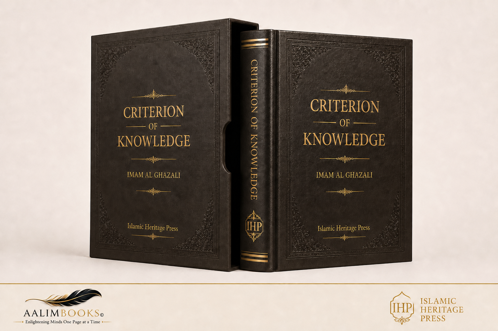
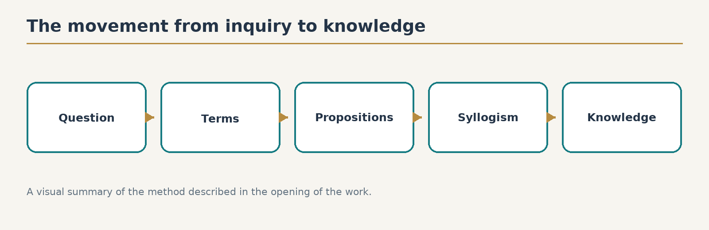
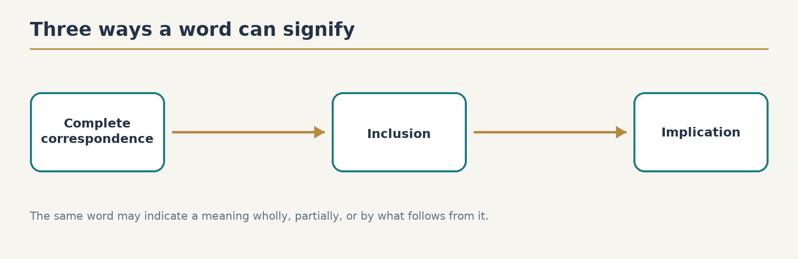
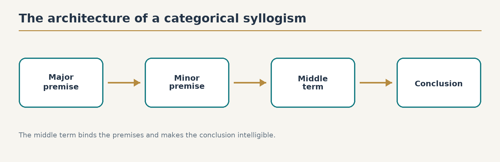

The Criterion of Knowledge in the Art of Logic (Miʿyār al-ʿIlm fī Fann al-Manṭiq)
The Criterion of Knowledge in the Art of Logic (Miʿyār al-ʿIlm fī Fann al-Manṭiq — معيار العلم في فن المنطق)
◆ ◆ ◆
Author
Abū Ḥāmid Muḥammad ibn Muḥammad al-Ghazālī al-Ṭūsī(450–505 AH / 1058–1111 CE)
Book Title
The Standard of Knowledge in the Art of Logic(Miʿyār al-ʿIlm fī Fann al-Manṭiq — معيار العلم في فن المنطق)
Author
Abū Ḥāmid al-Ghazālī(Abū Ḥāmid Muḥammad ibn Muḥammad al-Ghazālī al-Ṭūsī — أبو حامد محمد بن محمد الغزالي الطوسي)
Contents
Book Title1
Author1
Contents13
Book One: The Premises of the Syllogism34
Part One of the Book of Premises35
On the Signification of Words and the Different Ways They Indicate Meanings35
First Division35
Second Division37
Continuing the Second Division38
A Juristic Benefit (Fāʾidah Fiqhiyyah — فائدة فقهية)39
Third Division39
The Relation of Words to the Different Levels of Existence39
Fourth Division41
Words as Simple and Composite41
First: The Simple Expression (Mufrad)41
The Complete Composite Expression (Murakkab Tām)42
The Incomplete Composite Expression (Murakkab Nāqiṣ)42
Fifth Division43
The Simple Word Considered in Itself43
The Noun (Ism)43
The Verb (Fiʿl) or Word of Predication (Kalimah)44
The Particle (Ḥarf) or Particle Word (Adāh)45
A Shorter Definition45
Sixth Division46
The Relationship Between Words and Meanings46
Equivocal Terms (Mushtarak)46
Univocal Terms (Mutawāṭiʾ)46
Synonymous Terms (Mutarādif)47
Distinct Terms (Mutazāyil)47
A Clarification Regarding a Common Source of Confusion48
The Difference Between Equivocal and Univocal Terms48
Analogical Terms (Mushakkik)48
Different Types of Analogical Terms49
Similar Terms (Mutashābih)50
Types of Resemblance51
Continuing the Discussion of Similar Terms (Mutashābih)51
A Clarification Concerning Distinct Terms52
Another Common Source of Error52
Seventh Division53
Words Applied to Different Meanings53
Metaphorical Terms (Mustaʿār)53
Transferred Terms (Manqūl)54
Equivocal Terms (Mushtarak)54
The Use of These Terms54
Types of Equivocal Terms55
Examples of Metaphor56
Examples from the Qur'an56
What Is Figurative Language? (Majāz — مجاز)57
What Is Figurative Usage? (Majāz — مجاز)57
Part Two58
On Simple Meanings That Exist58
And the Relationship of Some of Them to Others58
First Division59
The Relationship Between Existing Things and Our Means of Perceiving Them59
Things Known Through the Senses59
Things Known Through Inference59
What Is Figurative Usage? (Majāz — مجاز)61
Part Two61
On Simple Meanings That Exist61
And the Relationship of Some of Them to Others61
First Division62
The Relationship Between Existing Things and Our Means of Perceiving Them62
Things Known Through the Senses62
Things Known Through Inference62
The Source of This Confusion64
Second Division66
Existing Things Considered According to Their Relationship of Generality and Specificity66
Third Division67
Existing Things Are Either Particular Individuals or Universals67
Particular Individuals67
Fourth Division69
The Relationship of Some Meanings to Others69
The Accidental Attribute (ʿAraḍī Mufāriq — عرضي مفارق)69
The Essential Constitutive Attribute (Dhātī Muqawwim — ذاتي مقوم)69
The Necessary Attribute (Lāzim — لازم)69
How Do We Distinguish the Essential from the Necessary?70
The First Criterion71
A Limitation of This Criterion71
The Second Criterion72
Fifth Division73
Essential and Accidental Attributes Considered in Themselves73
The Property (Khāṣṣah — خاصة)74
The Common Accident (ʿAraḍ ʿĀmm — عرض عام)74
Another Division of Accidental Attributes74
The Divisions of Essential Attributes76
A Clarification Regarding Genus and Species77
Is "Species" Used in the Same Sense in Both Cases?77
Is Existence a Genus?78
The Difference Between Species and Differentia79
Sixth Division80
The Different Types of Realities Mentioned in Answer to the Question: "What Is It?" (Māhiyyah — ماهية)80
First Category81
Answering by Complete Specificity81
Second Category82
Answering by Complete Commonality82
Third Category83
What May Be Mentioned Both Individually and Universally83
A Clarification Concerning the Definition of Animal84
Another Objection85
Supplement: Definitions of the Five Universals and Their Order87
Genus (Jins — جنس)87
Differentia (Faṣl — فصل)87
Species (Nawʿ — نوع)87
Property (Khāṣṣah — خاصة)88
Common Accident (ʿAraḍ ʿĀmm — عرض عام)88
The Hierarchy of Genera and Species88
The Ten Highest Genera (al-Maqūlāt al-ʿAshr — المقولات العشر)88
Examples89
Part Two91
On the Combination of Simple Meanings91
What Is a Statement? (Khabar — خبر)91
First Division of the Proposition92
What Does Predication Mean?92
The Three Types of Propositions93
1. Categorical Proposition (Qaḍiyyah Ḥamliyyah — قضية حملية)93
2. Connected Conditional Proposition94
3. Disjunctive Conditional Proposition95
Further Division of the Disjunctive Proposition96
The First Type96
The Second Type96
The Third Type97
Second Division98
Propositions According to the Relationship Between Predicate and Subject: Affirmation and Negation98
Affirmative Categorical Proposition98
Negative Categorical Proposition99
Affirmative Connected Conditional Proposition99
Negative Connected Conditional Proposition99
Affirmative Disjunctive Proposition99
Negative Disjunctive Proposition99
An Important Source of Error:100
Is "Zayd is Non-Seeing" Affirmative or Negative?100
The Answer100
Privative or Non-Positive Proposition101
Non-Positive / Non-Simple Predicate101
Continuing the Discussion of Affirmative and Negative Propositions102
Is "Non-Seeing" Equal to "Blind"?103
Third Division104
Propositions According to the Universality or Particularity of Their Subject104
Particular Proposition (Qaḍiyyah Shakhṣiyyah — قضية شخصية)104
Universal Proposition (Qaḍiyyah Kulliyyah — قضية كلية)105
The Indefinite Proposition (Muhmalah — مهملة)105
The Quantified Proposition (Maḥṣūrah — محصورة)105
A Question About the Definite Article106
Quantification in Conditional Propositions108
Fourth Division108
Propositions According to the Mode of the Predicate's Relation to the Subject108
Necessary Existence (Wujūb — وجوب)108
Necessary Non-Existence (Imtināʿ — امتناع)108
Mere Possibility (Imkān — إمكان)109
Absolute and Qualified Propositions109
Absolute Proposition (Muṭlaqah — مطلقة)109
Qualified Proposition (Muqayyadah — مقيدة)109
Necessary Propositions110
1. Unconditional Necessity110
2. Conditional Necessity110
The First Kind110
Continuing the Types of Conditional Necessity111
Can Something Be Permanent Without Being Necessary?112
Fifth Division112
Propositions Considered According to Their Contradictories112
What Are Contradictory Propositions?113
First Condition114
Difference in Affirmation and Negation114
Second Condition114
The Subject Must Be the Same114
Third Condition115
The Predicate Must Be the Same115
Fourth Condition116
The Predicate Must Refer to the Same Aspect116
Fifth Condition116
The Relation Must Be the Same116
Sixth Condition118
The Mode of Attribution Must Be the Same118
Seventh Condition118
The Time Must Be the Same118
Eighth Condition119
In Universal Propositions119
Sixth Division121
Conversion of Propositions (ʿAks — عكس)121
1. Universal Negative Proposition121
2. Universal Affirmative Proposition122
3. Particular Negative Proposition122
4. Particular Affirmative Proposition122
The Book of the Syllogism124
First Investigation: The Form of the Syllogism125
The First Type:126
The Categorical Syllogism126
The Three Terms of the Syllogism127
The Middle Term127
The Minor Term127
The Major Term128
Example128
Juristic Example129
Second Division of the Categorical Syllogism130
According to the Position of the Middle Term130
First Figure130
Second Figure130
Third Figure130
The First Figure130
Four Productive Forms of the First Figure131
1. Two Universal Affirmatives132
2. Two Affirmatives, with the Minor Premise Particular132
3. Universal Affirmative Minor Premise and Universal Negative Major Premise132
4. Particular Affirmative Minor Premise and Universal Negative Major Premise132
The Second Figure134
First Form135
Second Form136
Third Form136
Fourth Form137
Conditions of the Second Figure137
1. The premises must differ in quality.138
2. The major premise must be universal.138
The Third Figure138
First Form139
Second Form139
Third Form140
Fourth Form140
Fifth Form140
Sixth Form141
Conditions of the Third Figure141
1. The minor premise must be affirmative.141
2. At least one premise must be universal.142
Total Number of Valid Forms142
First Figure142
Second Figure142
Third Figure142
Special Features of the Three Figures142
First Figure142
Middle Term142
Produces142
Second Figure143
Middle Term143
Premises143
Produces143
Third Figure143
Middle Term143
Premises143
Special Feature143
Produces143
Why Are They Called First, Second, and Third?143
Juristic Examples of the Fourteen Syllogistic Forms144
Examples of the First Figure144
Examples of the Second Figure144
Examples of the Third Figure145
The Connected Conditional Syllogism146
The Third Type: The Disjunctive Conditional Syllogism149
When There Are Three or More Alternatives151
When the Alternatives Are Not Exhaustive151
Its Use in Jurisprudence153
The Fourth Type: Proof by Contradiction153
Juristic Example153
Rational Example154
How This Method Works154
Why Is It Called "Proof by Contradiction"?155
The Fifth Type: Induction155
Example from Rational Inquiry155
The Weakness of This Argument156
What If Most Cases Are Examined?156
Three Ways of Transferring a Judgment157
1. From a Universal to a Particular157
2. From One Particular to Another Particular157
3. From Many Particulars to One Particular157
Example of Induction in Jurisprudence158
An Objection Concerning Incomplete Induction159
Why Complete Induction Is Difficult160
The Limits of Induction160
Example from Rational Inquiry161
The Sixth Type: Analogy (Tamthīl)163
An Example from Rational Theology163
A Common Source of Error164
Another Example165
The Seventh Type: Compound and Incomplete Syllogisms177
Omitted Premises177
Compound and Mixed Arguments179
Chains of Syllogisms179
Hidden Syllogisms in Speech180
Conclusion180
The Second Investigation of the Book of Syllogism:181
The Matter of the Syllogism181
The Four Layers182
Grades of the Matter of Syllogisms183
The Fifth Type: Poetic Reasoning184
Examples184
The Sources of Certain Premises186
First: Pure Rational First Principles186
Second: Sense Perceptions187
Third: Experimental Knowledge187
An Objection188
Intuitive Judgments (Hadsiyyāt)189
The Fourth Category190
The Second Division191
The First Category: Commonly Accepted Opinions (Mashhūrāt)191
The First Cause192
The Second Cause193
The Third Cause193
The Fourth Cause194
The Fifth Cause194
The Second Category: Accepted Propositions (Maqbūlāt)196
The Third Category: Probable Propositions (Maẓnūnāt)196
The Second Kind197
The First Type197
The Second Type198
The Third Division200
Fallacies Arising from Words200
Fallacies Arising from Meaning201
The First Category203
The Second Category203
The Third Category203
The Fourth Category205
The Third Investigation208
On Fallacies in Syllogisms208
Chapter One208
A Survey of the Sources of Error208
First Source of Error:209
Failure to Conform to One of the Three Figures209
Second Source of Error:211
Failure to Conform to a Productive Mood211
Third Source of Error:212
Failure to Distinguish the Three Terms212
Fourth Source of Error:212
Failure to Distinguish the Premises Properly212
Fifth Source of Error:213
A False Premise213
Begging the Question215
Seventh Source of Error:215
The Premises Are Not Better Known Than the Conclusion215
Conclusion215
Chapter Two216
On the Sophists’ Illusion216
The First Category:217
Errors Related to the Form of the Syllogism217
Another Sophistical Objection218
Another Objection220
Another Objection221
The Second Category222
Doubts Arising from Errors in the Premises222
The Third Category227
Doubts Concerning Both Premises and Conclusions227
The Fourth Investigation236
Concerning Matters Related to the Syllogism236
Chapter: The Difference Between Demonstration by Cause and Demonstration by Sign236
Chapter: Explaining Certainty239
Chapter: The Main Types of Questions241
First: The Question “Whether” (hal)241
Second: The Question “What” (mā)242
Third: The Question “Why” (lim)242
Fourth: The Question “Which” (ayy)243
Chapter: The Meaning of Essential and Primary243
Chapter: What Makes Demonstration Complete244
Chapter: Resolving a Doubt Concerning Circular Proof248
Chapter: The Subject Matter of True Demonstration249
Chapter: The Divisions of Cause252
The Book of Definition (Kitāb al-Ḥadd)256
First Art: The Principles of Definitions256
Chapter One: The Need for Definition256
Chapter Two259
The Matter and Form of a Definition259
A Question261
Chapter Three262
The Order of Seeking a Definition Through Questioning262
A Question263
The Essence of Definition263
Chapter Four265
The Different Types of What Is Called a Definition265
The First Type:265
The Second Type:266
The Third Type:266
The Fourth Type:266
The Fifth Type:268
Chapter Five269
Why a Definition Cannot Be Obtained Through Demonstration269
First Possibility:269
Second Possibility:270
How Then Is a Definition Acquired?271
First Equality: Conversion271
Second Equality: Equality in Meaning271
Example: Defining Wine271
Chapter Six274
Sources of Error in Definitions274
The First Source of Error: Mistakes Concerning the Genus274
1. Using the Differentia in Place of the Genus274
2. Using the Material Instead of the Genus275
3. Using Prime Matter Instead of the Genus275
4. Using Parts Instead of the Genus275
5. Using a Habit or Disposition Instead of a Capacity276
6. Using a Species Instead of the Genus276
The Second Source of Error: Mistakes Concerning the Differentia277
The Third Source of Error: Mistakes Common to Both Genus and Differentia277
1. Defining Something by Something More Obscure Than It277
2. Defining Something by Something Equally Unknown277
3. Defining Relatives Through One Another278
4. Defining Something Through Itself or Through What Is Known Only After It279
Chapter Seven279
Why Exhaustively Defining Things Is Extremely Difficult for Human Ability279
First Difficulty: Identifying the Closest Genus280
Second Difficulty: Distinguishing Essential Differentiae from Necessary Properties280
Third Difficulty: Ensuring That All Essential Differentiae Are Included280
Fourth Difficulty: Preserving the Proper Order of Differentiae281
Part Two: Detailed Definitions283
First Reason283
Second Reason283
Terms Commonly Used in Metaphysics284
The Creator (al-Bārī) — The First Principle285
Intellect (al-ʿAql)286
The Three Common Usages286
Intellect According to the Philosophers287
The First Meaning287
Theoretical Intellect (al-ʿAql al-Naẓarī)288
Practical Intellect (al-ʿAql al-ʿAmalī)288
The Four Stages of the Theoretical Intellect289
First Stage: The Material Intellect (al-ʿAql al-Hayūlānī)289
Second Stage: The Intellect in Habit (al-ʿAql bi’l-Malakah)289
Third Stage: The Actual Intellect (al-ʿAql bi’l-Fiʿl)289
Fourth Stage: The Acquired Intellect (al-ʿAql al-Mustafād)289
Definitions of These Four Intellects290
Material Intellect290
Intellect in Habit290
Actual Intellect290
Acquired Intellect290
The Active Intellect (al-ʿAql al-Faʿʿāl)291
Analogy of the Active Intellect291
Active Intellect and Angels292
The Soul (al-Nafs)292
The Soul in the First Sense292
The Soul in the Second Sense292
Explanation of the First Definition293
Why They Preferred the Word “Perfection”293
Meaning of the Remaining Phrases294
Human Souls and Celestial Souls294
Universal Intellect and Universal Soul294
1. Bodies294
2. Active Intellects295
3. Souls295
Universal Intellect295
Universal Intellect (al-ʿAql al-Kullī) and Intellect of the Whole (ʿAql al-Kull)296
First Meaning of the Intellect of the Whole296
Second Meaning of the Intellect of the Whole296
Universal Soul and Soul of the Whole297
The Angel297
Cause and Effect298
Cause (ʿIllah)298
Effect (Maʿlūl)298
Difference Between “Through” and “With”298
Origination (Ibdaʿ)299
First Sense299
Second Sense299
Creation (Khalq)299
First Sense299
Second Sense300
Bringing Into Existence (Iḥdāth)300
Temporal Origination300
Non-Temporal Origination300
Eternity and Pre-Eternity (Qidam)300
Relative Priority300
Absolute Pre-Eternity300
Temporal Eternity According to the Philosophers301
Part Three: Terms Used in Natural Philosophy (Physics)301
The Definition of Form (Ṣūrah)302
First Meaning302
Second Meaning303
Third Meaning303
Fourth Meaning303
Fifth Meaning303
Sixth Meaning303
The Definition of Prime Matter (Hayūlā)304
The Definition of Subject (Mawḍūʿ)304
The Definition of Matter (Māddah)305
The Definition of Element (ʿUnṣur)305
The Definition of Stoicheion (Usṭuqus)305
The Definition of Pillar (Rukn)306
The Definition of Nature (Ṭabīʿah)306
The Definition of Natural Disposition (Ṭabʿ)307
The Definition of Body (Jism)308
Body (Jism)308
Substance (Jawhar)308
First Meaning309
Second Meaning309
Third Meaning309
Fourth Meaning309
Accident (ʿAraḍ)310
First Meaning310
Second Meaning310
Third Meaning310
Fourth Meaning310
Fifth Meaning310
Sixth Meaning311
The Celestial Sphere (Falak)311
A Star (Kawkab)312
The Sun312
The Moon312
Fire312
Air312
Water313
Earth313
The World (ʿĀlam)313
Motion (Ḥarakah)313
Duration (Dahr)314
Time (Zamān)314
The Instant (Ān)314
Place (Makān)314
Void (Khalāʾ)315
Plenum (Malāʾ)315
Nonexistence (ʿAdam)315
Rest (Sukūn)315
Speed (Surʿah)316
Slowness (Buṭʾ)316
Inclination (Mayl)316
Lightness (Khiffah)316
Heaviness (Thiqal)316
Heat (Ḥarārah)316
Coldness (Burūdah)317
Moisture (Ruṭūbah)317
Dryness (Yubūsah)317
Roughness (Khushūnah)317
Smoothness (Mulāsah)318
Hardness (Ṣalābah)318
Softness (Līn)318
Flexibility (Rikhāwah)318
Transparency (Shafāfiyyah)318
Rarefaction (Takhalkhul)318
First Meaning319
Second Meaning319
Third Meaning319
Fourth Meaning319
Condensation (Takāthuf)319
Aggregation (Ijtimāʿ)319
Homogeneity (Tajānus)320
Interpenetration (Mudākhilah)320
Continuity (Ittiṣāl)320
First Meaning320
Second Meaning320
Third Meaning320
Unity (Ittiḥād)321
First Meaning321
Second Meaning321
Third Meaning321
Fourth Meaning321
Succession (Tatālī)322
Section Three: Terms Used in Mathematics323
Boundary (Nihāyah)323
The Infinite (Mā Lā Nihāyah Lahu)323
Point (Nuqṭah)323
Line (Khaṭṭ)324
Surface (Saṭḥ)324
Dimension (Buʿd)324
The Difference Between a Dimension and the Three Magnitudes324
Book of the Divisions of Existence and Its Rulings325
Part One: The Categories of Existence326
On Substance (Jawhar)327
1. Substance that is not in a subject and cannot be predicated of anything328
2. Substance that is not in a subject but can be predicated of a subject328
Accidents329
Book of the Divisions of Existence and Its Rulings331
On Substance (continued)331
On Quantity (Kam)333
Continuous Quantity333
1. That which possesses position333
2. That which does not possess position334
Discrete Quantity334
Number334
Speech and Expressions334
On Quality (Kayfiyyah)335
1. Qualities Peculiar to Quantity335
2. Qualities Not Peculiar to Quantity336
Sensible Qualities336
Permanent Sensible Qualities336
Temporary Sensible Qualities336
Non-Sensible Qualities336
A. Qualities That Are Preparations for Something Else336
B. Qualities That Are Perfections Rather Than Preparations337
On Relation (Iḍāfah)338
Divisions of Relation338
Relations in Substance338
Relations in Quantity338
Relations in Quality339
Relations in Place339
Relations in Time339
Another Division of Relations339
1. Terms with Different Names339
2. Terms with the Same Name339
3. Terms with Different Forms but the Same Root340
The Principle of Reciprocity340
On Relation (Iḍāfah) — Continued341
On Place (Ayn)342
Types of Place343
1. Place in Itself343
2. Relative Place343
On Time (Matā)343
By a Well-Known Temporal Expression344
By Reference to a Known Historical Event344
Primary and Secondary Time344
Primary Time344
Secondary Time344
On Position (Waḍʿ)345
Two Kinds of Position346
1. Relative to the Body Itself346
2. Relative to Another Body347
On the Category of Possession (Lahu / Jiddah)347
Natural348
Voluntary348
On Acting (An Yafʿal)348
On Being Acted Upon (Infiʿāl)349
Types of Change350
Example: Hair Turning White350
Example: Water Becoming Hot350
The Ten Supreme Categories of Being351
First351
Second351
Third352
Sources of Confusion352
Book of the Divisions and Judgments of Existence353
Part Two353
On the Division of Existence According to Its Essential Attributes and States353
On the Division into Cause and Effect353
1. Part of the Effect354
2. Not Part of the Effect354
The Cause That Is in Contact354
The Cause That Is Separate355
The Final Cause356
On the Division into Potentiality and Actuality356
The Various Meanings of Power357
Passive Powers357
Active Powers357
Powers Ordered Through Stages358
The Difference Between These Two Meanings of Power358
On the Third Difference Between the Two Meanings of Power359
On the Division of Existing Things into Eternal and Originated, and Into Before and After359
The Eternal (Qadīm)359
1. Eternal in Time360
2. Eternal in Essence360
The Originated (Ḥādith)360
1. Originated in Time360
2. Originated in Essence360
Criticism of the Philosophers' Usage360
A Curious Claim361
On Before and After362
1. Priority by Nature362
2. Temporal Priority362
3. Priority in Rank363
4. Positional Priority363
5. Priority in Excellence363
6. Causal Priority363
The Common Principle Behind All Forms of Priority364
On the Division of Existing Things into Universal and Particular364
The First Meaning of the Universal364
Humanity and Its Necessary Accompaniments365
Humanity Without Condition366
The Second Meaning of the Universal367
How Universals Exist in the Mind367
The Error of Some Theologians368
The Reality of Universality369
On the Complete and the Incomplete369
On the Division into One and Many and Their Properties370
1. Unity in Genus370
2. Unity in Species370
3. Unity in a Common Accident370
4. Unity by Analogy or Relation370
5. Unity of Subject371
6. Numerical Unity371
7. Unity by Essence371
Types of Numerical Unity371
A. Composite Unity371
B. Potential Unity372
C. Absolute Unity372
The Many372
Related Forms of Unity372
On the Division of Existence into the Possible and the Necessary373
First Meaning373
Second Meaning373
Third Meaning374
Fourth Meaning374
The Necessary Existent375
Necessary Through Itself375
Necessary Through Another375
Consequence376
Continuation of the Translation376
The Second Consequence376
Impossible in Itself377
Impossible Through Another377
The Third Consequence377
The Fourth Consequence378
AL - GHAZALI :
And may Allah send His blessings and peace upon our master Muhammad, his family, and grant them abundant peace.
O Allah, show us the truth as truth and grant us success in following it. Show us falsehood as falsehood and help us to avoid it.
Āmīn.
Know—and be certain, O seeker whose desire and determination are devoted to attaining knowledge, whose aspiration is directed toward the secrets of intellectual realities (al-Ḥaqāʾiq al-ʿAqliyyah — الحقائق العقلية), whose efforts and striving have turned away from the adornments of this world and the attainment of its insignificant pleasures, and whose earnest endeavor and exertion are dedicated to achieving true happiness through knowledge and worship—that after praising Allah, whose praise rightly precedes every matter of importance, and after invoking blessings upon the Prophet Muhammad ﷺ, His Messenger and servant:
The motive for composing this book, entitled The Standard of Knowledge (Miʿyār al-ʿIlm — معيار العلم), is two important objectives.
The first is to explain the methods of thinking and investigation (al-Fikr wa al-Naẓar — الفكر والنظر), and to illuminate the pathways of syllogistic reasoning (al-Aqyisah — الأقيسة) and inference (al-ʿIbar — العبر).
For theoretical sciences (al-ʿUlūm al-Naẓariyyah — العلوم النظرية) are not naturally implanted in human beings by instinct (Fiṭrah — فطرة) or innate disposition (Gharīzah — غريزة); rather, they must necessarily be acquired and sought after. Yet not every seeker knows how to seek correctly, nor does everyone find the proper path to what is sought. Likewise, not every traveler on the path is guided toward completion and perfection, remaining safe from the illusion of having reached the summit of excellence while actually stopping short of it. Nor is everyone who imagines himself to have arrived at the pattern of correctness secure from being deceived by a mirage while believing it to be water.
Since, in matters of rational inquiry (al-Maʿqūlāt — المعقولات), the occasions for missteps have become numerous, and the causes of error and deviation widespread, and since the mirror of the intellect (al-ʿAql — العقل) is seldom free from the disturbances caused by confused imaginings (Awhām — أوهام) and the deceptions of imagination (Khayāl — خيال), we have arranged this book to serve as:
a standard (Miʿyār — معيار) for examination and reflection,
a scale (Mīzān — ميزان) for research and intellectual inquiry,
a polish for the mind,
and a whetstone for sharpening the powers of thought and reason.
Its relationship to rational proofs (Adillat al-ʿUqūl — أدلة العقول) is like that of prosody (ʿArūḍ — العروض) to poetry, and like that of grammar (Naḥw — النحو) to correct inflection and syntax (Iʿrāb — الإعراب).
For just as faulty poetry cannot be distinguished from properly metered poetry except by the scale of prosody (ʿArūḍ — العروض), and correct grammatical inflection (Iʿrāb — الإعراب) cannot be distinguished from error except through the touchstone of grammar (Naḥw — النحو), likewise, defective proof cannot be distinguished from sound proof, nor valid reasoning from invalid reasoning, except by means of this book.
Therefore, any investigation (Naẓar — نظر) that is not weighed by this scale and measured by this criterion (Miʿyār — معيار), know that it is defective in its measure and cannot be trusted against hidden errors and subtle pitfalls.
The second motive for writing this work is to enable the reader to understand what we included in our book The Incoherence of the Philosophers (Tahāfut al-Falāsifah — تهافت الفلاسفة). In that work, we debated the philosophers using their own language and addressed them according to the technical terminology upon which they had agreed in the science of logic (Manṭiq — منطق). In the present book, the meanings of those technical terms will become clear.
This is the more specific of the two motives, whereas the first is both broader and more important.
hearas for its being more important, the reason is obvious. As for its being broader, this is because its benefit extends to all theoretical sciences (al-ʿUlūm al-Naẓariyyah — العلوم النظرية), whether intellectual (ʿAqliyyah — عقلية) or juristic (Fiqhiyyah — فقهية). We shall show you that reasoning in legal matters is no different from reasoning in intellectual matters with respect to its arrangement, conditions, and criterion. The only difference lies in the sources from which the premises (Muqaddimāt — مقدمات) are derived.
Since, in our time, people's interests have turned away from most sciences and become focused almost entirely on jurisprudence (Fiqh — فقه), this led us to compose several works concerning methods of legal debate and investigation. We first wrote Maʾākhidh al-Khilāf (مآخذ الخلاف), then Lubāb al-Naẓar (لباب النظر), then Taḥṣīn al-Maʾākhidh (تحصين المآخذ), and finally Kitāb al-Mabādiʾ wa al-Ghāyāt (كتاب المبادئ والغايات), which represents the highest level of inquiry conducted according to the method of rational investigation (al-Naẓar al-ʿAqlī — النظر العقلي) in its arrangement and conditions, while differing from it only in the nature of its premises.
This also encouraged us, in the present book, to include examples drawn from jurisprudence (Fiqh — فقه) within our discussion. In this way, its benefit will be more comprehensive and its usefulness will extend to all classes of readers.
Perhaps someone who looks with the one-eyed gaze of criticism and disparagement may object to our departure from convention by explaining matters of certain rational knowledge (al-ʿAqliyyāt al-Qaṭʿiyyah — العقليات القطعية) through legal examples that are based on probability (Ẓanniyyāt — ظنيات).
Let such a person restrain his excessiveness in criticism and disparagement, and let him recognize his own ignorance of the art of illustration (Ṣināʿat al-Tamthīl — صناعة التمثيل) and its benefit.
For examples were devised solely to clarify what is obscure by means of something more familiar to the guided listener. In this way, he may compare what is unknown to him with what is already known, and the unknown matter will thereby become firmly established in his mind.
If one is addressing a carpenter who understands nothing except carpentry and the use of its tools, then his guide should not give him examples except from the craft of carpentry. Such examples will reach his understanding more quickly and will be more suited to the way his mind works.
Just as it is improper to teach a learner except in his own language, it is likewise improper to convey intellectual concepts (al-Maʿqūlāt — المعقولات) to his understanding except through examples that are firmly established in his knowledge.
We have now given you a general introduction to the purpose and objective of this book. Let us now proceed to explain it in greater detail and with further clarification, due to the great need that seekers of knowledge and investigation have for this work.
For just as faulty poetry cannot be distinguished from correct poetry except by the rules of prosody (ʿArūḍ — العروض), and correct grammar cannot be distinguished from mistakes except by the science of grammar (Naḥw — النحو), in the same way, unsound proof cannot be distinguished from sound proof, and correct reasoning cannot be distinguished from faulty reasoning, except through this book.
Therefore, if you find any line of reasoning that has not been weighed by this scale and measured by this criterion (Miʿyār — معيار), then know that it is flawed and cannot be trusted to be free from hidden errors and subtle mistakes.
The second reason for writing this book is to explain the ideas that we mentioned in our book The Incoherence of the Philosophers (Tahāfut al-Falāsifah — تهافت الفلاسفة). In that work, we debated the philosophers using their own language and according to the technical terms they had agreed upon in the science of logic (Manṭiq — منطق). In this book, the meanings of those terms will become clear.
This second purpose is more specific, while the first purpose is broader and more important.
It is more important because its value is obvious. It is broader because its benefit applies to all theoretical sciences (al-ʿUlūm al-Naẓariyyah — العلوم النظرية), whether they deal with intellectual subjects (ʿAqliyyah — عقلية) or Islamic law (Fiqhiyyah — فقهية)
We will show that reasoning in legal matters is not different from reasoning in intellectual matters in terms of its structure, conditions, and standards. The only difference is where the premises (Muqaddimāt — مقدمات) come from.
Since the people of our time have become mainly interested in the study of fiqh (Fiqh — فقه), and many have limited themselves to it alone, this encouraged us to write several books on legal debate and reasoning. We first wrote Maʾākhidh al-Khilāf (مآخذ الخلاف), then Lubāb al-Naẓar (لباب النظر), then Taḥṣīn al-Maʾākhidh (تحصين المآخذ), and finally Kitāb al-Mabādiʾ wa al-Ghāyāt (كتاب المبادئ والغايات). This last work represents the highest level of research based on the methods of rational investigation (al-Naẓar al-ʿAqlī — النظر العقلي), differing only in the nature of its premises.
For this reason, we also chose to include examples from fiqh (Fiqh — فقه) in this book. By doing so, its benefit becomes wider and more useful for different types of readers.
Perhaps someone who looks only for faults and criticism may object to our use of legal examples—which are based on probability (Ẓann — ظن)—to explain intellectual subjects that are based on certainty.
Such a person should stop criticizing and realize that he does not understand the purpose and value of using examples (Tamthīl — تمثيل).
Examples are used to make difficult ideas easier to understand. They explain something unfamiliar by comparing it to something that is already familiar to the reader. In this way, a person can relate what he does not know to what he already knows, and the new idea becomes clear in his mind.
If you are teaching a carpenter who knows only carpentry and the use of its tools, then you should use examples from carpentry. Such examples will be easier for him to understand and more suitable for the way he thinks.
Just as a student should be taught in a language he understands, intellectual concepts (Maʿqūlāt — معقولات) should also be explained through examples that are already familiar to him.
We have now given a general explanation of the purpose and objective of this book. We will now explain it in greater detail, because students and seekers of knowledge are in great need of this work.
Perhaps you may say, O person deceived by the knowledge already in your mind, and careless about what rational proofs (Barāhīn ʿAqliyyah — براهين عقلية) can lead to:
"What is the need for all this emphasis and importance? Why does an intelligent person need a criterion (Miʿyār — معيار) and a scale (Mīzān — ميزان)? Is not the intellect (ʿAql — عقل) itself the straight balance and the correct standard? Once a person possesses a sound intellect, why would he need further guidance and correction?"
Slow down and think carefully before dismissing the dangers and difficulties found in rational inquiry. First realize that within you there are three judges:
the sensory judge (al-Ḥākim al-Ḥissī — الحاكم الحسي),
the imaginative judge (al-Ḥākim al-Wahmī — الحاكم الوهمي),
and the rational judge (al-Ḥākim al-ʿAqlī — الحاكم العقلي).
Among these judges, the one that reaches the truth is the rational judge.
However, from the very beginning of life, the soul is more willing to obey and accept the judgments of the senses and imagination. This is because they are the first to present their judgments to the soul. The soul becomes accustomed to following them and grows familiar with their authority before the rational judge fully develops.
As a result, it becomes difficult for the soul to abandon what it is used to and submit to the judgment of reason, which appears to it as something unfamiliar. Because of this, people often oppose the judgment of reason and reject it, while accepting and believing the judgments of the senses and imagination. This continues until the soul is disciplined through the method that we shall explain later in this book.
If you want proof that the judgments of the senses and imagination are often mistaken and unreliable, then consider how the senses judge when you look at the sun. The senses tell you that the sun is only about the size of a coin. They show the stars as though they were small gold coins scattered across a blue carpet.
Likewise, when you look at the shadow cast on the ground by a standing person, the senses judge that the shadow is still and motionless. In the same way, when you look at a growing child, the senses judge that his height remains unchanged.
Yet reason (ʿAql — عقل), through clear proofs that the senses cannot refute, tells us that the disk of the sun is many times larger than the earth itself. The same is true of the stars.
Reason also shows us that the shadow which appears motionless is actually moving constantly without stopping. Likewise, the child's height is not standing still at all. Rather, he is continuously growing and increasing in size.
This growth takes place little by little, so gradually that the senses are unable to detect it, while reason confirms that it is happening all the time.Mistakes made by the senses (Ḥiss — حس) are very numerous, and it would be impossible to list them all. The few examples we have mentioned are enough to show you how they can mislead and deceive.
As for the imaginative faculty (Wahm — وهم), do not overlook its errors either. Consider how it rejects the existence of something that cannot be pointed to in a particular direction. It also finds it difficult to accept the existence of something that does not resemble physical bodies in terms of separation and connection, and something that cannot be described as being either inside the world or outside it.
Had the intellect (ʿAql — عقل) not protected us from the misleading judgments of imagination, many false beliefs about the Creator of the heavens and the earth would have become firmly rooted in the minds of scholars just as they have become rooted in the hearts of ordinary and ignorant people.
Yet we do not need such distant examples to show how imagination deceives. Its mistakes can be seen even in things that are very close to what we experience with our senses.
Suppose you are shown a single object that has movement, taste, color, and smell. If you ask the imagination to accept that all of these qualities exist together in one place and in one object, it struggles to understand this. Instead, it imagines that some of these qualities are beside others or attached to them, as though one thin cloth were laid over another.
The imagination is unable by its nature to understand multiple qualities existing together in the same place. This is because it takes its information from the senses, and the senses usually recognize difference only through different places or different times. When both place and time are the same, the imagination finds it difficult to accept that many distinct qualities can exist together in a single thing.
The errors of imagination of this kind are beyond counting.
All praise belongs to Allah, who has granted us the intellect that guides us away from misguidance, saves us from the darkness of ignorance, and delivers us—through the light of proof (Burhān — برهان)—from the darkness of Satan's whisperings.
If you want even more evidence of the unreliability of these two judges—the senses and imagination—then reflect upon the many texts of the Sacred Law (Sharʿ — شرع) that attribute such deceptions to Satan and call them whisperings (Waswās — وسواس). Likewise, reflect on how the light of reason is called guidance (Hudā — هدى) and light (Nūr — نور), and is attributed to Allah and His angels.
Allah says:
اللَّهُ نُورُ السَّمَاوَاتِ وَالْأَرْضِ
"Allah is the Light of the heavens and the earth." (Qur'an 24:35)
Since imagination and fantasy are major sources of whisperings, Abū Bakr (may Allah be pleased with him) said to someone carrying out a legal punishment on a criminal:
"Strike the head, for Satan is in the head."
Because these imaginary and fanciful whisperings cling so closely to the faculty of thought (al-Quwwah al-Mufakkirah — القوة المفكرة), very few people are able to free themselves from them. Their attachment is so strong that it resembles the way blood is mixed throughout our bodies.
For this reason, the Prophet ﷺ said:
«إن الشيطان ليجري من ابن آدم مجرى الدم»
"Indeed, Satan flows through the son of Adam as blood flows through the body."
When you reflect with the eye of reason on the truths we have pointed out, you will realize how greatly you need a method for protecting yourself from the misguidance of these two judges.
You may ask:
"What method can protect us when these misleading influences are so deeply attached to us?"
The answer is that the intellect has devised a subtle and remarkable solution.
It begins by leading the senses and imagination to accept certain observations that they themselves recognize and agree with. From these observations it forms premises (Muqaddimāt — مقدمات) that both the imagination and the senses accept. It then arranges these premises in a way that they cannot dispute.
From them it necessarily derives a conclusion. Since the premises came from things that both reason and imagination already agree upon, the imagination is forced to accept the conclusion as well.
These premises are drawn from truths that people do not disagree about, such as self-evident facts (Ḍarūriyyāt — ضروريات) and sensory observations (Ḥissiyyāt — حسيات). The intellect first secures the agreement of the senses and imagination on these foundations. Once they accept the premises, they must also accept the conclusion that follows from them.
Then the intellect takes this same method and applies it to matters where imagination normally resists. It uses the same patterns of reasoning to arrive at new conclusions.
When imagination rejects these new conclusions, reason is not troubled. For imagination had already accepted the premises and accepted the validity of the arrangement that produced the conclusion. Therefore, anyone who examines the matter carefully will realize that imagination rejects the conclusion only because of its own weakness and inability to grasp it—not because the conclusion is false.
The method of reasoning itself was borrowed from cases where imagination willingly accepted the result. Therefore, the fault lies not in the conclusion but in the limitations of imagination.
For this reason, the purpose of this book is to take what is known through the senses and through self-evident truths and make them a criterion (Miʿyār — معيار) for correct reasoning. Then, when we apply these principles to difficult and hidden subjects, we can be confident in the truth of the conclusions that follow from them.
You may now ask:
"If thinkers possess this method, why do they still disagree about intellectual matters? Why do they not agree on them just as they agree on many questions of geometry and arithmetic, where imagination supports reason?"
The answer is twofold.
First, what we have discussed is only one source of error, not all of them. Beyond this lie many difficult obstacles in the study of intellectual truths. Very few intelligent people are able to pass safely through all of them.
When you come to understand all the conditions required for a proof (Burhān — برهان) to produce certainty (Yaqīn — يقين), you will not find it surprising that most people fall short of fully understanding subtle intellectual realities.
Second, imaginative judgments (Qaḍāyā Wahmiyyah — قضايا وهمية) are of two kinds: some are true and some are false. The false ones often resemble the true ones so closely that it becomes difficult for the soul to distinguish between them.
Only those whom Allah supports with His guidance and blesses with following the path of truth are able to make this distinction.
Because of this, intellectual matters differ in difficulty. Some are easy for most people to understand, while others remain beyond the reach of the majority and are understood only by a few of Allah's chosen servants—those whom He supports with the light of truth.
Such people are exceedingly rare. Long ages may pass without producing more than a handful of them, let alone large numbers.
Perhaps you now think of yourself as one of the ordinary masses and begin to lose hope. You may say to yourself:
"How can I ever become a unique scholar of my age, supported by the light of truth, protected from the whispers of Satan, and fully master all the conditions of proof (Burhān — برهان)? It is better for me to remain comfortable where I am. It is safer to be satisfied with the beliefs I inherited from my forefathers than to take such a dangerous path when I am not even confident of reaching its goal."
If such a thought comes to your mind, then your situation is like that of a man who looks at a great king. He sees the king's power, wealth, army, supporters, influence, and authority. He realizes that he can never reach the king's rank or even come close to it.
Yet he knows that he could become a minister, a leader, or attain some other honorable position below that level. Nevertheless, he says:
"Since I cannot reach the highest rank and become ruler of the world, I should simply be satisfied with the trade of sweeping streets, which was the occupation of my fathers."
He follows the saying of the poet:
Leave noble ambitions and do not strive for them;
Sit where you are, for you already have food to eat and clothes to wear.
Such a person is short-sighted and lacking in ambition. Had he reflected carefully, he would have realized that there are many ranks between a street sweeper and a king.
Not everyone who cannot reach the highest levels should settle for the lowest ones. Rather, if a person rises above a low position, then whatever higher level he reaches is, compared to what he left behind, a form of leadership and excellence.
The same applies to the درجات of happiness and excellence among scholars. Every one of us has a known station that he may not exceed and a limit beyond which he cannot go. Yet each person should strive to reach the highest level that he is capable of reaching. He should bring into action all the abilities that Allah has placed within him.
You may now say:
"I understand the importance of this book from the explanations you have given. My desire to study it has increased because of what you have said about its benefits. I now understand its purpose and its fruits. So explain to me its contents."
Know, then, that the purpose of this science is to teach you how to move from the ideas already present in your mind to knowledge of things that are not yet known to you.
This process of moving from what is known to what is unknown follows a particular method and arrangement. If this method is followed correctly, it leads to the desired result. If it is neglected, the result will not be reached.
The correct method is often very similar to an incorrect one, which is why people can easily be mistaken.
This is the general subject of this science.
More specifically, the goal is knowledge (ʿIlm — علم).
Knowledge is divided into two categories.
The first is knowledge of the things themselves, such as your knowledge of a human being, a tree, the sky, and other objects.
This is called conceptualization (Taṣawwur — تصور).
The second is knowledge of the relationship between these concepts, whether by affirming one thing of another or denying one thing of another.
For example, when you say:
"A human being is an animal."
or
"A human being is not a stone."
First, you understand the meanings of "human being" and "stone." This understanding is a conceptualization (Taṣawwur — تصور) of each thing in itself.
Then you make a judgment that one of these meanings applies to the other or does not apply to it.
This type of knowledge is called assent or judgment (Taṣdīq — تصديق), because it is something that can be affirmed as true or denied as false.
The person engaged in theoretical inquiry (Naẓar — نظر) is seeking one of two things:
either a concept (Taṣawwur — تصور),
or a judgment (Taṣdīq — تصديق).
The method that leads to a concept is called an explanatory statement (Qawl Shāriḥ — قول شارح). This is of two types:
a definition (Ḥadd — حد),
or a description (Rasm — رسم).
The method that leads to a judgment is called a proof (Ḥujjah — حجة). This also has different forms, including:
the syllogism (Qiyās — قياس),
induction (Istiqrāʾ — استقراء),
and other types of reasoning.
The purpose of this book is to explain the principles of the explanatory statement that leads to a concept, whether it is a definition or a description. It also explains the principles of proof that lead to judgment, whether through a syllogism or another form of reasoning.
In addition, it points out the conditions required for these methods to be sound and the common mistakes that occur in them.
You may ask:
"How can a person lack conceptual knowledge (Taṣawwur — تصور) and therefore need a definition?"
We answer:
This happens when a person hears a word whose meaning he does not understand.
For example, someone may ask:
"What is a vacuum (Khalāʾ — خلاء)? What is fullness (Malāʾ — ملاء)? What is an angel (Malak — ملك)? What is a devil (Shayṭān — شيطان)? What is wine (ʿAqār — عقار)?"
You might reply:
"Wine (ʿAqār — عقار) is the same as Khamr (خمر)."
If he still does not understand because he is unfamiliar with that name, then you explain it through a definition.
You would say:
"Wine (Khamr — خمر) is an intoxicating drink made by pressing grapes."
At that point, he gains a conceptual understanding (Taṣawwur — تصور) of what wine is.
As for judgmental knowledge (Taṣdīq — تصديق), it occurs when a person does not know whether a certain statement is true.
For example, a person may not know that the universe has a Creator and asks:
"Does the universe have a Creator?"
You reply:
"Yes, the universe has a Creator."
You then establish the truth of this statement through proof and demonstration (Burhān — برهان), as we shall explain later.
This, in summary, is the subject matter of this book.
If you would like to know the outline of the chapters, then know that we have divided our discussion of the means by which knowledge is attained (Madārik al-ʿUlūm — مدارك العلوم) into four books:
The Book of the Premises of the Syllogism (Muqaddimāt al-Qiyās — مقدمات القياس)
The Book of the Syllogism (al-Qiyās — القياس)
The Book of Definition (al-Ḥadd — الحد)
The Book of the Categories of Existence and Their Rulings (Aqsām al-Wujūd wa Aḥkāmuhu — أقسام الوجود وأحكامه)

Figure 1. The path by which disciplined inquiry becomes knowledge.
Book One: The Premises of the Syllogism
Before beginning, let us explain why the study of the syllogism (Qiyās — قياس) must be divided into different levels and parts.
The highest goal in this subject is the demonstration (Burhān — برهان) that produces certain knowledge (ʿIlm Yaqīnī — علم يقيني).
A demonstration is a type of syllogism. This is because syllogism is a general term, while demonstration is a specific kind of syllogism.
Now, a syllogism is made up of two premises (Muqaddimatayn — مقدمتين), and every premise is made up of:
a subject (Mawḍūʿ — موضوع), which is the thing being spoken about,
and a predicate (Maḥmūl — محمول), which is what is affirmed or denied about the subject.
Every subject and predicate that appears in a proposition (Qaḍiyyah — قضية) is expressed by words, and those words necessarily point to meanings.
Therefore, the syllogism is something composed of several parts.
Whenever a person studies something that is composed of parts, the proper method is to break it down into its simpler elements. He first studies the individual parts and then studies the complete structure built from them.
For this reason, studying the syllogism requires us first to study the premises from which it is made.
Studying the premises requires us to study the subject and predicate from which the premises are formed.
Studying the subject and predicate requires us to study the individual words and meanings through which the subject and predicate are understood.
Studying the premises also requires us to study their conditions and requirements. This is because every composite thing consists of both material and form, and both must be examined.
This is similar to a person who wants to build a house. He must first prepare the materials from which the house will be built, such as bricks, clay, and wood. After that, he turns his attention to the design, arrangement, and method of construction.
The study of the syllogism is the same. First we study its materials, and then we study the way those materials are arranged and combined.
This explains the need for the divisions and topics that follow.
Having clarified this, we shall now begin our discussion of the subject itself
Part One of the Book of Premises

Figure 2. The three degrees of signification.
On the Signification of Words and the Different Ways They Indicate Meanings
This discussion will be explained through seven divisions.
First Division
Words (Alfāẓ — ألفاظ) indicate meanings (Maʿānī — معاني) in three different ways.
The First Type: Signification by Complete Correspondence
(Dalālat al-Muṭābaqah — دلالة المطابقة)
This occurs when a word points directly to the thing for which it was originally assigned.
For example, the word "wall" points directly to the wall itself.
The Second Type: Signification by Inclusion
(Dalālat al-Taḍammun — دلالة التضمن)
This occurs when a word points to part of the meaning contained within the thing it signifies.
For example:
The word "house" indicates a wall, because a wall is part of a house.
The word "human being" indicates an animal, because animality is part of what a human being is.
Likewise, every more specific essential description points to a more general essential description contained within it.
The Third Type: Signification by Implication
(Dalālat al-Iltizām — دلالة الالتزام)
This occurs when a word points to something that is not part of its meaning but is necessarily connected to it.
For example:
The word "roof" implies the existence of walls, because a roof normally requires walls to support it.
The word "human being" implies the ability to learn tailoring or other crafts, since human beings possess the capacity to acquire such skills.
These things are not part of the definition of a roof or a human being, but they are associated with them and follow from them.
When forming definitions (Taʿrīfāt — تعريفات), only the first two kinds of signification are considered:
Signification by correspondence (Muṭābaqah — مطابقة)
Signification by inclusion (Taḍammun — تضمن)
As for signification by implication (Iltizām — التزام), it is not used in definitions.
The reason is that the language-maker did not assign words to indicate these implied meanings directly, unlike the first two types.
Furthermore, the implied meanings of things cannot be fully limited or counted. Every thing has consequences and implications, and those implications have further implications. This chain can continue indefinitely.
If implication were accepted as part of a word's definition, then a single word would point to an unlimited number of meanings, which is impossible.
Second Division
Words may also be classified according to whether their meanings are particular or universal.
A word is either particular (Juzʾī — جزئي) or universal (Kullī — كلي).
A particular term is one whose very meaning prevents it from being shared by more than one thing.
For example:
"Zayd"
"this tree"
"this horse"
When you understand the name "Zayd," you understand a specific individual. No one else shares in being the meaning intended by that particular name. The concept itself points to a single, definite individual.
A universal term, on the other hand, is one whose meaning does not prevent it from applying to many individuals.
If, in some case, it applies to only one thing, that limitation comes from something outside the meaning itself and not from the nature of the word.
Examples include:
"human being" (Insān — إنسان)
"horse" (Faras — فرس)
"tree" (Shajar — شجر)
These are names of genera, species, and other universal meanings. Their meanings can apply to many individual instances.
In Arabic, this generally applies to any noun that is preceded by the definite article (al-), provided it is not being used to refer to a specific person or thing already known to the listener.
For example, the word "the man" (al-rajul — الرجل) can be used as a universal term referring to the class of men in general.
However, it may also be used to refer to a particular man already known to the listener. You might say:
"The man has arrived."
In this case, the definite article serves to identify a specific man already known from a previous context—that is, "the man whom I mentioned before."
When no such clue or context exists, the term "man" remains a universal term, under which every individual man can be included.
Continuing the Second Division
You may ask:
"If we say, 'the spherical body that surrounds the twelve constellations of the zodiac,' and there is only one such thing in existence, how can this term be universal (Kullī — كلي) when the thing it refers to is only one? Does not the definite article imply that the whole class is included?"
The answer is that this term is still universal. For a universal term does not require that many instances actually exist. It is enough that multiple instances could exist in principle.
If it were possible for another thing of the same description to exist, it would fall under the same concept. Therefore, the concept remains universal even if only one instance currently exists.
This differs from a name like "Zayd." The concept of "Zayd" cannot be shared by another individual, either in reality or even in possibility.
You may then ask:
"What about terms such as 'the True God' (al-Ilāh al-Ḥaqq — الإله الحق)? There can neither actually nor possibly be more than one true God. Likewise, according to those who hold this view, there can only be one sun. Why are these still considered universal terms?"
The answer is that the term itself remains universal. The impossibility of multiple instances does not come from the meaning of the word itself, but from an external reason.
In the case of God, the reason is that it is impossible for the world to have two true gods. This impossibility does not arise from the meaning of the word "god" itself.
We only require that the meaning of a universal term does not itself prevent multiple instances.
From these questions and answers, it becomes clear that universals are of three kinds:
A universal that has many actual instances, such as "human being" when many humans exist.
A universal that has only one actual instance but could have many possible instances, such as "human being" if only one person remained alive, or the celestial sphere surrounding the twelve zodiac signs.
A universal that has neither actual nor possible multiple instances, such as "the True God." Yet it remains universal because the restriction comes from an external reason, not from the meaning of the term itself.
This is unlike the name "Zayd," whose meaning itself points to a particular individual.
A Juristic Benefit (Fāʾidah Fiqhiyyah — فائدة فقهية)
The scholars of legal theory (Uṣūliyyūn — أصوليون) disagreed over whether a singular noun accompanied by the definite article (al-), such as "the man" or "the dinar," automatically includes all members of that class.
For example, when someone says:
"The dinar is better than the dirham."
or
"The man is better than the woman."
Some scholars thought that the word itself does not indicate universality. They believed that the general meaning is understood only through context. In the first example, the comparison between dinars and dirhams suggests a general meaning. In the second, the comparison between men and women suggests the same.
However, if you understand what we have explained about the nature of universals, you will see the mistake in this view. A universal term indicates all members of its class by its very nature and does not require an additional clue.
If you ask:
"How did they fall into this mistake?"
The answer will become clear in the next division.
Third Division
The Relation of Words to the Different Levels of Existence
Know that, for our present purpose, there are four levels of existence, and words occupy the third level.
A thing exists:
In external reality (al-Aʿyān — الأعيان).
In the mind (al-Adhhān — الأذهان).
In words (Alfāẓ — ألفاظ).
In writing (Kitābah — كتابة).
Writing points to words.
Words point to meanings that exist in the mind.
The meanings in the mind are representations of things that exist in external reality.
A thing cannot be represented in the mind unless it first possesses some reality in itself.
When a representation of a thing is formed in the mind, that is what we call knowledge (ʿIlm — علم). Knowledge is nothing more than a mental image that corresponds to the thing known.
Once such a mental representation exists, words can be formed to indicate it.
And once words are formed, writing can be used to represent those words.
Thus:
External Reality → Mental Concept → Spoken Word → Written Word
The connection between these levels is as follows:
Writing indicates words.
Words indicate mental concepts.
Mental concepts represent external realities.
The first connection is natural, while the latter two are based upon convention and linguistic agreement.
For this reason, we say that anyone who claims that a singular noun does not indicate universality imagines that words refer directly to external objects.
External objects are particular individuals. The dinar that exists in reality is a specific individual coin. If many such coins exist, they are called dinars.
But such a person fails to realize that the individual dinar leaves a mental image in the mind. This mental image corresponds not only to that one coin but to every actual or possible dinar.
The image existing in the mind is therefore universal, not particular.
Once you understand that words point primarily to concepts in the mind rather than directly to external objects, and that these concepts are universal, it becomes clear that the word itself is also universal.
What we have explained already shows that words indicate concepts in the mind, while the concepts in the mind are representations of things in external reality.
We shall discuss universal concepts in greater detail later in the section dealing with the categories of existence and their related subjects.
Fourth Division
Words as Simple and Composite
Words may be divided into:
Simple (Mufrad — مفرد)
Composite (Murakkab — مركب)
Composite expressions are further divided into:
Incomplete composites (Murakkab Nāqiṣ — مركب ناقص)
Complete composites (Murakkab Tām — مركب تام)
Thus there are three categories in total.
First: The Simple Expression (Mufrad)
A simple expression is one whose parts do not indicate any meaning when considered as parts of that expression.
For example:
"ʿĪsā" (Jesus)
"Insān" (human being)
The syllables making up these words do not individually signify anything.
You may ask:
"What about a name such as 'ʿAbd al-Malik'?"
Know that when it is used as a proper name, like "Zayd," it is also considered simple.
In that case, neither "ʿAbd" nor "al-Malik" is intended separately. The parts are not functioning independently and therefore do not convey separate meanings.
Such names resemble compound proper names like:
Baʿlabakk (Baalbek)
Maʿdī Karib (معد يكرب)
which function as single names despite consisting of multiple words.
However, if the person is actually being described as "a servant of the King," then the phrase functions differently. It is no longer merely a name but a description.
In that case, it becomes a composite expression rather than a simple one.
Understand these subtle distinctions carefully, for many errors in theoretical reasoning arise from neglecting them.
The Complete Composite Expression (Murakkab Tām)
A complete composite expression is one in which each word has its own meaning, and the whole expression conveys a complete thought such that one may stop speaking after it.
It may consist of:
two nouns, or
a noun and a verb.
Logicians refer to the verb as a word of predication (Kalimah — كلمة).
Examples:
"Zayd is walking."
"The rational being is an animal."
These are complete composite expressions because they communicate a complete judgment.
The Incomplete Composite Expression (Murakkab Nāqiṣ)
An incomplete composite expression does not communicate a complete thought.
For example:
"in the house"
or
"a human being"
These do not provide a complete statement on their own.
Likewise, if someone merely says:
"Zayd in..."
or
"Zayd does not..."
the listener still waits for the remainder of the sentence.
Only when the statement is completed—such as:
"Zayd is in the house."
or
"Zayd does not oppress."
does it convey a complete meaning upon which one may properly stop.
Fifth Division
The Simple Word Considered in Itself
A word (Lafẓ — لفظ) is either a noun (Ism — اسم), a verb (Fiʿl — فعل), or a particle (Ḥarf — حرف).
Let us define each of these according to the method of the logicians so that their categories become clear.
The Noun (Ism)
A noun is a sound that:
signifies a meaning by convention,
is not connected to a particular time,
none of its parts signify anything independently,
and it indicates a complete meaning.
Since every definition (Ḥadd — حد) consists of a genus and differentiating characteristics, each part of this definition serves a purpose.
When we say "a sound," this excludes things such as sneezing, throat-clearing, coughing, and similar noises.
When we say "signifying by convention," this excludes things like the barking of a dog. A dog's bark may indicate that a stranger has arrived, but it does not do so through an agreed linguistic convention.
When we say "not connected to time," this distinguishes nouns from words such as:
"he stands,"
"he stood,"
"he will stand."
All of these are meaningful sounds, but they indicate a meaning connected to a particular time.
When we say "none of its parts signify anything independently," we exclude complete expressions such as:
"Zayd is an animal."
This is not a noun but a statement or proposition.
Finally, when we say "it indicates a complete meaning," we exclude incomplete expressions such as:
"non-human" (lā insān — لا إنسان).
Although this expression satisfies the other conditions, it does not indicate a complete positive meaning.
The phrase "non-human" could refer to a stone, the sky, a cow, or anything else that is not human. It does not point to a specific concept but merely negates humanity. Therefore it does not indicate a complete meaning in itself.
The Verb (Fiʿl) or Word of Predication (Kalimah)
A verb is also a meaningful sound established by convention, but it differs from the noun in one important respect:
It indicates a meaning together with the time in which that meaning occurs.
Examples include:
"he stood,"
"he stands."
However, merely indicating time is not enough to make something a verb.
Words such as:
yesterday,
today,
tomorrow,
last year,
the camel's resting place,
the pilgrims' arrival place,
all indicate time, yet they are not verbs.
The reason is that a verb signifies both an action or meaning and the time in which that action occurs.
A verb always indicates something that is predicated of another thing.
Therefore, the main difference between a noun and a verb is the inclusion of time within the meaning of the verb.
The Particle (Ḥarf) or Particle Word (Adāh)
A particle is a word that indicates a meaning which cannot be fully understood by itself unless another word is joined to it.
Examples include:
"from" (min — من),
"on" (ʿalā — على),
and similar particles.
Their meanings become clear only when attached to other words.
A Shorter Definition
These definitions may also be summarized as follows:
A noun is a simple word that indicates a meaning without indicating any of the three times (past, present, or future) in which that meaning exists.
Nouns are of two kinds:
complete, such as "Zayd,"
incomplete, such as "non-human."
A verb is a simple word that indicates a meaning together with the time in which that meaning exists, without specifying a particular subject.
A particle is a word whose meaning cannot be understood except when joined to something else.
Sixth Division
The Relationship Between Words and Meanings
Words stand in four different relationships to meanings:
Equivocal (Mushtarak — مشترك)
Univocal (Mutawāṭiʾ — متواطئ)
Synonymous (Mutarādif — مترادف)
Distinct (Mutazāyil — متزايل)
Equivocal Terms (Mushtarak)
An equivocal term is a single word that is applied equally to several things whose realities and definitions are completely different.
For example, the Arabic word ʿayn (عين) may refer to:
the eye,
a spring of water,
the disk of the sun.
These are entirely different things, yet the same word is used for all of them.
Univocal Terms (Mutawāṭiʾ)
A univocal term is a word that applies to many things because they share one common meaning.
For example:
The word human being applies to both Zayd and ʿAmr.
Likewise, the word animal applies to:
humans,
horses,
birds.
All of these share the common meaning of animality, and the word is assigned to that shared meaning.
This differs from the word ʿayn, where the different things do not share a common reality.
Synonymous Terms (Mutarādif)
These are different words that refer to the same meaning.
For example:
wine (khamr — خمر),
wine (rāḥ — راح),
wine (ʿaqār — عقار).
These are different names for the same thing.
All of them fall under a single definition:
An intoxicating liquid pressed from grapes.
The words differ, but the meaning is the same.
Distinct Terms (Mutazāyil)
These are words that have none of the previous relationships.
They are different words that indicate completely different meanings and realities.
Examples include:
horse,
gold,
clothing.
These terms differ both in wording and in meaning.
The logicians advise that equivocal terms (Mushtarakāt — مشتركات) should be avoided in discussion, and especially in demonstrations (Barāhīn — براهين), because they can easily cause confusion.
Univocal terms (Mutawāṭiʾāt — متواطئات), on the other hand, are suitable for all forms of discussion and are especially important in demonstrations and logical proofs.
A Clarification Regarding a Common Source of Confusion
The Difference Between Equivocal and Univocal Terms
One of the places where people often make mistakes is in distinguishing between equivocal terms (Mushtarak — مشترك) and univocal terms (Mutawāṭiʾ — متواطئ), because the two can sometimes appear similar.
An equivocal term is a single word used for different things whose meanings have no real connection with one another.
By contrast, a univocal term is used for several things that share the same definition and reality. The word applies to each of them in exactly the same sense.
For example:
"human being" applies equally to Zayd and ʿAmr.
"animal" applies equally to a horse and an ox.
In these cases, the word applies to all instances in the same way. One instance is not more deserving of the name than another. Nor is one prior or later, stronger or weaker, in relation to the meaning expressed by the term.
However, there are cases where a single word applies to different things in one general sense, while still involving differences between those things. Let us call such a term an analogical term (Mushakkik — مشكك).
There are also cases where two things do not share exactly the same meaning but merely resemble one another. Let us call these similar terms (Mutashābih — متشابه).
Analogical Terms (Mushakkik)
An example is the term existence (Wujūd — وجود).
Existence is one meaning in itself, yet it applies differently to different things.
For example:
A substance (Jawhar — جوهر) possesses existence before an accident (ʿAraḍ — عرض).
Some accidents possess existence before others.
This is a difference of priority and posteriority.
Likewise, some things possess existence through themselves, while others possess existence through something else. That which exists through itself is more deserving of the name "existent" than that which exists through another.
Similarly, some qualities admit degrees of strength and weakness.
Take the example of whiteness (Bayāḍ — بياض) in ivory and snow. Both are white, but the whiteness of one may be stronger than that of the other.
Therefore, the term "white" is not applied to both in exactly the same way.
This differs from terms such as "human being" when applied to Zayd and ʿAmr, or "animal" when applied to a horse and an ox. In those cases there is no difference of priority, superiority, strength, or weakness.
Thus it becomes clear that analogical terms form a category separate from univocal terms.
Different Types of Analogical Terms
Analogical terms may be used in several ways.
Sometimes they are applied directly, as in the example of existence.
Sometimes they are related to a common source.
For example, we call:
a medical book,
a surgical instrument,
and a medicine
all "medical" (Ṭibbī — طبي),
because they are connected to the science of medicine.
Sometimes they are related to a common goal.
For example, we call:
medicine,
exercise,
and bloodletting
all "healthy" (Ṣiḥḥī — صحي),
because they contribute to health.
Sometimes they are related both to a common source and a common goal.
For example, various things may all be described as "divine" (Ilāhī — إلهي) because of their relation to God.
Similar Terms (Mutashābih)
There is another category in which two things do not share one meaning, yet there is some resemblance between them.
For example, consider:
a real human being,
and a statue made from clay in the shape of a human being.
The word "human" may be used for both, but not in the same sense.
This is not univocal usage because the definitions differ.
The definition of a real human is:
A rational, mortal animal.
The definition of the clay figure is:
An artificial form made to imitate the shape of a rational, mortal animal.
Likewise, consider the word leg (Qāʾimah — قائمة).
The leg of an animal is:
A natural limb by which the animal stands and walks.
The leg of a bed is:
An artificial support placed beneath the bed.
Although there is a resemblance in shape or function, the two realities are different.
In such cases, the word was originally assigned to one meaning and later transferred to another because of a resemblance.
If we consider both uses together, the term is called a similar term (Mutashābih al-Ism — متشابه الاسم).
If we consider the original use, the word is called primary or originally assigned (Mawḍūʿ — موضوع).
If we consider the later use, the word is called transferred (Manqūl — منقول).
Types of Resemblance
This resemblance occurs in three ways.
The first is resemblance in an essential and lasting quality, such as the resemblance between a real human being and a human-shaped statue.
The second is resemblance in a relational quality rather than an essential one.
An example is the word beginning (Mabdaʾ — مبدأ), which may be used both for:
the starting point of a line,
and a cause or principle from which something originates.
In both cases there is a resemblance involving the idea of being a starting point, even though the realities themselves are different.
Continuing the Discussion of Similar Terms (Mutashābih)
The third type of resemblance is when the similarity exists only in a distant or indirect way.
An example is the word "dog" being used both for the animal and for a particular star.
There is no real similarity between the two except a remote resemblance. The star was associated with a certain celestial figure, and the dog was known as one of the animals most closely attached to human beings. Because of such distant associations, the same name came to be used for both.
Terms of this kind should really be treated as pure equivocal terms (Mushtarak — مشترك), since such remote similarities are too weak to carry much significance.
Thus, based on our discussion, words fall into six categories:
Distinct (Mutabāyinah — متباينة)
Synonymous (Mutarādifah — مترادفة)
Univocal (Mutawāṭiʾah — متواطئة)
Equivocal (Mushtarakah — مشتركة)
Analogical (Mushakkikah — مشككة)
Similar (Mutashābihah — متشابهة)
Since reason divides this subject into six categories, six terms are needed to explain them properly.
A Clarification Concerning Distinct Terms
Another Common Source of Error
When the meanings and definitions of things are different, their names are naturally different as well, such as:
horse,
stone.
However, sometimes a single thing may have several names because it is considered from different perspectives. This can lead people to think the names are synonymous when they are not.
For example, one name may refer to the thing itself, while another refers to a quality it possesses.
Consider:
sword (Sayf — سيف)
sharp sword (Ṣārim — صارم)
The word ṣārim does not merely indicate the sword itself; it indicates a sword possessing the quality of sharpness.
Likewise, two names may refer to different qualities of the same thing.
For example:
Ṣārim (sharp sword) points to its sharpness.
Muhannad (Indian sword) points to its origin or attribution.
Thus the two names are not synonymous.
Similarly, one name may refer directly to a quality while another refers to a quality derived from it.
For example:
speaking (Nāṭiq — ناطق)
eloquent (Faṣīḥ — فصيح)
These indicate different aspects of the same subject.
Another example is the relationship between a derived word (Mushtaq — مشتق) and the word from which it is derived.
Examples include:
grammar (Naḥw — نحو) and grammarian (Naḥwī — نحوي),
iron (Ḥadīd — حديد) and blacksmith (Ḥaddād — حداد),
wealth (Māl — مال) and wealthy person (Mutamawwil — متمول),
justice (ʿAdl — عدل) and just person (ʿĀdil — عادل).
If we called a just person "justice" itself, then the usage would resemble a similar or transferred name. Instead, Arabic changes the form while preserving the root meaning and adding an additional meaning. This is why such words are called derived terms.
Seventh Division
Words Applied to Different Meanings
A word that is applied to different meanings falls into three categories:
Metaphorical (Mustaʿār — مستعار)
Transferred (Manqūl — منقول)
Equivocal (Mushtarak — مشترك)
Metaphorical Terms (Mustaʿār)
A metaphorical term is a word that was originally assigned to one thing and continues to belong to it, but is occasionally used for something else because of a resemblance between them.
The word does not become the permanent name of the second thing.
For example, the word mother (Umm — أم) was originally assigned to the woman who gives birth.
Yet it may be used metaphorically for:
the earth ("the mother of mankind"),
the four elements ("the mothers of all things"),
because these are viewed as origins, and a mother is also an origin of her child.
These things already have their own proper names. The term "mother" is applied to them only figuratively and in certain contexts.
It is called a metaphor because the borrowed use is not permanent, just as a borrowed object is not permanently owned.
Transferred Terms (Manqūl)
A transferred term is a word moved from its original meaning to a new meaning and established as a permanent name for that new meaning.
The word may continue to be used in both meanings and thus become shared between them.
Examples include:
prayer (Ṣalāh — صلاة),
pilgrimage (Ḥajj — حج),
unbeliever (Kāfir — كافر),
sinner (Fāsiq — فاسق).
This differs from metaphor because the new usage becomes fixed and permanent.
It also differs from an equivocal term because the new meaning arose after the original one.
Equivocal Terms (Mushtarak)
An equivocal term is different.
In this case, the word was originally assigned equally to multiple meanings from the very beginning.
None of those meanings had priority over the others.
For example, the Arabic word ʿayn may mean:
an eye,
a spring of water,
the disk of the sun,
a gold coin.
None of these meanings was primary. The word was assigned to all of them equally.
This is unlike metaphorical or transferred usage.
The Use of These Terms
Metaphorical language should generally be avoided in demonstrations (Barāhīn — براهين) because it can create ambiguity.
However, it is very useful in:
sermons,
exhortations,
poetry,
rhetorical speech.
Indeed, such forms of speech are often more effective because of metaphor.
Transferred terms, on the other hand, are used throughout the sciences because they are often necessary.
The original creators of language could not assign separate words for every concept that would later be discovered. As knowledge expanded, scholars had to transfer existing words to new meanings.
For example, the word substance (Jawhar — جوهر) originally referred to a precious jewel known to merchants. Later theologians and philosophers transferred it to a technical meaning referring to one category of existing things.
Such usage is common throughout the sciences.
Equivocal terms should be avoided in demonstrations and logical proofs unless a clarifying context removes ambiguity.
Types of Equivocal Terms
Some equivocal terms arise from grammatical form.
For example, the Arabic word mukhtār (مختار) can mean:
one who chooses (active),
or one who is chosen (passive).
Likewise with similar words such as muḍṭarr (مضطر).
Other equivocal terms are applied to things that appear similar outwardly but differ greatly in reality.
For example:
living (Ḥayy — حي) applied to Allah,
living applied to a human,
living applied to a plant.
Likewise:
light (Nūr — نور) meaning visible light,
and light meaning the intellect that guides a person to difficult truths.
Examples of Metaphor
If someone asks for examples of metaphorical language, they include expressions such as:
(raʾs al-māl — رأس المال)
(wajh al-nahār — وجه النهار)
(ʿayn al-māʾ — عين الماء)
(ḥājib al-shams — حاجب الشمس)
(anf al-jabal — أنف الجبل)
(rīq al-muzn — ريق المزن)
(yad al-dahr — يد الدهر)
" (janāḥ al-ṭarīq — جناح الطريق)
(kabid al-samāʾ — كبد السماء)Likewise expressions such as:
"the earth's hearing and sight,"
"he bared his fangs for evil,"
"the millstone of war began to turn,"
"the mountain peaks turned gray."
And sayings such as:
"gray hair is the sign of death,"
"bribery is the rope of need,"
"dependents are the termites of wealth,"
"loneliness is the grave of the living,"
"rumor is the spark of civil strife."
Examples from the Qur'an
Among the Qur'anic metaphors are:
"And indeed it is in the Mother of the Book."(Umm al-Kitāb — أم الكتاب)
"That you may warn the Mother of Cities and those around it."(Umm al-Qurā — أم القرى)
"Lower to them the wing of humility out of mercy."
"By the dawn when it breathes."
"So Allah made them taste the garment of hunger and fear."
"Whenever they kindle the fire of war, Allah extinguishes it."
"Its enclosing wall has surrounded them."
"Neither the heaven nor the earth wept for them."
"And the head blazed with gray hair."
"So your Lord poured upon them a whip of punishment."
"And when anger became silent from Moses."
There are many similar examples throughout the Qur'an.
In all such cases, there is some relationship between the original meaning and the metaphorical meaning.
What Is Figurative Language? (Majāz — مجاز)
The term majāz may sometimes refer to metaphorical usage because the word has moved beyond its original meaning.
At other times it refers to an expression where the literal meaning is not intended.
For example, Allah says:
"Ask the town." (Qur'an 12:82)
The actual object of questioning is not the buildings of the town but its inhabitants.
Thus the intended meaning differs from the literal wording.
These matters may seem purely linguistic, but anyone who neglects them at the beginning of his studies will make many mistakes in reasoning without realizing where those mistakes came from.
What Is Figurative Usage? (Majāz — مجاز)
If it is asked, "What is the meaning of majāz (figurative usage)?"
We answer:
Sometimes majāz refers to a metaphorical expression (Mustaʿār — مستعار). In this case, the word has been used beyond its original meaning.
At other times, it refers to an expression whose literal meaning is not intended, even though the wording would normally suggest it.
An example is Allah's statement:
﴿وَاسْأَلِ الْقَرْيَةَ﴾
"Ask the town." (Qur'an 12:82)
In reality, the thing being asked is not the town itself but the people of the town. Therefore, the intended meaning differs from the literal wording.
These are linguistic matters. Whoever neglects them and fails to master them at the beginning of his studies will make many mistakes in his reasoning without realizing where those mistakes came from.
Part Two
On Simple Meanings That Exist
And the Relationship of Some of Them to Others
The difference between this section and the previous one is that the previous section examined words (Alfāẓ — ألفاظ) insofar as they indicate meanings.
This section examines meanings (Maʿānī — معاني) as they exist in themselves, even though we must still use words to explain them. For meanings can only be defined and explained through words.
The purpose of this section will become clear through a number of classifications.
First Division
The Relationship Between Existing Things and Our Means of Perceiving Them
Know that our present discussion concerns the classification of existing things (Mawjūdāt — موجودات) and their realities.
Existing things are divided into two categories:
Things known directly through the senses.
Things known through inference and reasoning, whose realities are not directly perceived by any of the senses.
Things Known Through the Senses
Sensory objects (Maḥsūsāt — محسوسات) are things perceived by the five senses.
For example:
Colors are perceived by sight.
Shapes and sizes are also perceived through sight.
Sounds are perceived by hearing.
Tastes are perceived by taste.
Smells are perceived by smell.
Roughness and smoothness,
softness and hardness,
coldness and heat,
moisture and dryness,
are perceived through touch.
These things and their related qualities are directly perceived by the senses themselves.
Things Known Through Inference
There are other things whose existence is known, not because the senses perceive them directly, but because we infer them from their effects.
Such things cannot be perceived by:
sight,
hearing,
smell,
taste,
or touch.
An example is the senses themselves.
The reality of sight, hearing, and the other senses is a perceiving power (Quwwah Mudrikah — قوة مدركة). Yet this perceiving power is not itself perceived by any of the senses. Nor can it be grasped by the imagination (Khayāl — خيال).
The same applies to:
power (Qudrah — قدرة),
knowledge (ʿIlm — علم),
will (Irādah — إرادة),
and even to:
fear (Khawf — خوف),
shame (Khajal — خجل),
love (ʿIshq — عشق),
anger (Ghaḍab — غضب),
and many other qualities.
We know with certainty that these qualities exist in other people, but we do not know them through direct sensory perception. Rather, we know them through a kind of inference.
For example, when we see writing before us, we know with certainty that the writer possessed:
power,
knowledge,
and intention.
We infer these qualities from the act of writing.
The certainty we have regarding the existence of these qualities is no less than our certainty regarding the visible movements of the writer's hand or the arrangement of black letters upon a white page.
The letters are visible, but the knowledge and intention that produced them are not visible.
In fact, most existing things are known through their effects and are not directly perceived by the senses.
Therefore, do not place too much importance on sensory perception and imagine that true knowledge consists only of what can be sensed or imagined.
Do not think that whatever cannot be imagined has no reality.
If you try to imagine the reality of knowledge (ʿIlm — علم) or power (Qudrah — قدرة), you will find your imagination attempting to give them a shape, a color, a size, or some form.
Yet you know that these imaginings are mistaken.
The reality of power, which we know through its effects, is something far above shape, color, location, and size.
Therefore, do not reject what the intellect (ʿAql — عقل) proves merely because the imagination refuses to accept it.
What Is Figurative Usage? (Majāz — مجاز)
If it is asked, "What is the meaning of majāz (figurative usage)?"
We answer:
Sometimes majāz refers to a metaphorical expression (Mustaʿār — مستعار). In this case, the word has been used beyond its original meaning.
At other times, it refers to an expression whose literal meaning is not intended, even though the wording would normally suggest it.
An example is Allah's statement:
﴿وَاسْأَلِ الْقَرْيَةَ﴾
"Ask the town." (Qur'an 12:82)
In reality, the thing being asked is not the town itself but the people of the town. Therefore, the intended meaning differs from the literal wording.
These are linguistic matters. Whoever neglects them and fails to master them at the beginning of his studies will make many mistakes in his reasoning without realizing where those mistakes came from.
Part Two
On Simple Meanings That Exist
And the Relationship of Some of Them to Others
The difference between this section and the previous one is that the previous section examined words (Alfāẓ — ألفاظ) insofar as they indicate meanings.
This section examines meanings (Maʿānī — معاني) as they exist in themselves, even though we must still use words to explain them. For meanings can only be defined and explained through words.
The purpose of this section will become clear through a number of classifications.
First Division
The Relationship Between Existing Things and Our Means of Perceiving Them
Know that our present discussion concerns the classification of existing things (Mawjūdāt — موجودات) and their realities.
Existing things are divided into two categories:
Things known directly through the senses.
Things known through inference and reasoning, whose realities are not directly perceived by any of the senses.
Things Known Through the Senses
Sensory objects (Maḥsūsāt — محسوسات) are things perceived by the five senses.
For example:
Colors are perceived by sight.
Shapes and sizes are also perceived through sight.
Sounds are perceived by hearing.
Tastes are perceived by taste.
Smells are perceived by smell.
Roughness and smoothness,
softness and hardness,
coldness and heat,
moisture and dryness,
are perceived through touch.
These things and their related qualities are directly perceived by the senses themselves.
Things Known Through Inference
There are other things whose existence is known, not because the senses perceive them directly, but because we infer them from their effects.
Such things cannot be perceived by:
sight,
hearing,
smell,
taste,
or touch.
An example is the senses themselves.
The reality of sight, hearing, and the other senses is a perceiving power (Quwwah Mudrikah — قوة مدركة). Yet this perceiving power is not itself perceived by any of the senses. Nor can it be grasped by the imagination (Khayāl — خيال).
The same applies to:
power (Qudrah — قدرة),
knowledge (ʿIlm — علم),
will (Irādah — إرادة),
and even to:
fear (Khawf — خوف),
shame (Khajal — خجل),
love (ʿIshq — عشق),
anger (Ghaḍab — غضب),
and many other qualities.
We know with certainty that these qualities exist in other people, but we do not know them through direct sensory perception. Rather, we know them through a kind of inference.
For example, when we see writing before us, we know with certainty that the writer possessed:
power,
knowledge,
and intention.
We infer these qualities from the act of writing.
The certainty we have regarding the existence of these qualities is no less than our certainty regarding the visible movements of the writer's hand or the arrangement of black letters upon a white page.
The letters are visible, but the knowledge and intention that produced them are not visible.
In fact, most existing things are known through their effects and are not directly perceived by the senses.
Therefore, do not place too much importance on sensory perception and imagine that true knowledge consists only of what can be sensed or imagined.
Do not think that whatever cannot be imagined has no reality.
If you try to imagine the reality of knowledge (ʿIlm — علم) or power (Qudrah — قدرة), you will find your imagination attempting to give them a shape, a color, a size, or some form.
Yet you know that these imaginings are mistaken.
The reality of power, which we know through its effects, is something far above shape, color, location, and size.
Therefore, do not reject what the intellect (ʿAql — عقل) proves merely because the imagination refuses to accept it.
The Source of This Confusion
We shall now explain the source of this confusion.
Reflect on the fact that the first things a human being perceives at the beginning of his natural development are the things perceived by his senses. Because of this, the senses gain a strong influence over him.
Among all the senses, sight is usually the most dominant. It directly perceives colors and, along with them, perceives shapes and forms.
After this comes the imagination (Khayāl — خيال), which works upon the things perceived by the senses. Most of its activity concerns things seen by the eye.
The imagination combines visible forms and creates new images from them. The individual parts of these images are things that have already been seen, while the combining itself is done by the imagination.
For example, you can imagine:
a horse with a human head,
or a bird with a horse's head.
However, you cannot imagine a completely new thing whose parts have never been perceived before.
If you tried to imagine a fruit unlike anything you have ever seen, you would not be able to do so. At most, you could take things you have already seen and combine them differently.
You might imagine:
a black apple,
because you have already seen both apples and the color black.
Or you might imagine:
a fruit as large as a watermelon.
The imagination can only combine and separate things whose elements have already been perceived.
This is because imagination follows sight. Its power lies in combining and rearranging, not in creating entirely new basic forms.
The imagination continues exercising this power of combining and separating, and because of this it gains a strong hold over a person.
Whenever you come to know something through reasoning and inference, the imagination immediately turns its attention toward it and seeks to understand its reality.
But according to the imagination, nothing is truly real unless it has:
a color,
or a shape.
Therefore, it begins searching for a shape and a color, because these are the kinds of things that sight perceives among existing objects.
For example, if you try to imagine the reality of a smell, the imagination will seek for that smell:
a shape,
a color,
a location,
and a size.
In doing so, it is mistaken, yet it acts according to its natural disposition.
What is remarkable is that when you think about a colored shape, the imagination does not ask about its taste or smell, even though taste and smell belong to two of the senses.
Yet when you think about a taste or a smell, the imagination immediately searches for what belongs to sight—a color and a shape.
This happens even though the imagination works with the perceptions of all five senses.
However, because it is most familiar with what is seen, and because visual perception dominates it more than the other senses, it is especially inclined toward colors and shapes.
Thus, when you reflect upon the Creator of the universe and conclude through reason that He exists without being confined to any direction, the imagination immediately begins searching for:
a color,
a size,
a distance,
nearness,
separation,
connection,
and other characteristics that it has encountered in visible shapes and colored objects.
Yet it does not seek for Him a taste or a smell.
In reality, there is no difference between taste, smell, color, and shape. All of them are things perceived by the senses.
Therefore, once you understand that existing things (Mawjūdāt — موجودات) are divided into:
things perceived by the senses,
and things known only through the intellect (ʿAql — عقل) and not through the senses or imagination,
then you should set aside the judgments of the imagination in such matters and rely upon the judgment of reason.
You now see that existing things are divided into two categories:
Sensible things (Maḥsūsāt — محسوسات), which can be perceived by the senses.
Non-sensible things, which are known through the intellect even though they cannot be perceived by the senses or imagination.
Second Division
Existing Things Considered According to Their Relationship of Generality and Specificity
Know that whenever one existing meaning (Maʿnā — معنى) or established reality (Ḥaqīqah — حقيقة) is compared to another, its relationship to that other thing will be one of four kinds:
It may be more general (Aʿamm — أعم).
It may be more specific (Akhaṣṣ — أخص).
It may be equal (Musāwī — مساوٍ).
Or it may be more general in one respect and more specific in another.
For example:
If you compare human being (Insān — إنسان) with animal (Ḥayawān — حيوان), you find that "human being" is more specific than "animal."
If you compare animal with human being, you find that "animal" is more general.
If you compare animal with sentient being (Ḥassās — حساس), you find them equal, neither broader nor narrower than one another.
If you compare white (Abyaḍ — أبيض) with animal, you find that each is broader than the other in one respect and narrower in another.
"White" is broader because it includes:
gypsum,
camphor,
and many inanimate objects.
Yet it is narrower because it does not include:
crows,
black-skinned people,
and many other animals.
Thus, all realities and meanings, when compared to one another from this perspective, fall into only these four relationships.
Apply this principle to other examples beyond those we have mentioned.
Third Division
Existing Things Are Either Particular Individuals or Universals
Know that existing things are divided into:
Particular and definite individuals.
Universal and general concepts.
The first are called:
individuals (Ashkhāṣ — أشخاص),
particulars (Juzʾiyyāt — جزئيات),
or concrete entities (Aʿyān — أعيان).
The second are called:
universals (Kulliyyāt — كليات),
or general concepts (Umūr ʿĀmmah — أمور عامة).
Particular Individuals
Particular individuals are the things first perceived through the senses.
Examples include:
Zayd,
ʿAmr,
this horse,
this tree,
this sky,
this star,
and similar things.
The same applies to:
this whiteness,
this power,
for particularity applies to both substances (Jawāhir — جواهر) and accidents (Aʿrāḍ — أعراض).
These individual things do not share the same existence.
The individual existence of Zayd is not the same as that of another person. Likewise, this horse is not the same individual as that tree.
However, these individuals resemble one another in certain respects.
For example:
Zayd, a horse, and a tree all share corporeality (Jismiyyah — جسمية), since they are bodies.
A horse and a human share animality (Ḥayawāniyyah — حيوانية), whereas a tree does not.
The features through which different things resemble one another are called universals (Kulliyyāt — كليات) and general concepts.
Furthermore, Zayd and ʿAmr may resemble each other not only in being bodies, animals, and human beings, but also in:
height,
whiteness,
and other qualities.
Thus, the height by which they resemble one another is a general concept shared by both. The same is true of whiteness.
This does not mean that the whiteness of one person is numerically identical to the whiteness of the other, nor that the height of one is exactly the same individual height as the other.
Rather, there is a deeper meaning involved, which we shall explain when we discuss the nature of universals (Kullī — كلي) and how they exist in the intellect.
This is one of the most subtle and important subjects in the study of intelligible realities (Maʿqūlāt — معقولات).
Fourth Division
The Relationship of Some Meanings to Others
Know that you may say:
"This human being is white."
"This human being is an animal."
"This human being was born from a female."
In these statements, you have attributed three qualities to the human being:
whiteness,
animality,
and being born from a female.
However, the relationship of these qualities to the human being is not the same.
The Accidental Attribute (ʿAraḍī Mufāriq — عرضي مفارق)
As for whiteness, it is possible for a human being to lose it and still remain a human being.
Its existence is therefore not necessary for humanity.
Let us call this an accidental separable attribute (ʿAraḍī Mufāriq — عرضي مفارق).
The Essential Constitutive Attribute (Dhātī Muqawwim — ذاتي مقوم)
As for animality, it is essential to a human being.
If you do not understand what an animal is, you cannot understand what a human being is. Whenever you understand "human being," you necessarily understand a particular kind of animal.
Thus, animality is necessarily included in the concept of humanity.
Logicians call this an essential constitutive attribute (Dhātī Muqawwim — ذاتي مقوم), because the very reality of the thing is constituted by it.
The Necessary Attribute (Lāzim — لازم)
Now consider being born from a female, or being colored (Mutalawwin — متلون).
Their relationship to humanity is not like the relationship of animality.
A person may understand the reality and definition of a human being while never considering whether humans are born from females. He may even mistakenly believe otherwise.
Therefore, knowledge that a human is born from a female is not required in order to understand what a human being is.
In contrast, it is impossible to understand a human being while denying that he is an animal.
At the same time, being born from a female differs from whiteness.
Whiteness may disappear while humanity remains.
But being born from a female can never cease to be true of a human being.
Likewise, a human being can lose a particular color, such as whiteness, but cannot cease altogether to possess some color or coloration.
Yet coloration is not part of the essence (Māhiyyah — ماهية) of humanity in the way that animality is.
Let us therefore assign a special name to this category and call it a necessary attribute (Lāzim — لازم).
The essential constitutive attribute is also necessary, but it has the additional characteristic of constituting the thing's essence. Therefore, we reserve the term Lāzim for this second category.
From this discussion you should understand that every meaning attributed to a thing falls into one of three categories:
Essential constitutive (Dhātī Muqawwim — ذاتي مقوم): part of the thing's very essence.
Necessary but non-essential (Lāzim Ghayr Dhātī — لازم غير ذاتي): always accompanies the thing but is not part of its essence.
Accidental (ʿAraḍī — عرضي): neither essential nor necessary.
How Do We Distinguish the Essential from the Necessary?
You may say:
"The difference between an accidental attribute and an essential one is clear. But the difference between an essential constitutive attribute and a necessary attribute that is not essential is difficult. Is there a criterion by which they can be distinguished?"
We answer:
The theologians (Mutakallimūn — متكلمون) often called necessary attributes concomitants of the essence (Tawābiʿ al-Dhāt — توابع الذات). Sometimes they also called them concomitants of origination (Tawābiʿ al-Ḥudūth — توابع الحدوث).
We shall not enter into those debates here. Our purpose is only to provide a criterion for distinguishing the essential from the necessary.
There are two criteria.
The First Criterion
Anything that necessarily accompanies a thing in reality but can be mentally imagined away while the thing itself remains intelligible is a necessary attribute (Lāzim).
For example, we understand:
a human being as a human being,
a body as a body,
even if we imagine that neither is created.
Being created (Makhlūq — مخلوق) is a necessary attribute of them, but we can still understand what they are while mentally setting aside that attribute.
However, if we try to imagine a human being without animality, we cannot understand what a human being is.
Thus:
Animality cannot be removed even in thought.
Createdness can be removed in thought, though not in reality.
Therefore:
What cannot be removed either in reality or in thought is essential (Dhātī — ذاتي).
What can be removed both in reality and in thought is accidental (ʿAraḍī — عرضي).
What cannot be removed in reality but can be removed in thought is necessary (Lāzim — لازم).
A Limitation of This Criterion
Although this criterion is useful in many cases, it is not universal.
Some necessary attributes are so obviously connected to a thing that the mind cannot easily imagine them absent.
For example, a human being is necessarily colored in some way.
This connection is so evident that many people cannot imagine a human being without color.
Yet coloration is still not part of the essence of humanity.
For this reason, when we define a human being, we do not include coloration in the definition.
As we shall later explain in the Book of Definitions, a proper definition contains all the essential constitutive attributes and excludes what is merely necessary.
Another example is number.
Every number must either be equal to another number or unequal to it.
This is a necessary property, not an essential one.
Yet many people find it difficult even to imagine otherwise.
On the other hand, some necessary attributes can easily be imagined away.
For example:
The interior angles of a triangle equal two right angles.
This is a necessary property of a triangle, but its necessity is not immediately obvious. It is known only through a proof involving a middle term.
Thus the first criterion is not sufficient in every case.
The Second Criterion
When the first criterion does not resolve the issue, we turn to a second one.
We say:
Whenever you bring before your mind a thing together with a quality that you are unsure whether it is essential or merely necessary, ask yourself:
Can I understand the thing itself without first understanding that quality?
If the answer is no, and the thing cannot be understood unless that quality is first understood, then the quality is essential (Dhātī — ذاتي).
For example, animality is essential to humanity. One cannot understand "human being" without already understanding "animal."
If you understand what a human being is and what an animal is, you will find that you cannot understand the concept of a human being without first understanding that it is an animal. Whenever this is the case, know that the attribute is essential (Dhātī — ذاتي).
However, if you can understand the thing itself without first understanding that particular attribute, or if you can imagine the thing while disregarding that attribute, then the attribute is not essential.
If that attribute can disappear from the thing—whether quickly, such as standing or sitting in the case of a human being, or slowly, such as youth fading with age—then it is a separable accident (ʿAraḍī Mufāriq — عرضي مفارق).
If it never departs from the thing at all, then it is a necessary attribute (Lāzim — لازم). For example, the fact that the angles of a triangle equal two right angles is inseparable from a triangle.
A necessary attribute may even belong to a particular individual. For example:
blue eyes,
black skin in a Black person.
These qualities may never disappear from that particular individual during his existence. Therefore, relative to that individual, they may be called necessary attributes.
However, their necessity is only accidental, not essential to the species itself. Human beings can exist without blue eyes or black skin.
Indeed, if some means existed to remove blue eyes or black skin, the person would remain a human being. But if it were possible to remove from a triangle the property that its angles equal two right angles, the triangle itself would cease to exist as a triangle.
Understand this subtle distinction between:
a necessary essential attribute,
and an attribute that merely happens to be inseparable in existence.
Fifth Division
Essential and Accidental Attributes Considered in Themselves
Since logicians reserve the term essential (Dhātī — ذاتي) for what constitutes the essence of a thing, whatever is opposed to it is called accidental (ʿAraḍī — عرضي), whether it is separable or inseparable.
Thus we may speak of:
an accidental necessary attribute (ʿAraḍī Lāzim — عرضي لازم),
or an accidental separable attribute (ʿAraḍī Mufāriq — عرضي مفارق).
Accidental attributes, in this sense, are those that do not constitute the essence of the thing.
These accidental attributes are divided into two categories:
The Property (Khāṣṣah — خاصة)
An accidental attribute that belongs exclusively to a thing and is not found in anything else is called a property (Khāṣṣah — خاصة).
This is true whether:
it is necessary or not,
it belongs to the lowest species or not,
it belongs to all members of the species or only some of them.
For example:
walking,
eating,
are properties of animals, because they are not found outside the animal kingdom, even though not every animal is always eating or walking.
Likewise:
neighing is a property of the horse,
laughing is a property of the human being.
The Common Accident (ʿAraḍ ʿĀmm — عرض عام)
Anything that is not exclusive to the thing under consideration, but is found both in it and in other things, is called a common accident (ʿAraḍ ʿĀmm — عرض عام).
Do not imagine that the word "accident" here means the same thing as the accident (ʿAraḍ — عرض) that is contrasted with substance (Jawhar — جوهر) in metaphysics.
For example, when we say:
"The white belongs to the human being,"
the word "white" here refers to a white thing—that is, a substance possessing whiteness. The thing indicated by the term is a substance, not the quality of whiteness itself.
Do not overlook this subtle distinction, otherwise confusion will arise.
Another Division of Accidental Attributes
Accidental attributes are also divided into:
Essential accidents (Aʿrāḍ Dhātiyyah — أعراض ذاتية)
Non-essential accidents.
For example:
Existing things move.
Bodies move.
Human beings move.
Yet we do not say that movement belongs to a thing because it merely exists.
Nor do we say that movement belongs to a human being because he is a human being.
Rather, movement belongs to both because they are bodies.
Therefore, movement is an essential accident of body (al-Jism — الجسم), because it belongs to body precisely insofar as it is a body—not because it is something more general or more specific.
Likewise:
health,
sickness,
belong to animals.
These are essential accidents of animality.
They do not belong to a thing because it merely exists or because it is a body, nor because it is specifically a horse, an ox, or a human. Rather, they belong to it because it is an animal.
Similarly:
evenness,
oddness,
belong to number as such.
Attributes of this sort are called essential accidents.
Do not confuse this meaning of "essential" with the earlier meaning.
In the first sense, "essential" meant that which constitutes the essence itself.
Here, "essential" means an attribute that belongs to a thing by virtue of what it is, even though it is not part of its definition.
The Divisions of Essential Attributes
The essential constitutive attributes (Dhātiyyāt Muqawwimah — ذاتيات مقومة) are divided into three categories.
Genus (Jins — جنس)
If an essential attribute is the most general element contained within a thing's essence and can be mentioned in answer to the question:
"What is it?" (Mā Huwa? — ما هو؟)
it is called a genus.
Species (Nawʿ — نوع)
If it is more specific than a genus but still forms part of the essence and can be mentioned in answer to "What is it?", it is called a species.
Differentia (Faṣl — فصل)
If it answers the question:
"What kind of thing is it?" (Ayyu Shayʾin Huwa? — أي شيء هو؟)
and distinguishes the thing from others, it is called a differentia.
Thus essential attributes are divided into:
genus,
species,
differentia.
And accidental attributes are divided into:
property,
common accident.
Together these make five categories.
These are the famous Five Universals (al-Kulliyyāt al-Khams — الكليات الخمس), which logicians regard as one of the foundations of logic.
A Clarification Regarding Genus and Species
Someone may ask:
"If the more general essential attribute is called a genus and the more specific one is called a species, then what do we call something like animal, which is between body and human being? It is more specific than body but more general than human being."
We answer:
It is called:
a species relative to what is above it,
and a genus relative to what is below it.
Thus "animal" is a species relative to "body" and a genus relative to "human being."
Is "Species" Used in the Same Sense in Both Cases?
You may ask:
"When we call both 'animal' and 'human being' species, is the term used univocally (Mutawāṭiʾ — متواطئ) or equivocally (Mushtarak — مشترك)?"
The answer is that it is used equivocally.
Human being is called a species because no further essential division exists below it except into individuals such as:
Zayd,
ʿAmr,
or accidental qualities such as:
tall,
short.
Animal, however, is called a species for a different reason: namely, because there exists an essential attribute above it.
Thus the word "species" is used in two distinct senses.
Is Existence a Genus?
Someone may ask:
"Existence (Wujūd — وجود) and thing (Shayʾ — شيء) are more general than body and animal. Why are they not called genera?"
We answer:
There is no harm in terminology once the meaning is understood. However, it is best to follow the established usage of earlier logicians.
They restricted the term genus to something that forms part of the essence and can properly answer the question:
"What is it?"
If someone points to a thing and asks:
"What is it?"
it is not appropriate simply to answer:
"It is an existing thing."
or
"It is a thing."
Existence is not part of the essence in the same way that animality is part of humanity.
For example, we can understand the essence of a triangle as:
A figure enclosed by three sides.
We can understand this definition perfectly even while doubting whether any triangle actually exists in the external world.
If existence were part of the essence, this would be impossible.
Just as one cannot understand a human being without understanding animality, one would be unable to understand a triangle without first understanding its existence.
But this is not the case.
The essence can be conceived even when existence is uncertain.
The Difference Between Species and Differentia
Someone may ask:
"I now understand the difference between genus and what is merely more general than a genus. How do we distinguish species from differentia?"
We answer:
A differentia (Faṣl — فصل) is an essential attribute that is not mentioned in answer to:
"What is it?"
but rather in answer to:
"What kind of thing is it?"
For example, if someone points to wine and asks:
"What is it?"
you answer:
"It is a drink."
Then if he asks:
"What kind of drink is it?"
you answer:
"It is intoxicating."
Thus intoxicating (Muskir — مسكر) is a differentia because it distinguishes this drink from others.
The jurists often call such a distinguishing characteristic an iḥtirāz (احتراز), though the distinguishing feature may be either essential or accidental.
When logicians use the term differentia without qualification, they usually mean an essential differentia.
For example, one might say of a thing:
"It is red and produces foam."
This may distinguish it from other things, but the distinction is accidental rather than essential.
By contrast:
intoxicating is an essential differentia of wine,
rational (Nāṭiq — ناطق) is an essential differentia of animal.
In summary:
Genus and differentia describe the reality in a detailed manner, such as "rational animal" or "intoxicating drink."
Species refers to that same reality in a summarized manner, such as "human being," "horse," or "camel."
The differentia always points to a thing possessing a certain quality:
rational = a thing possessing rationality,
sentient = a thing possessing sensation,
intoxicating = a thing possessing intoxication.
We shall discuss this more fully in the Book of Definitions (Kitāb al-Ḥadd — كتاب الحد), for a proper definition cannot be completed without both genus and differentia.
Sixth Division
The Different Types of Realities Mentioned in Answer to the Question: "What Is It?" (Māhiyyah — ماهية)
Know that when someone asks about a thing:
"What is it?" (Mā huwa? — ما هو؟)
he is asking for its essence (Māhiyyah — ماهية).
Whoever knows the essence and states it has answered the question.
The essence of a thing is known only through the collection of its essential constitutive attributes (al-Dhātiyyāt al-Muqawwimah — الذاتيّات المقوّمة). Therefore, the person answering must mention all the essential elements that constitute the thing. This is done by giving its definition (Ḥadd — حد).
If some of the essential elements are omitted, the answer remains incomplete.
For example, if someone points to wine and asks:
"What is it?"
it is not sufficient to answer:
"It is a drink."
This answer is incomplete because it mentions only the more general element and omits part of the essence.
Rather, one must also mention that it is intoxicating.
Likewise, if someone points to a human being and asks:
"What is it?"
you may answer:
"It is a human being."
But if he then asks:
"What is a human being?"
the proper answer is:
"A rational, mortal animal." (Ḥayawān Nāṭiq Māʾit — حيوان ناطق مائت)
This is the complete definition.
The point is that the answer must include both:
what the thing shares with others,
and what distinguishes it from others.
For a thing's reality is constituted by the combination of these elements.
Once this principle is established, what is mentioned in answer to "What is it?" falls into three categories.
First Category
Answering by Complete Specificity
This occurs when one gives the complete definition of the thing.
For example, if asked:
"What is wine?"
one answers:
"An intoxicating drink pressed from grapes."
This definition belongs exclusively to wine.
It is neither broader nor narrower than wine itself.
Rather, the definition and the thing defined correspond exactly to one another. Each applies wherever the other applies.
Furthermore, the definition contains all of the essential constitutive elements:
the genus,
and the differentiae.
This is the relationship between every proper definition and the thing defined.
Second Category
Answering by Complete Commonality
Suppose someone asks about a group consisting of:
a horse,
a human being,
and an ox.
"What are they?"
The proper answer is:
"Animals."
To answer instead:
"Bodies"
would not be sufficient.
Body (Jism — جسم) is more general than the complete common essence shared by these things.
It is only a part of that common essence.
For animal is defined as:
A body possessing a sentient and moving soul.
Thus body is only one component of animality.
Likewise:
human being,
horse,
and similar terms are too specific, because they do not include the entire group.
Since the group is being treated as a single whole, the most specific common essence shared by all of them is animality.
Third Category
What May Be Mentioned Both Individually and Universally
Suppose someone asks about:
Zayd,
ʿAmr,
and Khālid.
"What are they?"
The proper answer is:
"They are human beings."
Likewise, if someone asks about Zayd alone:
"What is he?" (not "Who is he?")
the correct answer is:
"He is a human being."
This is because everything additional to Zayd's humanity—such as:
being tall,
being white,
being the son of a certain man,
being male or female,
healthy or sick,
a writer,
knowledgeable,
ignorant,
and so forth—are merely accidents and concomitants that became attached to him either at creation or later in life.
We can easily imagine their opposites or their disappearance while Zayd remains the very same human being.
The relationship between humanity and these attributes is therefore not like the relationship between humanity and animality.
For we cannot say:
"Certain circumstances in his mother's womb caused him to become a human being, but had they not occurred he would have been a horse while remaining the same animal."
This is impossible.
If he were not a human being, he would not be that same animal at all.
Thus humanity is the final essential level, what logicians call the lowest species (al-Nawʿ al-Akhīr — النوع الأخير).
A Clarification Concerning the Definition of Animal
Someone may ask:
"Why can we not answer 'sentient' (Ḥassās — حساس) and 'self-moving' (Mutaḥarrik bi-l-Irādah — متحرك بالإرادة) instead of saying 'animal,' since these are coextensive with animality?"
We answer:
This does not satisfy the condition required here.
The direct meaning (Dalālat al-Muṭābaqah — دلالة المطابقة) of "sentient" and "self-moving" is merely:
something possessing sensation,
or something possessing movement.
Just as the word "white" means:
something possessing whiteness.
The reality of the thing itself is not included directly in those words.
Rather, we only know through reasoning that sensation and voluntary movement cannot exist except in a body possessing a soul.
If someone points to a body and asks:
"What is it?"
and you answer:
"White,"
you have not answered the question.
True, we know by another route that whiteness can only exist in a body.
But the word "white" indicates body only by implication (Dalālat al-Iltizām — دلالة الالتزام).
Earlier we explained that, when defining things, only:
signification by correspondence,
and signification by inclusion,
are accepted.
Signification by implication is not sufficient.
For this reason, one cannot answer the question concerning the essence of a human being by saying:
"The laughing creature." (al-Ḍaḥḥāk — الضحاك)
even though laughter implies humanity.
Another Objection
Someone may say:
"You claimed that whenever an essence is present in the mind, all of its essential parts are also present. But this does not seem true.
For example, when we understand the concept of a created thing (Ḥādith — حادث), we seem to understand only one concept.
Yet its definition contains many elements:
existence,
non-existence,
the prior existence of non-existence,
the later existence of existence,
priority,
posteriority,
and necessarily time itself.
All these concepts should be present in the mind if the definition is present.
Yet the person thinking about a created thing is usually unaware of all these details."
We answer:
All the essential elements of an essence must indeed be present whenever that essence is conceived.
However, they are not always present in a detailed and explicit manner.
Many things are known implicitly without being consciously analyzed.
If these details are later brought to the mind one by one, the person recognizes that they were already included in his understanding.
For example, if someone knows what a created thing is, and then is asked:
"Did you understand existence?"
"Did you understand non-existence?"
"Did you understand priority and posteriority?"
and he answers:
"No, I understood none of these,"
he would be speaking falsely.
Likewise, if someone knows what a human being is and is asked:
"Did you understand an animal?"
"Did you understand a body?"
"Did you understand a sentient being?"
"Did you understand something possessing length, breadth, and depth?"
and he answers:
"No, I understood none of these,"
he would also be mistaken.
From this we understand that these meanings were indeed present in the mind all along, though not in an explicit and detailed form.
When they are analyzed and brought forward one by one, it becomes clear that they were already known implicitly.
Understand this carefully, for it is a subtle and important point.
In this division we have identified two major sources of confusion and clarified them through the method of question and answer.
Supplement: Definitions of the Five Universals and Their Order
As for the descriptions (Rusūm — رسوم) that function like definitions, they are as follows:
Genus (Jins — جنس)
A genus is:
A universal (Kullī — كلي) that is predicated of things differing in their essences and realities in answer to the question, "What is it?" (Mā huwa? — ما هو؟).
Differentia (Faṣl — فصل)
A differentia is:
A universal that is predicated of a thing in answer to the question, "What kind of thing is it in its essence?" (Ayyu shayʾin huwa fī jawharihi? — أي شيء هو في جوهره).
Species (Nawʿ — نوع)
Species has two meanings.
In the first sense, it is:
A universal predicated of things that differ only numerically, in answer to the question, "What is it?"
In the second sense, it is:
A universal upon which a genus is predicated, and upon other things as well, by way of essential predication.
Property (Khāṣṣah — خاصة)
A property is:
A universal predicated non-essentially of everything that falls under a single reality and nothing else.
Common Accident (ʿAraḍ ʿĀmm — عرض عام)
A common accident is:
A universal that is predicated of different realities.
The Hierarchy of Genera and Species
Know that these essential concepts—genera and species—are arranged in ascending and descending order.
Ascending, they continue until they reach the highest genus (Jins al-Ajnās — جنس الأجناس), beyond which there is no higher genus.
Descending, they continue until they reach the lowest species (al-Nawʿ al-Akhīr — النوع الأخير), below which there are only individuals and accidental attributes.
The highest genus must eventually terminate in lower species, for an infinite descent is impossible.
Likewise, every lowest species must ascend through higher genera until it reaches a highest genus beyond which one cannot proceed except by mentioning accidents and concomitants.
Essential attributes necessarily come to an end.
The lowest species are many.
As for the highest genera, the logicians held that there are ten.
The Ten Highest Genera (al-Maqūlāt al-ʿAshr — المقولات العشر)
They consist of:
Substance (Jawhar — جوهر)
Quantity (Kamm — كم)
Quality (Kayf — كيف)
Relation (Muḍāf — مضاف)
Place (Ayn — أين)
Time (Matā — متى)
Position (Waḍʿ — وضع)
Possession (Lahu / Milk — له)
Action (An Yafʿal — أن يفعل)
Passion / Being Acted Upon (An Yanfaʿil — أن ينفعل)
Examples
Substance (Jawhar — جوهر)
Human being (Insān — إنسان)
Animal (Ḥayawān — حيوان)
Body (Jism — جسم)
Quantity (Kamm — كم)
One cubit long
Three cubits long
Quality (Kayf — كيف)
White
Black
Relation (Muḍāf — مضاف)
Double
Half
Son
Father
Place (Ayn — أين)
In the market
In the house
Time (Matā — متى)
At such-and-such time
In such-and-such year
Position (Waḍʿ — وضع)
Sitting
Reclining
Action (An Yafʿal — أن يفعل)
Burning
Cutting
Passion (An Yanfaʿil — أن ينفعل)
Being burned
Being cut
Possession (Lahu — له)
Wearing shoes
Wearing a cloak
Carrying weapons
These ten categories may all be gathered together in a single description.
For example:
"That jurist, who is tall, dark-complexioned, the son of so-and-so, sitting in his house during such-and-such year, teaching and learning, while wearing a cloak."
In this single statement, all ten categories may be represented.
These are the fundamental classes of existing things. The words that indicate them do so through the impressions they leave in the mind. The presence of their forms in the mind is what we call knowledge (ʿIlm — علم).
Therefore:
Every object of knowledge falls under one of these categories.
Every meaningful word points to something within these categories.
The most universal concept embracing all of them is existence (Wujūd — وجود).
Earlier we explained that existence is not a genus.
Existence divides first into:
substance,
and accident.
Accident then divides into the nine remaining categories.
Thus the total becomes ten.
A fuller discussion of these matters will come later in the Book of the Divisions of Existence and Its Rulings (Kitāb Aqsām al-Wujūd wa Aḥkāmihi — كتاب أقسام الوجود وأحكامه), where the classification of existing things will be examined in detail.
And Allah knows best.
Part Two
On the Combination of Simple Meanings
Know that when simple meanings are combined, various forms of speech arise, such as:
questions (Istifhām — استفهام),
requests (Iltimās — التماس),
wishes (Tamannī — تمني),
hopes (Tarajjī — ترجي),
expressions of wonder (Taʿajjub — تعجب),
and statements (Khabar — خبر).
Our concern among these is only the last category: the statement.
This is because our goal is the study of demonstrations (Barāhīn — براهين), which guide us to knowledge.
A demonstration is a type of syllogism (Qiyās — قياس), and a syllogism is composed of premises (Muqaddimāt — مقدمات), each of which is a statement.
What Is a Statement? (Khabar — خبر)
A statement is:
Speech whose speaker can properly be described as truthful or false regarding it in itself.
This definition excludes the other forms of speech.
For example, someone asking a question about something he already knows might be told:
"Do not lie."
But such an accusation concerns some hidden belief implied in his question, not the question itself.
Likewise, if someone calls out:
"O Zayd!"
while mistakenly thinking that Zayd is present, one might say:
"Do not lie."
The falsehood would not concern the act of calling, but rather the hidden belief implied by it.
Therefore, when studying statements we must study propositions (Qaḍāyā — قضايا), their divisions, and their rules.
First Division of the Proposition
Every proposition consists of two simple parts:
That about which something is stated.
That which is stated about it.
For example:
"Zayd is standing."
Here:
Zayd is that about which something is stated.
Standing is what is stated about him.
Likewise:
"The world is originated."
Here:
the world is the subject,
originated is the predicate.
The logicians call:
that about which something is stated the subject (Mawḍūʿ — موضوع),
and what is stated about it the predicate (Maḥmūl — محمول).
We shall follow their terminology.
What Does Predication Mean?
When we say:
"Shape is predicated of triangle."
meaning:
"Every triangle is a shape."
we do not mean that the essence of a triangle is identical with the essence of shape.
Rather, we mean that the very thing called "triangle" is also called "shape."
Whether its true reality is:
triangularity,
shape,
or something else,
is not the point under discussion.
Likewise, when we point to a man and say:
"This white thing is tall."
the thing indicated is in reality a human being.
It is neither the subject term ("white") nor the predicate term ("tall").
Thus predication means only that the same thing is designated by both expressions.
The Three Types of Propositions
Propositions are divided into three categories according to their structure.
1. Categorical Proposition (Qaḍiyyah Ḥamliyyah — قضية حملية)
This is a proposition in which one meaning is affirmed or denied of another.
For example:
"The world is originated."
or
"The world is not originated."
Here:
"the world" is the subject,
"originated" is the predicate.
The word "not" is a particle of negation.
When added to the subject and predicate, it removes the predicate from the subject.
2. Connected Conditional Proposition
(Qaḍiyyah Sharṭiyyah Muttaṣilah — قضية شرطية متصلة)
For example:
"If the world is originated, then it has an originator."
It is called conditional because the existence of the second clause is conditioned upon the first.
The words:
if (in — إن),
when (idhā — إذا),
and similar expressions introduce the condition.
In this proposition:
"If the world is originated"
is called the antecedent (Muqaddam — مقدم),
while:
"then it has an originator"
is called the consequent (Tālī — تالي).
The consequent resembles a predicate but differs from it.
In a categorical proposition, the predicate may simply be another aspect of the subject itself.
For example:
"The human being is an animal."
Animality is not something external that follows humanity; it is part of its reality.
But in the statement:
"If the world is originated, then it has an originator,"
the originator is something distinct from the world, though necessarily connected with it.
If we remove the conditional particles from a connected conditional proposition, it breaks down into two categorical propositions, and each of those further breaks down into a subject and predicate.
Therefore conditional propositions are more complex than categorical propositions.
3. Disjunctive Conditional Proposition
(Qaḍiyyah Sharṭiyyah Munfaṣilah — قضية شرطية منفصلة)
For example:
"The world is either originated or eternal."
This consists of two categorical propositions joined together in such a way that one excludes the other.
For this reason it is called disjunctive.
The theologians (Mutakallimūn — متكلمون) often call this method:
division and elimination (Sabr wa Taqsīm — سبر وتقسيم).
Sometimes the alternatives are limited to two possibilities, as in the example above.
Sometimes they are limited to three or more.
For example:
"This number is either equal to that number, less than it, or greater than it."
This has three exhaustive possibilities.
At other times the alternatives are not intended to be exhaustive.
For example:
"This thing is either black or white."
or:
"So-and-so is either in Makkah or in Baghdad."
Such statements may contain more possibilities than those explicitly mentioned.
Further Division of the Disjunctive Proposition
The disjunctive proposition (Qaḍiyyah Sharṭiyyah Munfaṣilah — قضية شرطية منفصلة) is divided into three types.
The First Type
That Which Prevents Both Combination and Exclusion
An example is:
"The world is either originated (Ḥādith — حادث) or eternal (Qadīm — قديم)."
Here:
the two alternatives cannot both be true together,
nor can they both be false together.
One of them must necessarily be true.
Thus this type excludes both combination and exclusion.
The Second Type
That Which Prevents Combination but Not Exclusion
Suppose someone says concerning a thing:
"It is either an animal or a tree."
This means that both descriptions cannot apply together.
However, it is possible that neither applies.
For example, the thing could be a stone.
Therefore:
combination is impossible,
but exclusion is possible.
The Third Type
That Which Prevents Exclusion but Not Combination
This occurs when one side of the disjunction is replaced not by the thing itself but by one of its necessary consequences (Lāzim — لازم).
For example:
"Either Zayd is in the sea, or he does not drown."
This prevents exclusion but not combination.
It is possible that:
Zayd is in the sea,
and he does not drown.
Thus both sides may be true together.
However, it is impossible for both sides to be false together.
The reason is that "not drowning" is a consequence of being on land, and being on land is broader than merely not being in the sea.
Had we said:
"Either he is in the sea or he is on land,"
then both combination and exclusion would be impossible.
But "not drowning" is merely a consequence of being on land and is broader than it.
Therefore it may also apply to someone who is in the sea, which allows the two alternatives to coincide.
These distinctions are subtle and require careful attention.
Indeed, the whole purpose of rational investigation (Naẓar — نظر) is to perceive:
the differences between things that appear similar,
and the similarities between things that appear different.
For things differ in some respects and agree in others.
The function of the intellect (ʿAql — عقل) is to distinguish between what things share and what distinguishes them.
The classifications we are discussing serve exactly this purpose.
This completes the division of propositions according to their structure into:
categorical propositions (Ḥamliyyah — حملية),
connected conditionals (Muttaṣilah — متصلة),
and disjunctive conditionals (Munfaṣilah — منفصلة).
Second Division
Propositions According to the Relationship Between Predicate and Subject: Affirmation and Negation
Know that every proposition belonging to the three categories above is divided into:
affirmative (Mūjabah — موجبة),
and negative (Sālibah — سالبة).
That is, it either affirms or denies.
Affirmative Categorical Proposition
An example is:
"The human being is an animal."
Its meaning is that whatever we conceive as a human being—whether it exists externally or not—must be conceived as an animal.
We judge it to be an animal without adding any restriction of time or circumstance.
The statement is absolute.
Expressions such as:
"The human being is an animal at all times,"
or
"The human being is an animal in some circumstances,"
add further qualifications beyond the original proposition.
The bare statement itself contains no such restriction.
Negative Categorical Proposition
For example:
"The human being is not an animal."
Affirmative Connected Conditional Proposition
For example:
"If the world is originated, then it has an originator."
Negative Connected Conditional Proposition
This is the denial of such a connection.
For example:
"It is not the case that if the world is originated, then it has an originator."
Affirmative Disjunctive Proposition
For example:
"This number is either equal to that number or different from it."
Negative Disjunctive Proposition
For example:
"It is not the case that this number is either equal to that number or different from it."
The purpose of the original disjunctive proposition was to prevent exclusion. Therefore, its negation removes that prevention and indicates the possibility of exclusion.
An Important Source of Error:
Is "Zayd is Non-Seeing" Affirmative or Negative?
Someone may ask:
"Is the statement 'Zayd is non-seeing' (Zayd ghayr baṣīr — زيد غير بصير) affirmative or negative?"
If it is affirmative, then what is the difference between it and:
"Zayd is not seeing" (Zayd laysa baṣīran — زيد ليس بصيرا)?
If it is negative, then what is the difference between it and:
"Zayd is blind"?
For the meaning appears to be the same.
Indeed, in Persian there appears to be little difference between:
"زيد كوراست"
and
"زيد نابيناست"
Likewise:
"زيد نادانست"
which is understood to mean that Zayd is ignorant, even though its form appears to contain a negation.
The Answer
This is a place where many people stumble, and therefore it deserves careful explanation.
Anyone who fails to distinguish between affirmative and negative propositions will make many mistakes in demonstrations (Barāhīn — براهين).
Later we shall explain that a syllogism (Qiyās — قياس) cannot be formed from two negative premises. At least one premise must be affirmative.
Therefore we must carefully distinguish propositions whose wording appears negative but whose meaning is affirmative.
We say:
"Zayd is non-seeing" (Zayd ghayr baṣīr — زيد غير بصير)
is actually an affirmative proposition.
Likewise its Persian equivalent.
The expression "non-seeing" is treated as a single concept, just as the word "blind" is a single concept.
The particle of negation and the adjective have effectively become one term referring to a specific state.
Thus:
"non-seeing"
functions as a single predicate.
It can be affirmed:
"Zayd is non-seeing."
Or denied:
"Zayd is not non-seeing."
For this reason, logicians gave this type of proposition a special name:
Privative or Non-Positive Proposition
(Qaḍiyyah Maʿdūlah — قضية معدولة)
It is also called:
Non-Positive / Non-Simple Predicate
(Ghayr Muḥaṣṣalah — غير محصلة)
It is as though the expression has departed from the normal pattern, appearing outwardly as a negation while functioning logically as an affirmation.
This joining of a negative particle with a word to form a single concept is very common in Persian.
Examples given by al-Ghazālī include:
نادان
نابينا
ناتوان
These function as complete predicates equivalent to:
ignorant,
blind,
weak/incapable.
The sign that such expressions are affirmative in Persian is that they are followed by the affirmative copula.
For example:
"فلان نابيناست"
If one wishes to negate it, one says:
"بينانيست"
In this case the judgment itself is expressed through negation.
Thus, according to the natural correspondence between language and meaning, every proposition ideally contains three elements:
a subject (Mawḍūʿ — موضوع),
a predicate (Maḥmūl — محمول),
and a connector linking the predicate to the subject.
Continuing the Discussion of Affirmative and Negative Propositions
When it is negated, one says in Persian:
"بينانيست"
In this case, the judgment is expressed in the form of negation.
Ideally, the correspondence between language and meaning requires three elements in every proposition:
A subject (Mawḍūʿ — موضوع)
A predicate (Maḥmūl — محمول)
A linking term connecting the predicate to the subject
This structure is clearly visible in Persian.
However, Arabic often abbreviates the expression and uses only two words.
For example:
"زيد بصير"
"Zayd is seeing."
The fuller form would be:
"زيد هو بصير"
"Zayd is seeing."
The word "هو" acts as the linking element between the subject and the predicate.
When the negative particle is attached to the predicate, as in:
"زيد هو غير بصير"
then:
"زيد" is the subject,
"غير بصير" is the predicate,
and "هو" remains the link between them.
Therefore, the proposition is affirmative, because a predicate is being affirmed of the subject.
If one wishes to negate it, one says:
"زيد ليس هو بصيرا"
or:
"زيد ليس هو غير بصير"
In such cases, the negation is attached to the linking element before the predicate.
This is the proper way to understand this subtle distinction.
Is "Non-Seeing" Equal to "Blind"?
Someone may ask:
"Are 'non-seeing' (Ghayr Baṣīr — غير بصير) and 'blind' (Aʿmā — أعمى) equivalent, or is one broader than the other?"
We answer:
This depends upon the conventions of a particular language.
Some may think that "non-seeing" is broader, because it can be applied even to inanimate objects.
For example, a stone may be described as "non-seeing."
However, "blind" can only be applied to something that is capable of possessing sight in the first place.
The detailed explanation of such matters belongs to linguistics and language usage, not to the present subject.
Our concern here is only to distinguish between affirmation and negation.
For affirmation (Ījāb — إيجاب) can only apply to something that is conceived as existing, whether in reality or at least in the mind.
Negation (Salb — سلب), however, may be applied even to things that have no actual existence at all.
Third Division
Propositions According to the Universality or Particularity of Their Subject
Know that the subject of a proposition is either:
particular (Shakhṣī — شخصي),
or universal (Kullī — كلي).
Particular Proposition (Qaḍiyyah Shakhṣiyyah — قضية شخصية)
If the subject is an individual person or thing, the proposition is particular.
Examples:
"Zayd is a writer."
"Zayd is not a writer."
Universal Proposition (Qaḍiyyah Kulliyyah — قضية كلية)
If the subject is universal, the proposition is universal.
Universal propositions are of two kinds.
The Indefinite Proposition (Muhmalah — مهملة)
For example:
"Man is in loss."
(al-insān fī khusr — الإنسان في خسر)
It is called indefinite because it is not specified whether the predicate applies:
to all humans,
or only to some humans.
The Quantified Proposition (Maḥṣūrah — محصورة)
This is a proposition in which the scope of the judgment is explicitly stated.
Universal Quantified Proposition
For example:
"Every human being is an animal."
(Kullu insānin ḥayawān — كل إنسان حيوان)
Particular Quantified Proposition
For example:
"Some animals are human beings."
(Baʿḍ al-ḥayawān insān — بعض الحيوان إنسان)
Thus, from this perspective propositions are four:
Particular (Shakhṣiyyah — شخصية)
Indefinite (Muhmalah — مهملة)
Universal quantified (Kulliyyah Maḥṣūrah — كلية محصورة)
Particular quantified (Juzʾiyyah Maḥṣūrah — جزئية محصورة)
These divisions apply whether the proposition is:
affirmative or negative,
categorical or conditional,
connected or disjunctive.
The word that specifies the quantity of the subject is called a quantifier (Sūr — سور).
Examples:
Universal Affirmative
"Every human being is an animal."
Particular Affirmative
"Some animals are human beings."
Universal Negative
"No human being is a stone."
(Lā wāḥida min al-nās bi-ḥajar — لا واحد من الناس بحجر)
Particular Negative
"Some people are not writers."
or
"Not every human being is a writer."
The meaning of these two statements is essentially the same.
A Question About the Definite Article
Someone may ask:
"If the definite article (al- — ال) indicates total inclusion, then the statement:
'Man is in loss'
should already be universal. Why then do you call it indefinite?"
We answer:
If this usage is firmly established in Arabic, then one must seek examples of indefinite propositions from another language.
If it is not firmly established, then the proposition remains indefinite because it may refer:
to all members,
or to only some members.
In such a case, an indefinite proposition carries the force of a particular proposition.
For the particular meaning is certainly included, whereas the universal meaning remains uncertain.
A statement that is true of some members is not necessarily true of all members.
Therefore, one must beware of using indefinite propositions in syllogisms when a universal conclusion is desired.
For example, a jurist may argue:
"Things measured by volume are subject to usury."
"Gypsum is measured by volume."
"Therefore gypsum is subject to usury."
One may object:
Your statement:
"Things measured by volume are subject to usury"
is indefinite.
If you mean all such things, the claim requires proof.
If you mean only some of them, then the conclusion merely becomes:
"Some measured goods are subject to usury."
In that case the argument does not establish that gypsum belongs to that group.
Gypsum may belong to another subset that is not subject to usury.
Quantification in Conditional Propositions
Someone may ask:
"How do universality and indefiniteness apply to conditional propositions?"
Understand that whenever you say:
"Whenever a thing is originated or eternal..."
you have expressed a universal affirmative quantification.
Likewise, when you say:
"It is never the case that if something exists, it is in a direction."
or:
"It is never the case that if a sale is valid, it is binding."
you have negated the connection and simultaneously quantified it universally.
The remaining cases can easily be understood by analogy.
Fourth Division
Propositions According to the Mode of the Predicate's Relation to the Subject
Know that the predicate's relation to the subject must be one of three possibilities.
Necessary Existence (Wujūb — وجوب)
For example:
"The human being is an animal."
Animality is necessarily true of humanity.
Necessary Non-Existence (Imtināʿ — امتناع)
For example:
"The human being is a stone."
Stoneness is necessarily absent from humanity.
Mere Possibility (Imkān — إمكان)
For example:
"The human being is a writer."
or
"The human being is not a writer."
Writing is neither necessarily present nor necessarily absent.
Let us call this relation the matter of predication (Māddat al-Ḥaml — مادة الحمل).
There are therefore three matters:
Necessity (Wujūb — وجوب)
Possibility (Imkān — إمكان)
Impossibility (Imtināʿ — امتناع)
Absolute and Qualified Propositions
From this perspective, propositions are divided into:
Absolute Proposition (Muṭlaqah — مطلقة)
One in which no mention is made of necessity, possibility, or permanence.
Qualified Proposition (Muqayyadah — مقيدة)
One in which it is explicitly stated that the predicate is:
necessary,
possible,
or permanent.
These are additions beyond the mere act of predication.
Necessary Propositions
Necessary propositions are divided into two types.
1. Unconditional Necessity
(Ḍarūrī Muṭlaq — ضروري مطلق)
For example:
"Allah is Living."
(Allāhu Ḥayy — الله حي)
He has always been and will always be Living.
No condition is involved.
2. Conditional Necessity
(Ḍarūrī Mashrūṭ — ضروري مشروط)
For example:
"The human being is living."
This means:
As long as a human being exists, he is living.
The existence of the subject is therefore a condition.
This differs from the previous example not in the degree of necessity but in the permanence of the subject.
Allah's existence is necessary and eternal, whereas the human being's existence is contingent and temporary.
Let us call the first kind absolute necessity (Ḍarūrī Muṭlaq — ضروري مطلق).
As for conditional necessity (Ḍarūrī Mashrūṭ — ضروري مشروط), it is divided into three kinds.
The First Kind
That in which the necessity is conditioned upon the continued existence of the subject, as in the example just mentioned.
Continuing the Types of Conditional Necessity
The Second Type
The second type is where the necessity is conditioned upon the subject continuing to possess the attribute by which it is described.
For example:
"Every moving thing is changing."
(Kullu mutaḥarrikin mutaghayyir — كل متحرك متغير)
A thing remains changing only as long as it remains moving—not merely as long as its underlying substance continues to exist.
This differs from the statement:
"The human being is living."
For there, the condition relates to the very existence of the human being itself.
Here, however, the condition is not merely the existence of the moving thing, but its existence together with the attribute of motion.
A moving thing has an underlying reality and substance—it may be a horse, a heavenly body, or whatever else one wishes to call it—and motion is an attribute attached to that reality.
The underlying substance is not identical to the motion itself.
The case of the human being is different.
The Third Type
The third type is where necessity is restricted to a particular time, whether that time is specified or unspecified.
For example:
"The moon is necessarily eclipsed."
This statement is restricted to a specific time—namely, when the moon enters the earth's shadow and is thereby cut off from the light of the sun.
Likewise:
"The human being necessarily breathes."
This means that breathing occurs at certain times, though those times are not specifically identified.
Can Something Be Permanent Without Being Necessary?
Someone may ask:
"Is it possible for something to be permanent without being necessary?"
We answer:
Yes.
In Individual Cases
This is obvious in particular individuals.
For example, one may say of a Black person:
"He is black-skinned as long as he exists."
Yet blackness is not a necessary attribute of human skin.
It simply happens to accompany that person's skin throughout his life.
Let us call this a existential proposition (Wujūdiyyah — وجودية).
In Universal Cases
An example involving universals is:
"Every star is either rising or setting."
At every moment this is true.
Yet this relation is not essential in the same way that animality is essential to humanity.
Understand this distinction carefully.
Fifth Division
Propositions Considered According to Their Contradictories
Know that understanding contradiction (Tanāquḍ — تناقض) is essential for logical investigation.
Often a proof does not establish a proposition directly but instead proves the impossibility of its opposite. In that case, it effectively proves the proposition itself.
Likewise, a statement may appear in the premises of a syllogism whose relevance is unclear until it is connected to its contradictory.
Without understanding contradiction, many logical benefits are lost.
Some people assume this subject is obvious, but it is not.
Carelessness in this matter is one of the greatest sources of error in theoretical reasoning.
What Are Contradictory Propositions?
Two propositions are contradictory when:
one affirms,
and the other denies,
in such a way that by their very nature one must be true and the other false.
For example:
"The world is originated."
If this statement is true, then:
"The world is not originated."
must be false.
Likewise:
"The world is eternal."
when "eternal" means "not originated."
Whenever we establish one of these propositions, we establish the falsity of the other.
Whenever we state one, we implicitly deny the other.
Thus they are inseparably linked in this respect.
However, true contradiction requires eight conditions.
If any of these conditions are missing, contradiction does not arise.
First Condition
Difference in Affirmation and Negation
One proposition must be affirmative and the other negative.
For example:
"The world is originated."
and
"The world is not originated."
These contradict one another.
But:
"The world is originated."
and
"The world is originated."
do not.
Second Condition
The Subject Must Be the Same
If the subjects differ, there is no contradiction.
For example:
"The world is originated."
"The Creator is not originated."
There is no contradiction because the subjects are different.
This condition becomes subtle when dealing with equivocal terms (Mushtarak — مشترك).
For example:
"The ʿayn is yellow."
"The ʿayn is not yellow."
If by one occurrence of ʿayn we mean a gold coin and by the other we mean the eye, there is no contradiction because the subjects differ in reality.
Likewise in jurisprudence:
"A minor girl is under guardianship."
"A minor girl is not under guardianship."
One statement may refer to a previously married girl (thayyib — ثيب), and the other to a virgin (bikr — بكر).
Although the wording appears identical, the actual subjects differ.
Third Condition
The Predicate Must Be the Same
For example:
"The human being is created."
"The human being is not a stone."
These do not contradict one another because the predicates differ.
Again, ambiguity may arise through equivocal predicates.
For example:
"The person compelled to kill is acting by choice."
"The person compelled to kill is not acting by choice but under compulsion."
There is no contradiction if the word "choice" (Mukhtār — مختار) is used in two different senses.
It may mean:
having the power to refrain,
or acting from one's own desire and internal motivation.
Whenever a term is equivocal, the subject or predicate is not truly one, even if it appears so verbally.
Logic is concerned with realities, not merely with words.
Fourth Condition
The Predicate Must Refer to the Same Aspect
For example:
"The Nubian is white."
"The Nubian is not white."
These may both be true if one means:
white teeth,
but not white skin.
Likewise in jurisprudence:
"The thief is amputated."
"The thief is not amputated."
Meaning:
his hand is amputated,
but not his foot or nose.
There is therefore no contradiction.
Fifth Condition
The Relation Must Be the Same
In relational predicates (Muḍāfāt — مضافات), the relation must remain identical.
For example:
"Four is half."
"Four is not half."
Both may be true if one means:
half of eight,
not half of ten.
Similarly:
"Zayd is a father."
"Zayd is not a father."
Meaning:
father of ʿAmr,
not father of Khālid.
Likewise in jurisprudence:
"A woman is under guardianship."
"A woman is not under guardianship."
One may mean:
under guardianship in marriage,
but not under guardianship in financial matters.
There is therefore no contradiction.
Al-Ghazālī then applies this principle to a famous legal dispute between the Shāfiʿīs and Abu Hanifa.
Some Shāfiʿī jurists argued:
"A woman is under guardianship; therefore she cannot independently conduct her own marriage contract."
Abū Ḥanīfah could respond:
If by "under guardianship" you mean that she cannot conduct her own marriage contract, then your premise merely repeats the conclusion and the argument becomes circular.
If instead you mean that the guardian participates in the marriage contract either by recommendation or obligation, the conclusion does not necessarily follow.
Sixth Condition
The Mode of Attribution Must Be the Same
For example:
"The water in the jug is wine."
"The water in the jug is not wine."
One statement may refer to potentiality, the other to actuality.
Because the mode differs, contradiction does not occur.
Similarly, Allah says:
﴿وَمَا رَمَيْتَ إِذْ رَمَيْتَ وَلَٰكِنَّ اللَّهَ رَمَى﴾
"You did not throw when you threw, but Allah threw."
The act is both affirmed and denied, but from different perspectives.
Therefore there is no contradiction.
This is another point where many errors occur in legal reasoning.
Seventh Condition
The Time Must Be the Same
For example:
"The child has teeth."
meaning after weaning,
and:
"The child has no teeth."
meaning at the beginning of infancy.
Likewise:
"Wine was forbidden."
meaning after the prohibition was revealed,
and:
"Wine was lawful."
meaning before the prohibition.
There is no contradiction because the times differ.
In summary, one proposition must differ from the other only in affirmation and negation.
The affirmation and denial must concern:
the same subject,
the same predicate,
in the same respect,
at the same time,
and under the same conditions.
Only then must one proposition be true and the other false.
If any condition is absent, both propositions may be true, or both may be false.
Eighth Condition
In Universal Propositions
This condition applies specifically when the subject is universal.
Besides the previous conditions, one proposition must be universal and the other particular.
Otherwise contradiction is not guaranteed.
For example, in matters of possibility:
"Some people are writers."
"Some people are not writers."
Both statements may be true.
Likewise:
"Every human being is a writer."
"No human being is a writer."
In matters of possibility, both statements may be false.
True contradiction among quantified propositions requires:
one proposition to be universal,
the other particular,
while all the previous conditions are also satisfied.
For example:
"Every human being is an animal."
"Some people are not animals."
Or:
"Every human being is a writer."
"Some people are not writers."
Or:
"Every human being is a stone."
"Some people are not stones."
In each case, one proposition must be true and the other false.
Likewise:
"No human being is an animal."
"Some people are animals."
Or:
"No human being is a stone."
"Some people are stones."
Or:
"No human being is a writer."
"Some people are writers."
In every case they necessarily divide truth and falsehood between them.
Someone may object:
"Even two universal propositions divide truth and falsehood in matters of necessity and impossibility."
We answer:
That is true, but only after knowing whether the predicate is necessarily related to the subject or not.
By following the condition we have established—namely, that one proposition be universal and the other particular—contradiction becomes immediately certain even without prior knowledge of the predicate's relation to the subject.
This criterion guarantees contradiction regardless of the underlying matter.
Sixth Division
Conversion of Propositions (ʿAks — عكس)
Know that by conversion (ʿAks — عكس), we mean making the predicate (Maḥmūl — محمول) of a proposition into the subject (Mawḍūʿ — موضوع), and the subject into the predicate, while preserving the quality of the proposition and keeping its truth intact.
If the truth does not remain, then it is called inversion (Inqilāb — انقلاب), not conversion.
Propositions are four in their basic forms.
1. Universal Negative Proposition
A universal negative proposition converts into another universal negative proposition.
For example:
“No human being is a bird.”
This necessarily converts to:
“No bird is a human being.”
Likewise:
“No act of obedience is an act of disobedience.”
converts to:
“No act of disobedience is an act of obedience.”
This is clear. If “No bird is a human being” were not true, then it would be possible that some bird is a human being. But if some bird were a human being, then some human being would be a bird, which would contradict the original statement.
2. Universal Affirmative Proposition
A universal affirmative proposition converts only into a particular affirmative proposition.
For example:
“Every human being is an animal.”
converts to:
“Some animals are human beings.”
It does not convert universally, because the predicate may be broader than the subject. “Animal” is broader than “human being,” since there are animals other than humans, such as horses and other species.
So we cannot say:
“Every animal is a human being.”
3. Particular Negative Proposition
A particular negative proposition does not convert at all.
For example:
“Some animal is not a human being.”
This is true.
But its conversion:
“Some human being is not an animal.”
is false.
Nor can it convert into:
“No human being is an animal.”
So the particular negative does not convert, neither universally nor particularly.
4. Particular Affirmative Proposition
A particular affirmative proposition converts into a particular affirmative proposition.
For example:
“Some people are writers.”
This converts to:
“Some writers are human beings.”
You may say:
“But from this it follows that every writer is a human being.”
Know that this does not follow from the proposition merely because it is particular affirmative. Rather, it follows from external knowledge that only human beings write.
Other particular affirmative propositions do not convert universally.
For example:
“Some human beings are white.”
You cannot say:
“Every white thing is a human being.”
The correct conversion is only:
“Some white things are human beings.”
Because examples can sometimes mislead, logicians often avoid obvious examples and use symbols instead. They refer to the subject as A and the predicate as B.
So when they say:
“Every A is B,”
it follows only that:
“Some B is A.”
The reason for studying conversion is that some syllogisms only become clear through conversion. Sometimes a syllogism produces a result, while what we seek is its conversion. By knowing the rules of conversion, we know when this is valid.
For example, if a syllogism gives us a universal negative conclusion, it also gives us its converted form. The same applies according to the rules mentioned above.
And Allah knows best.

Figure 3. The essential relation of premises, middle term, and conclusion.
The Book of the Syllogism
(Kitāb al-Qiyās — كتاب القياس)
Know that we have now completed the preliminaries of the syllogism (Muqaddimāt al-Qiyās — مقدمات القياس). These included:
simple meanings,
the ways words indicate those meanings,
the way meanings are combined into statements,
the subject and predicate,
propositions,
and the rules and divisions of propositions.
It is now appropriate for us to begin explaining the syllogism (Qiyās — قياس).
The syllogism is the second level of composition.
The first level studied how meanings are combined to form a proposition (Qaḍiyyah — قضية).The second level studies how propositions are combined to form a syllogism.
This is the proper method in studying composite things.
A builder who wants to build a house must first combine simple materials such as water, soil, and straw in a particular way to make bricks. Then he combines the bricks in a second arrangement to build the house.
The same applies to the thinker studying any composite matter.
Just as a brick has both:
matter (Māddah — مادة), such as clay and what is mixed with it,
and form (Ṣūrah — صورة), such as the square shape given to it by the mold,
so too the syllogism has both matter and form.
The matter of the syllogism is the true and certain premises (Muqaddimāt Yaqīniyyah Ṣādiqah — مقدمات يقينية صادقة). These must be sought and their sources must be known.
The form of the syllogism is the arrangement of the premises in a specific order. This arrangement must also be known.
Therefore, the study of syllogism is divided into four parts:
The matter of the syllogism
The form of the syllogism
Errors and fallacies in syllogism
Various additional discussions related to it
First Investigation: The Form of the Syllogism
(Ṣūrat al-Qiyās — صورة القياس)
The syllogism (Qiyās — قياس) is one type of argument (Ḥujjah — حجة).
An argument is something used to establish a proposition that needs proof among the sciences of judgment (ʿUlūm Taṣdīqiyyah — علوم تصديقية).
Arguments are of three kinds:
Syllogism (Qiyās — قياس)
Induction (Istiqrāʾ — استقراء)
Analogy (Tamthīl — تمثيل)
Syllogisms themselves are four kinds:
Categorical Syllogism (Qiyās Ḥamlī — قياس حملي)
Connected Conditional Syllogism (Qiyās Sharṭī Muttaṣil — قياس شرطي متصل)
Disjunctive Conditional Syllogism (Qiyās Sharṭī Munfaṣil — قياس شرطي منفصل)
Reductio ad Absurdum (Qiyās Khalf — قياس خلف)
Let us refer to all of these collectively as forms of argument.
The definition of a syllogism is:
A composed statement such that, if the propositions contained within it are accepted, another statement follows from them necessarily and by its very nature.
When the propositions are used in an argument, they are called premises (Muqaddimāt — مقدمات).
Before being used in the syllogism, they are simply called propositions (Qaḍāyā — قضايا).
Likewise, the statement that follows from them is called:
a conclusion sought (Maṭlūb — مطلوب) before it is established,
and a result (Natījah — نتيجة) after it has been established.
A set of statements may still be called a syllogism even if its premises are not actually accepted.
The only requirement is that:
If its premises were accepted, the conclusion would necessarily follow.
Thus, even when the premises are false or disputed, we still call it a syllogism because the conclusion follows from them if they are granted.
Let us begin with the first type of syllogism.
The First Type:
The Categorical Syllogism
(al-Qiyās al-Ḥamlī — القياس الحملي)
This is also called:
the Conjunctive Syllogism (Qiyās Iqtirānī — قياس اقتراني)
or the Assertoric Syllogism (Jazmī — جزمي)
It is composed of two premises.
For example:
Every body (Jism — جسم) is composite (Muʾallaf — مؤلف).Every composite thing is originated (Muḥdath — محدث).
Therefore: Every body is originated.
This syllogism consists of two premises.
Each premise contains:
a subject (Mawḍūʿ — موضوع),
and a predicate (Maḥmūl — محمول).
At first glance, this gives us four terms.
However, one of them is repeated.
So in reality there are only three terms.
Three is the minimum number of terms from which a syllogism can be formed.
This is because:
the smallest syllogism consists of two premises,
and the smallest premise consists of two terms.
One term must necessarily be repeated in both premises.
If there were no common term, the two premises would be completely unrelated.
For example:
Every body is composite.Every human being is an animal.
No conclusion follows from these two premises because they share no common term.
The Three Terms of the Syllogism
(Ḥudūd al-Qiyās — حدود القياس)
Once you understand that every syllogism is reduced to three terms, know that these terms are called limits/terms (Ḥudūd — حدود).
Each of the three terms has its own name.
The Middle Term
(al-Ḥadd al-Awsaṭ — الحد الأوسط)
The term common to both premises is called the middle term.
The Minor Term
(al-Ḥadd al-Aṣghar — الحد الأصغر)
The Major Term
(al-Ḥadd al-Akbar — الحد الأكبر)
The minor term is the one that becomes the subject of the conclusion.
The major term is the one that becomes the predicate of the conclusion.
The major term is called "major" because it can be broader than the minor term, though it may also be equal to it.
The subject, however, cannot properly be broader than the predicate in a true universal affirmative proposition.
If it is broader, the proposition becomes false.
For example:
Every animal is a human being.
This is false.
Its converse:
Every human being is an animal.
is true.
Example
Every body is composite.Every composite thing is originated.
Therefore: Every body is originated.
Here:
body = minor term (Aṣghar — أصغر)
composite = middle term (Awsaṭ — أوسط)
originated = major term (Akbar — أكبر)
The first premise:
Every body is composite.
is called the minor premise (Muqaddimah Ṣughrā — مقدمة صغرى).
The second premise:
Every composite thing is originated.
is called the major premise (Muqaddimah Kubrā — مقدمة كبرى).
The conclusion:
Every body is originated.
is the result.
Juristic Example
Every intoxicant (Muskir — مسكر) is wine (Khamr — خمر).Every wine is forbidden (Ḥarām — حرام).
Therefore: Every intoxicant is forbidden.
The three terms are:
intoxicant
wine
forbidden
The middle term is:
wine
The minor term is:
intoxicant
The major term is:
forbidden
The major premise is:
Every wine is forbidden.
This is the division of the syllogism according to its individual terms.
Second Division of the Categorical Syllogism
According to the Position of the Middle Term
The placement of the middle term relative to the other two terms is called the figure (Shakl — شكل).
The middle term may appear in three ways:
First Figure
(al-Shakl al-Awwal — الشكل الأول)
The middle term is:
predicate in one premise,
subject in the other.
This is the figure used in the examples above.
Second Figure
(al-Shakl al-Thānī — الشكل الثاني)
The middle term is predicate in both premises.
Third Figure
(al-Shakl al-Thālith — الشكل الثالث)
The middle term is subject in both premises.
The First Figure
Its example is the one already given.
Its conclusion is obvious.
Its essence is this:
Whatever is affirmed of the predicate is necessarily affirmed of the subject.
When body is included under composite, then whatever is true of composite must also be true of body.
Since body falls under composite, any judgment established for composite passes to body.
Thus:
Every body is composite.Every composite thing is originated.
Therefore:
Every body is originated.
The middle term serves as the bridge connecting the two outer terms.
It allows a judgment known about one term to pass to another term.
Often the conclusion is not obvious in itself.
But:
the relation between the minor term and the middle term is obvious,
and the relation between the middle term and the major term is obvious.
Therefore the conclusion becomes known through the middle term.
Four Productive Forms of the First Figure
Whether the terms are universal or particular, affirmative or negative, the transfer of judgment remains the same.
For example:
If instead of saying:
Every body is composite,
you say:
Some existing thing is composite,
then the conclusion becomes:
Some existing thing is originated.
Likewise, if instead of saying:
Every composite thing is originated,
you say:
Every composite thing is not eternal (Azalī — أزلي),
then the denial of eternality passes to the subject just as origination passed before.
Thus the first figure produces four valid combinations:
1. Two Universal Affirmatives
Example:
Every body is composite.Every composite thing is originated.
2. Two Affirmatives, with the Minor Premise Particular
Example:
Some existing things are composite.Every composite thing is originated.
3. Universal Affirmative Minor Premise and Universal Negative Major Premise
Example:
Every body is composite.No composite thing is eternal.
4. Particular Affirmative Minor Premise and Universal Negative Major Premise
Example:
Some existing thing is composite.No composite thing is eternal.
All other combinations fail to produce a conclusion.
For instance, two negative premises never produce a valid syllogism.
This is because when the middle term is denied of something, no judgment can pass through it.
Negation creates separation rather than connection.
For example:
No human being is a stone.No stone is a bird.
One might notice that:
No human being is a bird.
is true.
But this truth does not follow from those premises.
To see this, replace "stone" with "whiteness":
No human being is whiteness.No whiteness is an animal.
Would it follow that:
No human being is an animal?
Obviously not.
Therefore the previous conclusion did not arise from the form itself.
For this reason:
Every valid syllogism must contain at least one affirmative premise, or something equivalent to an affirmative premise.
In the First Figure specifically:
the minor premise must be affirmative,
and the major premise must be universal.
The minor premise must be affirmative so that the middle term is attached to the minor term.
The major premise must be universal so that the major term applies to everything contained under the middle term.
For example:
Every human being is an animal.Some animals are horses.
It does not follow that:
Every human being is a horse.
But if we say:
Every animal is a body.
then body applies to everything under animal, including human beings.
Because concrete examples can sometimes mislead students, logicians often replace them with abstract symbols.
Instead of:
body,
composite,
originated,
they use the letters:
ا ، ب ، ج
They make:
ج the minor term,
ب the middle term,
ا the major term.
Thus they write:
كل (ج ب)وكل (ب ا)فكل جيم ألف
The Arabic letters are intentionally left as symbols and should remain untranslated.
Once you fully understand the meanings explained above, you will be able to construct examples from:
jurisprudence (Fiqh — فقه),
theology (Kalām — كلام),
philosophy,
or any other field,
whether using real examples or abstract symbols.
The Second Figure
(al-Shakl al-Thānī — الشكل الثاني)
The Second Figure is when the middle term (al-Ḥadd al-Awsaṭ — الحد الأوسط) is the predicate in both premises.
However, this figure only produces a valid conclusion when:
the middle term is affirmed of one side,
and denied of the other.
In other words, the two premises must differ in quality:
one affirmative,
one negative.
The conclusion of this figure is always negative.
The reason is simple:
If two things are compared to a third thing, and that third thing is affirmed of one but denied of the other, then the two things must be different from each other.
If they were not different, whatever applied to one would apply to the other.
This was the principle behind the First Figure.
Therefore, whenever one thing possesses a certain attribute and another does not, the two cannot be identical. They must differ from each other.
This figure has four valid forms.
First Form
We begin with the same example used in the First Figure:
Every body is composite.No eternal thing is composite.
Therefore: No body is eternal.
Notice that the second premise is the reverse of the negative premise used in the First Figure.
Previously we said:
No composite thing is eternal.
Now we say:
No eternal thing is composite.
Since universal negatives convert directly, there is no difference between these two statements.
The conclusion remains the same.
The middle term is:
composite
It is affirmed of "body" and denied of "eternal."
Therefore body and eternity are incompatible.
This can be demonstrated by converting the major premise and reducing the argument back to the First Figure.
For this reason, the Second Figure is usually explained by reducing it to the First Figure.
Second Form
This is the same as the first form, except the minor premise is particular.
Example:
Some existing thing is composite.No eternal thing is composite.
Therefore: Some existing thing is not eternal.
Again, the proof comes from converting the major premise and reducing the argument to the First Figure.
Third Form
Now the minor premise is negative and the major premise affirmative.
Example:
No body is free from accidents.Every eternal thing is free from accidents.
Therefore: No body is eternal.
The middle term is:
free from accidents
It is denied of body and affirmed of the eternal.
This shows that the two are distinct.
To prove it, convert the universal negative minor premise:
No body is free from accidents.
becomes:
Nothing free from accidents is a body.
The argument then returns to the First Figure.
Fourth Form
This is similar to the third form, except the minor premise is particular.
Example:
Some existing thing is not a body.Every moving thing is a body.
Therefore: Some existing thing is not moving.
Since a particular negative proposition cannot be converted, this form cannot be reduced to the First Figure by conversion alone.
Instead, we use supposition.
Suppose that "some existing thing which is not a body" is a particular object, such as a color.
Then we may say:
Every color is not a body.
The argument then becomes similar to the third form and can be reduced to the First Figure.
Conditions of the Second Figure
Two conditions are required:
1. The premises must differ in quality.
One must be affirmative and the other negative.
Two affirmatives do not produce a conclusion.
For example:
Every horse is an animal.Every human is an animal.
This does not prove that:
Every human is a horse.
Likewise:
Every writer is an animal.Every human is an animal.
This does not prove either identity or difference.
Therefore, one premise must be negative.
2. The major premise must be universal.
This is the same condition found in the First Figure.
The Third Figure
(al-Shakl al-Thālith — الشكل الثالث)
In this figure, the middle term is the subject in both premises.
Because both predicates are attached to the same thing, they must overlap at least in part.
For this reason, the conclusion is always particular.
For example:
Every human is a body.Every human is a writer.
Since body and writer are both predicated of the same thing (human), there must be some connection between them.
Therefore we may conclude:
Some bodies are writers.
or
Some writers are bodies.
A particular conclusion is guaranteed even if a universal one is not.
The logicians identify six valid forms.
First Form
Two universal affirmatives.
Example:
Every moving thing is a body.Every moving thing is originated.
Therefore: Some bodies are originated.
Proof:
Convert the minor premise and reduce the argument to the First Figure.
Second Form
A universal affirmative and a universal negative.
Example:
Every eternal thing is an agent.No eternal thing is a body.
Therefore: Not every agent is a body.
By converting the first premise, the argument returns to the First Figure.
Third Form
A particular affirmative minor premise and a universal affirmative major premise.
Example:
Some body is an agent.Every body is composite.
Therefore: Some agents are composite.
Convert the particular premise and combine it with the universal premise.
Fourth Form
A universal affirmative minor premise and a particular affirmative major premise.
Example:
Every body is originated.Some body is moving.
Therefore: Some originated thing is moving.
This requires:
converting one premise,
deriving an intermediate conclusion,
then converting the conclusion.
Fifth Form
Particular affirmative minor premise and universal negative major premise.
Example:
Some body is an agent.No body is eternal.
Therefore: Not every agent is eternal.
Convert the particular premise and reduce to the First Figure.
Sixth Form
Universal affirmative minor premise and particular negative major premise.
Example:
Every body is originated.Some body is not moving.
Therefore: Some originated thing is not moving.
This form cannot be reduced through conversion alone because:
particular negatives do not convert,
and universal affirmatives convert only into particular affirmatives.
Instead, a supposition is introduced.
For example, suppose the non-moving body is a mountain:
No mountain is moving.Every mountain is a body.Every body is originated.
From this we derive:
Every mountain is originated.
Then combining this with:
No mountain is moving,
we conclude:
Some originated thing is not moving.
Conditions of the Third Figure
Two conditions are required:
1. The minor premise must be affirmative.
Or at least equivalent to an affirmative.
2. At least one premise must be universal.
A syllogism cannot be formed from two particular premises.
Total Number of Valid Forms
After excluding indefinite propositions (which function like particulars), the valid forms are:
First Figure
4 valid forms
Second Figure
4 valid forms
Third Figure
6 valid forms
Total: 14 valid forms
All other combinations are invalid.
Special Features of the Three Figures
First Figure
Middle Term
Predicate in the first premise, subject in the second.
Produces
Universal affirmative
Universal negative
Particular affirmative
Particular negative
Its unique feature:
The minor premise can never be a particular negative.
Second Figure
Middle Term
Predicate in both premises.
Premises
One affirmative and one negative.
Produces
Only negative conclusions.
It never produces an affirmative conclusion.
Third Figure
Middle Term
Subject in both premises.
Premises
Minor premise must be affirmative.
Special Feature
The major premise may be particular.
Produces
Only particular conclusions.
It does not yield universal conclusions.
Why Are They Called First, Second, and Third?
The First Figure is called first because its validity is the most obvious.
The other figures are proven by reducing them back to it:
either through conversion,
or through supposition.
The Second Figure is ranked before the Third because it can produce universal conclusions, whereas the Third Figure only produces particular ones.
Universal knowledge is considered nobler than particular knowledge because the sciences that perfect the soul are built mainly upon universal truths, while particular truths are useful only in a secondary way.
Juristic Examples of the Fourteen Syllogistic Forms
If someone asks:
"Can you give examples of the fourteen syllogistic forms from jurisprudence, so that they may be easier for jurists to understand?"
We answer:
Yes. We shall do so, Allah willing. Whenever a premise needs to be reduced to the First Figure by conversion or supposition, we shall note that.
Examples of the First Figure
Every intoxicant is wine.Every wine is forbidden.Therefore, every intoxicant is forbidden.
Every intoxicant is wine.No wine is lawful.Therefore, no intoxicant is lawful.
Some drinks are wine.Every wine is forbidden.Therefore, some drinks are forbidden.
Some drinks are wine.No wine is lawful.Therefore, not every drink is lawful.
Examples of the Second Figure
This reduces to the second form of the First Figure:
Every cloth is measured by length.Nothing subject to usury is measured by length.Therefore, no cloth is subject to usury.
This also reduces to the second form of the First Figure:
Nothing subject to usury is measured by length.Every cloth is measured by length.Therefore, nothing subject to usury is cloth.
This reduces to the fourth form of the First Figure by supposition:
Some property is not subject to usury.Every food item is subject to usury.Therefore, some property is not food.
Examples of the Third Figure
This reduces to the third form of the First Figure:
Every food item is subject to usury.Every food item is measured by volume.Therefore, some things subject to usury are measured by volume.
This reduces to the fourth form of the First Figure:
Every cloth is property.No cloth is subject to usury.Therefore, not every property is subject to usury.
This reduces to the third form of the First Figure:
Some food item is measured by volume.Every food item is subject to usury.Therefore, some measured things are subject to usury.
This reduces to the third form of the First Figure:
Every food item is subject to usury.Some food item is measured by volume.Therefore, some things subject to usury are measured by volume.
This reduces to the fourth form of the First Figure:
Some things measured by length are property.No thing measured by length is subject to usury.Therefore, not every property is subject to usury.
This reduces to the fourth form of the First Figure:
Every movable item is property.Some movable item is not subject to usury.Therefore, not every property is subject to usury.
This is what we wished to explain regarding examples of categorical syllogisms (al-Qiyās al-Ḥamlī — القياس الحملي) and their divisions.
Let us now move to the second type.
The Connected Conditional Syllogism
(al-Sharṭī al-Muttaṣil — الشرطي المتصل)
A connected conditional syllogism is made up of two premises.
One premise is composed of two propositions joined together by a conditional expression.
The second premise is a single categorical proposition. It is either the very same as one of the two parts mentioned in the first premise, or its contradictory. This second premise is joined with the word of exception.
For example:
If the world is originated, then it has a Maker.But the world is originated.Therefore, it has a Maker.
The first statement is composed of two categorical propositions joined by the conditional particle "if" (in — إن).
The statement:
But the world is originated.
is a single categorical proposition joined with the particle of exception.
The conclusion is:
Therefore, it has a Maker.
This type of reasoning is very useful in both rational sciences and jurisprudence.
For example, in jurisprudence we may say:
If this marriage contract is valid, then it permits lawful marital relations.But it is valid.Therefore, it permits lawful marital relations.
Or:
If the witr prayer may be performed while riding, then it is voluntary.But it may be performed while riding.Therefore, it is voluntary.
The second premise in this syllogism is an exception relating to one of the two parts of the first premise.
It may affirm or deny either:
the antecedent (Muqaddam — مقدم),
or the consequent (Tālī — تالي).
However, only two forms produce a conclusion:
Affirming the antecedent.
Denying the consequent.
As for affirming the consequent or denying the antecedent, these do not produce a valid conclusion.
For example:
If the figure seen from a distance is a human being, then it is an animal.But it is a human being.Therefore, it is an animal.
This is valid because it affirms the antecedent.
Likewise:
If it is a human being, then it is an animal.But it is not an animal.Therefore, it is not a human being.
This is also valid because it denies the consequent.
The reason is that if it were a human being, it would necessarily be an animal. So if it is not an animal, it cannot be a human being.
However, if we deny the antecedent and say:
But it is not a human being.
no conclusion follows.
It does not follow that it is not an animal, because it may be a horse.
Nor does it follow that it is an animal, because it may be a stone.
Similarly, we may say:
If this worshipper is ritually impure, then his prayer is invalid.But he is ritually impure.Therefore, his prayer is invalid.
Or:
But his prayer is not invalid.Therefore, he is not ritually impure.
This is valid because it denies the consequent.
But if we say:
But he is not ritually impure.
then neither the validity nor the invalidity of the prayer necessarily follows.
And if we say:
But the prayer is invalid.
then it does not necessarily follow that he is ritually impure, nor that he is ritually pure.
Affirming the consequent and denying the antecedent only produce conclusions when the consequent is exactly equal to the antecedent, neither broader nor narrower.
For example:
If the sun has risen, then daytime exists.
Here, if the sun has risen, daytime exists.
If the sun has not risen, daytime does not exist.
If daytime exists, the sun has risen.
If daytime does not exist, the sun has not risen.
Know also that affirmation and negation may enter into the premises of this type of syllogism.
For example:
If God is not One, then the world is not orderly.But the world is orderly.Therefore, God is One.
Sometimes the antecedent may contain many statements, while the consequent follows from all of them together.
For example:
If one item of knowledge is indivisible, and everything indivisible cannot subsist in a divisible subject, and every body is divisible, and knowledge subsists in the soul, then the soul is not a body.
If the premises are established, the consequent necessarily follows.
Likewise, sometimes the antecedent is one statement, while the consequent contains many alternatives.
For example:
If a child's Islam is valid, then it is either obligatory, permissible, or voluntary.But none of these categories is possible.Therefore, its validity is not possible.
In rational matters, we may say:
If the soul existed before the body, then it was either many or one.But neither of these is possible.Therefore, the soul could not have existed before the body.
These are the forms of connected conditional syllogisms.
And Allah knows best.
The Third Type: The Disjunctive Conditional Syllogism
(al-Sharṭī al-Munfaṣil — الشرطي المنفصل)
This is what jurists (fuqahāʾ — الفقهاء) and theologians (mutakallimūn — المتكلمون) call elimination and division (al-Sabr wa al-Taqsīm — السبر والتقسيم).
An example is:
The world is either eternal (qadīm — قديم) or originated (muḥdath — محدث).But it is originated.Therefore, it is not eternal.
The statement:
Either eternal or originated
is one premise.
The statement:
But it is originated
is a second premise that affirms one of the alternatives mentioned in the first premise.
The conclusion is:
Therefore, it is not eternal.
In this type of syllogism, four valid forms of exception (istithnāʾ — استثناء) are possible.
You may say:
But the world is originated.
and conclude:
Therefore, it is not eternal.
Or you may say:
But the world is eternal.
and conclude:
Therefore, it is not originated.
Likewise, you may deny one alternative and conclude the other.
For example:
But it is not eternal.
Therefore:
It is originated.
Or:
But it is not originated.
Therefore:
It is eternal.
Thus:
Affirming one alternative produces the negation of the other.
Denying one alternative produces the affirmation of the other.
This applies when there are only two alternatives and they are completely opposed to one another.
When There Are Three or More Alternatives
If there are three or more alternatives, and they are completely exhaustive and mutually exclusive, then affirming one alternative negates all the others.
For example:
This number is either equal, less, or greater.
If we say:
But it is equal,
then it necessarily follows that:
It is neither less nor greater.
However, denying one alternative does not determine which of the remaining alternatives is true.
For example:
But it is not equal.
The conclusion is only:
It must be either less or greater.
If we deny two of the alternatives, then the third becomes certain.
When the Alternatives Are Not Exhaustive
If the alternatives do not cover all possibilities, then the matter is different.
For example:
This thing is either white or black.
Or:
Zayd is either in the Ḥijāz or in Iraq.
These divisions are not exhaustive because other possibilities exist.
In such cases, affirming one alternative still negates the others.
For example:
But he is in the Ḥijāz.
Then:
He is not in Iraq.
Or:
But it is black.
Then:
It is not white.
However, denying one alternative does not establish the other.
For example:
He is not in the Ḥijāz.
This does not prove that:
He is in Iraq.
He may be somewhere else entirely.
Likewise:
It is not white.
This does not prove that:
It is black.
It may be red, yellow, or some other color.
Only when all other possibilities are independently ruled out does the remaining alternative become certain. At that point the division becomes effectively exhaustive and mutually exclusive.
Its Use in Jurisprudence
There is no need to provide many juristic examples of this method, because a large portion of juristic reasoning revolves around elimination and division (al-Sabr wa al-Taqsīm — السبر والتقسيم).
However, in legal reasoning the requirement for complete exhaustiveness is often based on strong probability rather than absolute certainty.
Thus, what serves as a probable exhaustive division in jurisprudence functions much like a certain exhaustive division in other sciences.
The Fourth Type: Proof by Contradiction
(Qiyās al-Khalf — قياس الخلف)
Its outward form is the same as the categorical syllogism (al-Qiyās al-Ḥamlī — القياس الحملي).
However, if both premises are true, it is called a direct syllogism.
But if one premise is obviously true and the other is false, or doubtful, and the syllogism produces a conclusion that is clearly false, then it is called Proof by Contradiction (Qiyās al-Khalf — قياس الخلف).
Juristic Example
Suppose we say:
Every obligation (farḍ — فرض) cannot be performed while riding.
Witr prayer is an obligation.
Therefore, Witr cannot be performed while riding.
This conclusion is false.
A false conclusion can only come from a syllogism that contains a false premise.
Now the first premise:
Every obligation cannot be performed while riding.
appears to be true.
Therefore, the falsehood must lie in the second premise:
Witr is an obligation.
Its opposite must therefore be true:
Witr is not an obligation.
And this is the point we wished to prove.
Rational Example
Likewise, we may say:
Everything eternal (azalī — أزلي) is not composite (muʾallaf — مؤلف).
The world is eternal.
Therefore, the world is not composite.
But the conclusion is clearly false.
Therefore one of the premises must be false.
The statement:
What is eternal is not composite.
appears true.
So the falsehood must be in the statement:
The world is eternal.
Its opposite is therefore true:
The world is not eternal.
And that is exactly what we wanted to establish.
How This Method Works
The method is simple:
You begin by accepting your opponent's position and treating it as a premise.
Then you add another premise that is clearly true.
If these produce a conclusion that is obviously false, then one of the premises must be false.
Since the second premise is accepted as true, the falsehood must lie in the premise taken from your opponent.
Thus its opposite is established.
Why Is It Called "Proof by Contradiction"?
It may be called Proof by Contradiction because you move from the false conclusion back to the contradiction hidden within the premises.
You obtain your desired conclusion by showing that the premise you assumed leads to an impossibility.
It may also be called Proof by Contradiction because khalf (خلف) means falsehood that opposes truth. In this method, a false statement has been inserted among the premises while appearing to be true.
The name itself is not important once the meaning is understood.
The Fifth Type: Induction
(al-Istiqrāʾ — الإستقراء)
Induction is to examine many particular cases (juzʾiyyāt — جزئيات) that fall under a universal concept (kullī — كلي), and when the same ruling is found in all those cases, to judge that the universal concept possesses that ruling as well.
Example from Rational Inquiry
Someone says:
The Maker of the world is a body.
We ask:
Why?
He replies:
Because every maker is a body.
We ask:
Why do you say that?
He replies:
I examined different kinds of makers: a tailor, a builder, a shoemaker, a carpenter, a weaver, and others. I found that every one of them is a body. Therefore I concluded that being a body is inseparable from being a maker, so every maker must be a body.
The Weakness of This Argument
This type of reasoning is not useful in proving such a claim.
We ask:
Did you include the Maker of the world among those cases you examined?
If he says:
Yes.
Then he already knew the conclusion before examining the tailor, builder, and others. Studying the rest was unnecessary.
If he says:
No.
Then he has not examined the very case under discussion.
How then can he claim:
Every maker is a body?
He only examined some makers.
The most he can conclude is:
Some makers are bodies.
To conclude:
Every maker is a body,
he would have to examine every single maker without leaving out even one case.
But if he had already examined every case, then the Maker of the world would already be included among them, and the conclusion would already be known before the induction began.
What If Most Cases Are Examined?
Someone may say:
I did not examine every case, but I examined most of them.
We reply:
Why could there not be one exception?
Perhaps all makers are bodies except one.
As long as this possibility remains, certainty (yaqīn — يقين) cannot be attained.
At most, induction produces probability (ẓann — ظن).
For this reason it is accepted in jurisprudence during preliminary investigation.
In fact, jurists often accept even analogy (tamthīl — تمثيل), which is weaker still.
Three Ways of Transferring a Judgment
A ruling may be transferred in three ways:
1. From a Universal to a Particular
This is the valid and necessary method.
It is the sound syllogism (qiyās ṣaḥīḥ — قياس صحيح) discussed earlier.
2. From One Particular to Another Particular
This is called Analogy (Tamthīl — تمثيل).
It is judging an unseen case by comparing it to a known case.
Its discussion will come later.
3. From Many Particulars to One Particular
This is Induction (Istiqrāʾ — إستقراء).
It is stronger than analogy because it relies on many observed cases rather than only one.
Nevertheless, it still falls short of the certainty produced by a true syllogism.
Example of Induction in Jurisprudence
An example of induction in jurisprudence is our statement:
If Witr were an obligation (farḍ), it would not be performed while riding.
This was used earlier in the discussion of Proof by Contradiction (Qiyās al-Khalf).
Someone may ask:
How do you know that an obligation cannot be performed while riding?
We reply:
By examining the various types of obligatory acts, such as the prescribed prayers, the funeral prayer, vowed prayers, make-up prayers, and others.
Likewise, a Hanafi jurist may say:
A waqf (endowment) is not binding during the lifetime of the donor, because if it were binding, the donor’s conditions would not continue to govern it.
It may be said to him:
How do you know that every binding transaction is one in which the contracting party’s conditions are not followed?
He replies:
I examined binding transactions such as sales, marriage contracts, emancipation, khulʿ, and others.
Anyone who accepts pure analogy (tamthīl) without an effective underlying cause must also accept this type of reasoning. In fact, the more examples there are, the stronger the probability becomes.
Whenever the supporting cases—that is, the particular instances—are more diverse, the resulting probability becomes stronger.
For example, if we say:
Wiping the head is an original component of ablution, therefore repetition is recommended in it.
And someone asks:
Why?
We might answer:
Because we observed this in washing the face, washing the hands, and washing the feet.
This conclusion rests only upon induction.
The Hanafi, however, says:
Wiping is not repeated.
If asked why, he replies:
I observed this in wiping during tayammum and in wiping over leather socks (khuffayn).
His argument is stronger because it is supported by two different types of examples.
As for the three washed limbs of ablution, they are essentially like a single witness because of their similarity. They are comparable to the face, the right hand, and the left hand in tayammum.
An Objection Concerning Incomplete Induction
Someone may ask:
Why not say to the jurist: “Your induction is incomplete because you did not examine the very point under dispute”?
The answer is:
The incompleteness of induction prevents the resulting belief from reaching certainty (yaqīn), but it does not leave both possibilities equally balanced.
Rather, it makes one possibility more probable than the other.
Probability (ẓann) is sufficient in jurisprudence.
To judge a single case according to the pattern established by many similar cases is more likely than treating it as a rare exception.
Thus, when we have no proof that Witr is obligatory, yet we observe that it may be performed while riding—and we know of no obligatory prayer that may be performed in that manner—the view that it is not obligatory becomes more probable.
Likewise, when we see that the conditions of a donor continue to govern a waqf, and we know of no binding transaction in which this occurs, the view that the waqf is not binding becomes more probable.
The mere possibility of disagreement does not eliminate probability.
As long as induction is incomplete, the possibility of exception cannot be denied.
Why Complete Induction Is Difficult
Even examining all the cases one has observed does not guarantee complete induction if there remains the possibility of an unobserved exception.
For example, someone might claim:
Every animal moves its lower jaw while chewing.
He may have examined many species of animals.
Yet because he has not observed every animal, he cannot rule out the possibility that there exists a creature—such as the crocodile, as some have claimed—that moves its upper jaw while chewing.
Likewise, one might say:
Every animal except man mounts the female from behind without facing her.
Yet he cannot rule out the possibility that the hedgehog, which is also an animal, mates while facing the female, even though he has never observed it.
The Limits of Induction
From all of this we learn that induction, when incomplete, produces probability rather than certainty.
Therefore it is not suitable for establishing a universal rule with certainty and then using that rule as a premise in another demonstration.
Rather, it is useful for establishing probability concerning particular cases.
For example, we may say:
Every motion occurs in time.
Everything that exists in time is originated.
Therefore, motion is originated.
Suppose we established the premise:
Every motion occurs in time.
through induction by examining swimming, flying, walking, and other forms of motion.
This is acceptable because we are using the inductively established proposition as a premise whose predicate is transferred to the subject.
However, if we wished to prove that swimming itself occurs in time by means of that induction, the reasoning would fail, because swimming was already one of the cases included in the induction.
The rule is this:
If the proposition established through induction is used to prove something about its subject as a whole, there is no problem.
But if its predicate is transferred back to one of the individual cases from which the induction was originally drawn, the reasoning becomes circular and loses its value.
Example from Rational Inquiry
Suppose we wish to determine whether the rational faculty—the power that perceives intelligible concepts—is imprinted in a body.
We argue:
It is not imprinted in a body, because it perceives itself.
Powers imprinted in bodies do not perceive themselves.
Someone may ask:
How do you know that powers imprinted in bodies do not perceive themselves?
We reply:
We examined the perceptive faculties of human beings: sight, hearing, smell, taste, touch, imagination, and estimation (wahm). We found that none of them perceives itself.
But then it may be said:
Did you include the rational faculty itself in your examination?
If you did, then you already knew the answer before presenting this proof and had no need for the argument.
If you did not, then you examined only some of the faculties, not all of them.
How then can you claim that all bodily faculties fail to perceive themselves?
Why could there not be a single exception?
Just as in the examples of the crocodile and the hedgehog, it is possible that one member of the class differs from the rest.
Likewise, someone who lacks sight and hearing might conclude:
Perception is only possible through direct contact with the perceived object.
He bases this on taste, touch, and smell.
If he then applied this judgment to sight and hearing, he would be mistaken.
For it may be that some senses require contact while others do not.
Once such a division is possible, the two categories may be equal, or the larger group may belong to one category while only a single member belongs to the other.
Therefore, this type of reasoning does not produce certainty.
At most, it generates probability and a persuasive inclination that leads the mind to accept a conclusion and remain inclined toward it.
The Sixth Type: Analogy (Tamthīl)
This is what the jurists call qiyās (analogy), and what theologians call reasoning from the observable to the unobservable (radd al-ghāʾib ilā al-shāhid).
Its meaning is that a ruling found in one specific particular case is transferred to another particular case because of some similarity between them.
An Example from Rational Theology
One might say:
The heavens are originated (ḥādith) because they are bodies, by analogy with plants, animals, and other bodies whose origination we observe.
This reasoning is not sound unless it can first be shown that plants and animals are originated because they are bodies, and that their corporeality (jismiyyah) is the middle term responsible for the ruling of origination.
If this is established, then we already know a universal proposition:
Every body is originated.
At that point the argument takes the form of a proper syllogism in the First Figure:
The heavens are a body.
Every body is originated.
Therefore, the heavens are originated.
The ruling is now transferred from a universal principle to a particular instance falling under it, which is valid reasoning.
The specific example of the animal becomes unnecessary and contributes nothing to the proof.
It is like someone who is asked:
Why did you sail across the sea?
He replies:
To become wealthy.
It is then said:
Why do you think that sailing across the sea leads to wealth?
He says:
Because that Jew sailed across the sea and became wealthy.
It may be replied:
But you are not a Jew, so his case does not establish the same result for you.
The only way he can rescue his argument is to say:
He did not become wealthy because he was a Jew. He became wealthy because he sailed as a merchant.
We would then answer:
In that case, mentioning the Jew was unnecessary. Your proper argument is:
Every person who sails as a merchant becomes prosperous.
I too am sailing as a merchant.
Therefore, I may become prosperous.
The specific example has dropped out of the reasoning entirely.
Thus, there is no benefit in reasoning from the observable case to the unobservable case unless a universal principle is established. Once that principle is established, the particular example becomes irrelevant.
A Common Source of Error
There is another place where mistakes often occur.
A shared characteristic may appear relevant to a ruling, leading one to think it is sufficient, when in reality the ruling does not follow from that characteristic alone. Rather, it follows because of some hidden condition attached to it.
Particular examples often contain hidden features.
That is why the specific example itself must be set aside.
For example, one might argue:
The heavens are originated because they are associated with originated things, just as animals are.
The mention of animals must be discarded.
The argument should instead be:
Every thing associated with originated things is itself originated.
The heavens are associated with originated things.
Therefore, the heavens are originated.
At this point, however, an opponent may challenge the major premise.
He may deny that:
Every thing associated with originated things is originated.
Perhaps the rule only applies when that association occurs in a particular manner.
Even if you concede that origination results from association with originated things in a specific way, it may be that this special condition exists in animals but not in the heavens.
If you know what that condition is, then state it explicitly and include it in your universal premise:
Every thing associated with originated things in such-and-such a manner is originated.
The heavens are associated with originated things in that manner.
Therefore, the heavens are originated.
In every case, the particular example itself contributes nothing to the proof.
Another Example
This is similar to someone saying:
God knows through knowledge (ʿilm), not merely through His essence, because man knows through knowledge.
One may ask:
Why should what applies to man also apply to God?
The person replies:
Because the same cause is present in both.
We then ask:
Is the cause that man is a knowing human being, or merely that he is knowing?
If the cause is that he is a knowing human being, then the analogy does not apply to God.
If the cause is simply that he is knowing, then discard the example of man and state the universal proposition directly:
Every knower knows through knowledge.
God is a knower.
Therefore, God knows through knowledge.
At that point the entire debate centers on the major premise:
Every knower knows through knowledge.
If this proposition is not self-evident, then it must itself be proven through another demonstration.
Thus, every valid analogy ultimately returns to a universal proposition. Once that universal proposition is established, the original example no longer performs any logical work and becomes unnecessary.
Someone may ask:
Can it be proven that a shared attribute is the cause of a ruling merely because the ruling disappears when that attribute disappears?
We say:
No. The disappearance of a ruling when an attribute disappears does not prove that the attribute is the cause of the ruling. For a thing may cease to exist when one of its causes or conditions is absent, even though that absent factor is not itself the complete cause.
For example, when life departs, a human being ceases to exist. Yet whenever life exists, it does not necessarily follow that a human being exists, for a horse or another living creature may exist instead. Thus, the relationship does not work in both directions.
In fact, the opposite is true: whenever the ruling exists, it points to the existence of the shared attribute. But the existence of the shared attribute does not necessarily establish the ruling merely because the ruling vanishes when the attribute vanishes.
Whenever a human being exists, life must exist. Whenever a prayer is valid, its condition—purification—must exist. Yet whenever purification exists, prayer does not necessarily exist.
Someone may ask:
What you have said regarding the uselessness of citing a particular example in order to reason from the seen to the unseen seems decisive. How, then, could so many theologians, despite their intelligence and great numbers, have overlooked this?
We reply:
Those who regard reasoning from the seen to the unseen as valid fall into one of two groups.
The first consists of those who understand the matter correctly. When questioned, they ultimately return to the very principle we have explained. They mention the particular example only to draw the listener's attention to a universal proposition. Thus, when they say, “Man knows through knowledge and not through his essence,” they merely use man as an example to remind the listener that the meaning of “knower” is nothing more than “one who possesses knowledge.” The example is therefore mentioned only as an aid to understanding.
The second group consists of those who have not reached the highest level of investigation. Such people may imagine that the particular example itself provides evidence. This misconception arises from two causes.
The first is that a person may observe a builder and see that he is both an agent and a body. He then says:
The agent is a body.
The definite article in Arabic often suggests universality, especially to the listener. Yet this statement is actually indefinite and unqualified. It may therefore be mistaken for a universal proposition. Thinking it universal, he constructs a syllogism:
The agent is a body.
The Creator of the world is an agent.
Therefore, the Creator of the world is a body.
Likewise, someone may look at wheat and find that it is both edible and subject to usury (ribā). He then says:
The edible is usurious.
He proceeds to argue:
The quince is edible.
Therefore, it is subject to usury.
The confusion arises because he mistakes “the edible” for “every edible thing.”
The careful investigator responds:
Do you mean every edible thing, or only some edible things?
If he says “some,” then perhaps the quince belongs to the other category.
If he says “every,” then we ask:
How did you know that?
If he replies, “From wheat,” we answer:
Wheat is not all edible things. Observing that wheat is subject to usury proves only that wheat is subject to usury, or at most that some edible things are subject to usury. It does not prove the same of every edible thing.
The same reply applies to the statement, “The agent is a body.” Does it mean every agent, or only some agents? The issue has already been explained.
The second cause of error is that a person may examine many types of agents until he can think of no others. He then imagines that he has examined all agents and concludes:
Every agent is a body.
In reality, he should have said:
Every agent that I have observed and examined is a body.
Yet he omits the qualification “that I have observed.”
Likewise, he may examine wheat, barley, and other measured and weighed foods, group them all together, and then construct a syllogism in the First Figure:
Every edible thing is either wheat, barley, or something similar.
Every wheat, barley, and similar item is subject to usury.
Therefore, every edible thing is subject to usury.
He then adds:
The quince is edible.
Therefore, it is subject to usury.
This is the source of his error. Otherwise, the truth is as we have already explained.
You should not abandon a rationally established truth merely because it conflicts with widely accepted habits of thought. Most popular opinions contain flaws, though their flaws are often subtle and are noticed only by a few.
In general, you should not recognize the truth by means of men. Rather, recognize men by means of the truth. First come to know the truth itself. Then whoever follows it, know that he is upon the truth.
As for believing first that a particular person must be right, and then determining the truth through him, this is the way of the Jews, the Christians, and all blind followers. May God protect us and you from it.
All of this concerns the invalidity of analogy in rational matters.
As for jurisprudence, a ruling found in one particular case may be transferred to another particular case when they share a common attribute. However, that shared attribute only justifies sharing the ruling if there is evidence that it does so.
The general methods for identifying such an effective cause are six. The first—and strongest—of them is that the Lawgiver himself points to it.
An example is the Prophet’s statement regarding the cat, when explaining why its leftover water may be overlooked:
“It is among those who move freely among you.”
The mouse may then be compared to the cat because both share the attribute of frequently moving among people. Although they differ in other respects—this is a mouse and that is a cat; one flees and the other becomes familiar with people—their shared attribute is more deserving of consideration because it is the very attribute connected to the ruling.
Likewise, concerning the sale of fresh dates for dried dates, the Prophet asked:
“Do fresh dates decrease when they dry?”
They replied:
“Yes.”
He then said:
“Then do not sell them in exchange.”
Thus, the invalidity of the sale was linked to the expected decrease in quantity. Grapes may therefore be analogically included because they share the same characteristic of expected reduction.
One may still ask why grapes should be included when one is grapes and the other fresh dates. Yet this difference is only a difference of name and outward form.
The Sacred Law pays great attention to meanings and relatively little attention to names and outward appearances.
Because of this, the established pattern of the Sacred Law leads us to regard a shared ruling as more probable whenever the thing to which the ruling was attached is itself shared.
A detailed examination of how this probability is established belongs to the science of jurisprudence.
The second method is that the shared attribute is suitable to the ruling. For example, we say:
Nabīdh (an intoxicating drink) is intoxicating, therefore it is forbidden, just like wine.
If it is asked:
Why do you say that every intoxicant is forbidden?
We reply:
Because it removes the intellect, which guides a person to the truth and by which legal responsibility is fulfilled.
This is an argument based on consideration of benefits and harms.
One may object:
It is possible that the Sacred Law specifically considered the intoxication of grape wine alone as an act of pure worship (taʿabbud), or that the prohibition was established for grape wine itself without any regard to intoxication. After all, many rulings are devotional and their underlying reasons are not understood.
The answer is:
Yes, this is possible. However, the prevailing pattern of the Sacred Law is to follow benefits and wisdoms. Therefore, it is more probable that this case belongs to what is common and customary in the Law than that it belongs to the rare exceptions.
The third method is to demonstrate that the shared attribute has already shown an effect in another case, even though no obvious suitability is apparent.
For example, a Hanafi jurist argues concerning an orphan girl:
She is a minor and therefore guardianship is exercised over her, just as it is over a non-orphan minor.
If it is asked:
Why did you make minority (ṣighar) the cause of guardianship?
He replies:
Because minority has already been shown, by agreement, to have legal effect in other cases, such as the guardianship of a young boy.
For the sake of the example, suppose that minority itself does not possess any obvious suitability. One should not object by saying:
This one is an orphan while that one is not.
For the difference of orphanhood does not outweigh their agreement in the attribute of minority. The effect of minority has been established elsewhere, whereas orphanhood has not been shown, by agreement, to have any legal effect.
Of course, if it could be established that orphanhood removes guardianship in matters of property, then the argument would become balanced.
Likewise, if someone said:
The effect of orphanhood has also been demonstrated in some ruling, just as the effect of minority has been demonstrated elsewhere,
then the issue would require weighing the competing considerations.
If you wish, you may illustrate this category by comparing grapes to fresh dates, since both share the expectation of loss through drying. Let us assume that this was not known through an explicit textual indication from the Lawgiver, but rather through agreement between the disputants, so that it does not fall under the previous category of textual attribution.
The fourth method is that the attributes shared by the two cases are numerous and varied, while the point of difference is only one. Furthermore, it is known from the general spirit of the Sacred Law that the type of difference between them has no relevance to the ruling.
For example, the Prophet ﷺ said:
“Whoever frees his share of a slave must pay the value of the remaining share.”
We extend this ruling by analogy to a female slave.
Not because we have identified a suitable attribute, an effective cause, or an attribute explicitly connected to the ruling by the Lawgiver. Nor merely because the two are similar. For if the discussion concerned guardianship in marriage, and it were established that a female slave could be compelled into marriage, it would not immediately become clear that a male slave shares the same ruling. Similarity alone would not suffice.
Rather, when we examine the general practice of the Sacred Law, we know with certainty that rulings concerning slavery and emancipation do not differ because of maleness and femaleness, just as they do not differ because of blackness and whiteness, tallness and shortness, place and time, and similar qualities.
The fifth method is essentially the same as the fourth. The difference is that here we do not know with certainty that the distinguishing attribute has no effect on the ruling. Rather, we only have a strong probability that it does not.
An example is our analogy between assigning emancipation to a specific portion of a slave and assigning it to an undivided share. Likewise, the analogy between a divorce attached to a specific portion and a divorce attached to an undivided share.
We say:
The cause is the same, the ruling is the same, and the points of agreement are extensive. The only difference is that one case concerns a specified and designated portion, whereas the other concerns an undivided share.
Since the legal act does not remain confined to the exact portion to which it is attached, it seems unlikely that the mere possibility of pointing to a specific portion would have any effect on the ruling.
This creates a strong probability, though the opposite remains possible.
For the Sacred Law has recognized the undivided share as the subject of certain legal acts, whereas it has not recognized the specifically designated part as an independent subject at all. Therefore, it is not impossible that something which can serve as the subject of certain legal acts may also serve as the subject of this particular act.
Because of this possibility, the argument remains probabilistic rather than certain.
The jurists have differed regarding the validity of this type of reasoning. In my view, some rulings may indeed be established through it. The degree of probability it produces varies greatly from case to case and cannot be restricted by fixed rules. The matter is therefore entrusted to the independent jurist (mujtahid). Whenever one probability outweighs another in his judgment, he may rule according to it.
The sixth method is that the shared attribute is a single, identifiable feature, while the points of difference are likewise identifiable features. The shared attribute is neither suitable nor demonstrably effective. Nevertheless, it suggests that the hidden beneficial meaning, which the Lawgiver had in view, is more likely contained within it than within the distinguishing attribute.
If the shared feature appears more likely to contain the hidden meaning that, in God's knowledge, is the true cause of the ruling, then ruling by similarity becomes more appropriate than ruling by distinction.
An example is our statement:
Ablution (wuḍūʾ) is a legal purification from ritual impurity; therefore it requires intention (niyyah), just as dry ablution (tayammum) does.
They share the characteristic of being legal purifications from ritual impurity.
They differ in that one is purification with water while the other is purification with earth. Ablution also resembles the removal of physical impurity.
Our phrase “legal purification” joins ablution and tayammum together while excluding the removal of impurity.
We say:
The true reason why intention is required is a hidden matter known only to God. It is more likely that this hidden reason accompanies the quality of being a legal purification than that it accompanies the quality of being a purification specifically with earth.
For this reason, attaching ablution to tayammum appears more probable than separating them.
This type of argument has also been disputed among scholars.
Our view is that it can indeed produce a stronger probability than its opposite and is therefore entrusted to the judgment of the jurist.
Nothing appears from the practice of the Companions in extending rulings from textual cases to non-textual cases except reliance upon the strongest probability.
Beyond that, there are no fixed rules governing the detailed paths by which probabilities are reached. Any attempt to impose rigid limits would be arbitrary.
People sometimes err when defending this category. They may say:
Ablution is an act of devotion,
and then explain why acts of devotion require intention.
This actually abandons the present method and shifts the argument to one based on an explicitly relevant attribute.
Others err in supporting the opposing side by saying:
This is purification with water, and water purifies by its very nature, just as it quenches thirst by its very nature.
They then claim a suitable meaning on that basis. This abandons analogical resemblance and shifts the discussion to a different type of distinction.
The term shabah (analogical resemblance), in the terminology of most jurists, is reserved for analogies built upon attributes of this kind—attributes that cannot be established through the previous methods.
Although every argument that is not based on a suitable cause involves some resemblance, the term became specifically attached to this category because resemblance is all that remains in it.
This is similar to how jurists reserved the term mafhūm (implication) for fahwā al-khiṭāb (the stronger implication of a text), even though the explicit wording also has a meaning. Since fahwā al-khiṭāb possesses implication without explicit wording, the term became especially associated with it.
Since we have judged it permissible to rely, through probability alone, upon descriptions whose suitability is not clearly evident, and since probabilities differ according to the circumstances of the jurists—so that one and the same thing may strengthen the conviction of one jurist while having no effect on another—and since there is no objective standard in debate to which disputants may refer, we concluded that the proper method in the terminology of disputation is that established by the early masters of jurisprudence, rather than the innovations introduced by later scholars who claimed greater precision in legal theory.
These later scholars demanded that a legal cause (ʿillah) be proven through suitability (munāsabah), demonstrated effect (taʾthīr), or indication (ikhālah). We, however, hold that the objector should merely ask the one making the analogy:
“To which category does your analogy belong?”
If it belongs to the category of suitability, demonstrated effect, or any of the other recognized methods, and you believe that it contains the hidden underlying meaning, then I do not challenge you regarding that. Rather, I may oppose your analogy with a counter-analogy. For just as your argument may support a resemblance (jamʿ), a similar argument may support a distinction (farq).
By means of this question, the weakness of the analogist's argument becomes apparent if the shared attribute he proposes is merely a bare coincidence (ṭard maḥḍ), lacking suitability and giving no indication that it contains a hidden relevant meaning.
Likewise, if the objector’s counterargument is itself based upon a bare coincidence that suggests nothing meaningful, then the burden falls upon the analogist to show why his side deserves preference.
For example, if someone distinguishes between tayammum and wuḍūʾ by saying:
Tayammum involves two limbs, whereas wuḍūʾ involves four limbs.
It is obvious that such a distinction cannot possibly influence the ruling, neither in itself nor because it contains some hidden relevant meaning.
This is unlike our statement:
It is a legal purification (ṭahārah ḥukmiyyah).
For that description may indeed contain a hidden meaning relevant to the ruling.
This, then, is the proper method of reasoning in legal matters.
Some proponents of speculative reasoning entered the field of jurisprudence after acquiring only fragments of rational sciences without fully mastering them. They proceeded to invalidate most forms of legal analogy and restricted acceptable reasoning to what they called the “effective cause” (al-muʾaththir). They then imposed upon legal arguments the strict standards demanded in rational demonstration.
Yet when they reached the practical defense of their own legal opinions, they found themselves unable to uphold those opinions according to the very standards they had established in theory. Consequently, they resorted to defending weak coincidental arguments through various imaginary and unsound constructions, giving them the title of “effective causes.”
They failed to perceive the weakness of these defective notions and did not retrace their steps to recognize the flaw in the original principle that led them to restrict legal reasoning only to effective or suitable causes. Thus they continued stumbling from one difficulty to another.
The detailed refutation of the arguments they advanced in particular legal questions is found in our other works dealing with juristic disagreement, especially Taḥṣīn al-Maʾkhadh and Al-Mabādiʾ wa-l-Ghāyāt.
Our purpose here is only to emphasize that the exhaustive scrutiny required in rational sciences should be entirely abandoned in jurisprudence.
To mix the method that leads to certainty with the method that leads only to probability is the work of one who has grasped neither discipline completely.
You must understand that certainty in theoretical matters is among the rarest of attainments, whereas probability is among the easiest things to obtain.
The probabilities relied upon in jurisprudence are simply those that make one side more likely when a person hesitates between two alternatives—acting or refraining.
People rely upon such probabilities in commerce when deciding whether to hold goods in expectation of a price increase or sell them out of fear that their value will fall. They rely upon them when choosing between roads during travel. Indeed, every action in which a person hesitates between two possibilities ultimately depends upon probability.
When an intelligent person is faced with two options that appear equal in relation to his objective, he cannot choose between them unless one side becomes preferable. This preference arises because he sees one option as more beneficial through some indication or impression.
That preference is what we call probability (ẓann).
All of jurisprudence consists of the efforts of jurists seeking what is most beneficial for people.
Such probabilities are acquired through the slightest indication and the smallest clue. Upon them all rational people rely when deciding whether to undertake or avoid risky matters in worldly life.
That degree of probability is sufficient for jurisprudence.
Excessive strictness and over-analysis in this field only confuses its purpose and may even destroy it, just as excessive scrutiny in trade would destroy the purpose of commerce.
Suppose a man is told:
“Travel, and you will profit.”
He replies:
“How do I know that if I travel I will make a profit?”
He is told:
“Look at so-and-so and so-and-so.”
He responds:
“But so-and-so and so-and-so died on the road, were killed, or were robbed!”
He is then told:
“Yet those who profited are more numerous than those who suffered losses or died.”
But he says:
“What prevents me from being among those who lose, die, or are killed? How does another person’s profit benefit me if I turn out to be one of them?”
This is the pursuit of certainty carried to an excessive degree.
A person who reasons in this way will neither trade nor profit. Such a person is regarded either as obsessive or as a coward. People rightly say:
“A timid merchant never profits.”
This illustrates the kind of excessive scrutiny that is misplaced in jurisprudence. It is sheer foolishness and impracticality.
By contrast, abandoning careful scrutiny in rational sciences is pure ignorance.
Everything must be approached according to its proper method.
Excessive investigation where it should be abandoned is no less foolish than abandoning it where it is required.
And Allah knows best.
Here is the continuation in the same simple, publishable style:
The Seventh Type: Compound and Incomplete Syllogisms
Know that the logical arguments used in conversation, teaching, books, and written works are usually not presented in the complete form we have described. Rather, they often depart from that form in one of three ways:
by omission,
by addition,
or by combining and mixing different kinds of arguments.
You should not be confused by this and imagine that anything differing from the formal structure is therefore not a syllogism. Your attention should always be fixed on the meaning rather than the outward wording.
Any statement that can ultimately be reduced to the forms of reasoning we have described possesses the force of a syllogism and constitutes a valid proof. If, however, careful examination reveals that no conclusion follows from it, then it is not a proof.
Omitted Premises
A syllogism may be incomplete because one of its premises or its conclusion is left unstated.
Omitting the Major Premise
For example, someone says:
These two things are equal because they are both equal to the same thing.
Here the minor premise and the conclusion have been mentioned, while the major premise has been omitted. The missing premise is:
Things that are equal to the same thing are equal to one another.
The argument is complete only with this addition. Such omissions are common when the omitted premise is obvious.
In fact, most arguments found in books and ordinary speech are of this kind.
Sometimes the major premise is omitted deliberately in order to conceal a falsehood. If it were stated openly, the listener would immediately notice the weakness of the argument.
For example:
This man inside the fortress is a traitor and will surrender the fortress because I saw him speaking with the enemy.
The complete syllogism would be:
Everyone who speaks with the enemy is a traitor.This man speaks with the enemy.Therefore, he is a traitor.
But if the major premise were stated explicitly, the falsehood would become obvious, since it is not true that everyone who speaks with the enemy is necessarily a traitor.
This technique is frequently encountered when people attempt to weaken legal analogies.
Omitting the Minor Premise
For example, someone says:
Beware of this man's schemes.
When asked why, he replies:
Because the envious plot against others.
The omitted premise is:
This man is envious.
The omission is acceptable when the listener already knows the person's envy.
Likewise, one may say:
This man should have his hand cut off because a thief has his hand cut off.
The omitted premise is:
This man is a thief.
Such omissions are extremely common in legal writings because they avoid unnecessary length. In theoretical investigations, however, the premises should be stated explicitly so that any error can be detected.
Compound and Mixed Arguments
Arguments may also depart from the standard form by combining several kinds of reasoning into a single chain.
For example:
The world is either eternal or originated.If it is eternal, then it is not associated with temporal events.But because it is a body, it is associated with temporal events.A body that is not associated with temporal events would be free of them.Whatever is free of temporal events cannot be composite and cannot move.Therefore, the world is originated.
This argument combines:
a disjunctive conditional syllogism,
a connected conditional syllogism,
a reductio ad absurdum (proof by contradiction),
and a direct categorical syllogism.
Examples of this kind are common in debates and instructional discussions.
Chains of Syllogisms
Sometimes several arguments are linked together while their intermediate conclusions are omitted.
For example:
Every body is composite.Every composite thing is associated with an accident that never leaves it.Every accident is originated.Whatever is associated with something originated cannot precede it.Whatever cannot precede an originated thing exists along with it.Whatever exists along with an originated thing is itself originated.Therefore, the world is originated.
Each of these premises belongs to a complete syllogism. Their intermediate conclusions and some obvious premises have simply been omitted and the entire chain has been directed toward a single final conclusion.
Strictly speaking, one should first conclude:
Every body is associated with an accident that never leaves it.
Then combine that result with the next premise to derive another conclusion, and so on. However, because these intermediate conclusions are obvious, they are left unstated.
Hidden Syllogisms in Speech
In ordinary speech, people often utter statements that contain complete syllogisms without explicitly mentioning their conclusions. Sometimes the conclusion is omitted because it is obvious; sometimes because the speaker's purpose is not argumentation but instruction.
The Prophet ﷺ said:
“A person dies upon what he lived upon, and he is resurrected upon what he died upon.”
These are two premises whose conclusion is:
A person is resurrected upon what he lived upon.
The state of life is the minor term, the state of death is the middle term, and the state of resurrection is the major term.
If the state at resurrection is identical to the state at death, and the state at death is identical to the state at life, then the state at resurrection must be identical to the state at life.
The purpose of this statement is not merely logical demonstration. Rather, it is to remind people that this world is the field in which the next life is cultivated. It is here that one gathers provisions for the Hereafter.
Whoever does not acquire happiness in this life will find no opportunity to acquire it after death.
Whoever is blind in this world—meaning blind in insight and unable to perceive the truth—will remain blind at death. And whoever is blind at death will be blind at the resurrection as well. Indeed, he will be even further astray, for while a person remains in this world there is still hope of seeking guidance, whereas after death all hope has ended.
Conclusion
Most statements used in conversation are actually syllogisms whose structure has been altered or abbreviated for ease of communication.
One should not become distracted by the external form of words. Rather, attention should always be directed toward the underlying meanings and realities that those words convey.
The wise person looks beyond expressions to the reasoning hidden within them.
The Second Investigation of the Book of Syllogism:
The Matter of the Syllogism
We have already explained that every composite thing consists of two elements:
Something that serves as its matter, just as wood serves as the matter of a bed.
Something that serves as its form, just as the shape and arrangement of a bed serve as its form.
We have discussed the form of the syllogism, its structure, and the ways in which it is composed. We must now speak about its matter.
The matter of a syllogism is knowledge. But it is not every kind of knowledge. Rather, it is affirmative knowledge (taṣdīq), not merely conceptual knowledge (taṣawwur).
Conceptual knowledge is the material from which definitions are formed.
Affirmative knowledge is knowledge of the relationship between realities, whether by affirmation or negation.
Nor is every affirmative judgment suitable. It must be a judgment that is true in itself.
Nor is every true judgment suitable. It must be true with certainty.
Many things are true before Allah, yet they are not certain to the thinker. Such judgments cannot serve as material for a syllogism whose purpose is to produce certainty.
Nor is every certain judgment sufficient. It must be a universal certainty—that is, something true in every circumstance.
When we say that the material of a syllogism consists of premises, this is only figurative language. Strictly speaking, a premise is merely a verbal expression composed of a subject and a predicate.
The true material of the syllogism is the knowledge to which those words refer, not the words themselves.
The subject and predicate are signs pointing to realities present in the mind. These realities—not the spoken words—are the true material of reasoning.
Yet teaching is impossible without language, and therefore we must use words.
The Four Layers
The true material of reasoning lies beneath three outer coverings:
The first covering is written symbols and letters.
The second covering is spoken language—the ordered sounds represented by writing and indicating the speech within the mind.
The third covering is inner speech—the mental arrangement of words and sentences, whether eventually spoken or written.
The fourth layer, which is the core itself, is the actual knowledge residing in the soul: the imprint of a reality within the mind corresponding to the thing known.
These inner realities are the true material of syllogistic reasoning.
The difficulty some people experience in thinking without words should not lead them to believe that knowledge and inner speech are identical.
A writer, for example, may find it difficult to imagine a wall without first visualizing the written word “wall.” Yet everyone knows that knowledge of a wall does not depend on knowledge of writing.
The written form merely accompanies the knowledge; it is not the knowledge itself.
Likewise, a person may possess extensive knowledge while knowing no language at all. Such a person would have no inner arrangement of words, yet knowledge would still exist within him.
Therefore, the true material of syllogisms is affirmative knowledge. When such knowledge is arranged in a particular order, the soul becomes prepared for Allah to create within it knowledge of the conclusion.
Whenever we say that the material of a syllogism consists of certain premises, this is what we mean.
Grades of the Matter of Syllogisms
Just as the circular shape stamped upon a coin is distinct from the gold from which the coin is made, so too the form of a syllogism is distinct from its matter.
And just as gold itself may exist in different degrees of purity, the beliefs from which syllogisms are formed also exist in different degrees.
The First Degree
The highest degree is pure certainty, just as pure gold contains no impurity.
The Second Degree
The next degree is belief that closely resembles certainty. It is generally accepted by people and appears unquestionable, though a subtle examination may reveal the possibility of its opposite.
A syllogism composed from such premises is called a dialectical syllogism (jadalī), because it is useful in debate and argument.
The Third Degree
The next degree is belief that produces not certainty but strong probability. The opposite remains conceivable and may even be accepted if brought to mind, although people usually overlook it.
A syllogism composed from such premises is called a rhetorical syllogism (khaṭābī), because it is suitable for instruction and persuasion.
The Fourth Degree
The lowest degree is something that resembles certainty or resembles widely accepted truth while actually being false.
This is pure ignorance.
A syllogism built from such premises is called a sophistical or fallacious syllogism (sūfisṭāʾī), because its purpose is deception and confusion rather than truth.
These four levels must be carefully distinguished from one another.
The Fifth Type: Poetic Reasoning
There is a fifth type, known as the poetic syllogism, but it lies outside our present discussion.
Its purpose is neither to produce knowledge nor even probability.
The listener may fully understand that its claims are not literally true. Its purpose is merely to encourage or discourage, to make something attractive or repulsive, to inspire generosity or stinginess, courage or fear.
Despite lacking demonstrative force, it has a powerful effect upon the emotions.
For example, a person may cause someone to dislike a yellow sweet by comparing it to filth. Even though the listener knows the comparison is false, he may find himself unable to eat it at that moment.
This is the foundation of poetry.
Many eloquent preachers employ the same technique in prose, borrowing the methods of poets.
Examples
If someone wishes to encourage recklessness and discourage caution, he may call prudence “cowardice” and criticize those who practice it, saying:
يرى الجبناء أن الجبن حزموتلك خديعة النفس اللئيم
Cowards imagine that cowardice is wisdom,Yet that is merely the deception of a base soul.
Such words may stir a hesitant person into bold action.
Likewise:
إن لم أمت تحت السيوف مكرماأمت وأقاسي الذل غير مكرم
If I do not die honorably beneath the swords,Then I shall die dishonored, enduring humiliation.
Similarly, if one wishes to encourage generosity, he may exaggerate in praising the generous person, likening him to things he does not literally resemble, yet in a manner that affects the listener’s heart.
For example:
هو البحر من أي الجوانب جئتهفلجته المعروف والجود ساحله
He is like the sea—from whichever side you approach him,Its depths are generosity and its shores are kindness.
تعوّد بسط الكف حتى لو أنهدعاها لقبض لم تطعه أنامله
His hand has become so accustomed to givingThat if he commanded it to close, his fingers would refuse.
تراه إذا ما جئته متهللاكأنك تعطيه الذي أنت سائله
When you come to him, you find him cheerful,As though you were the one giving him what you seek from him.
ولو لم يكن في كفه غير روحهلجاد بها فليتق الله آمله
Had he possessed nothing but his own soul,He would have given even that away—so let those who hope from him fear Allah.
These expressions are not intended to establish truth through proof. Their purpose is to move the heart, influence the imagination, and incline the soul toward a desired attitude.
All of these poetic expressions contain statements whose literal falsehood is known, yet they exert a remarkable influence upon the soul that cannot be denied.
Since this type of discourse is not directly related to our present purpose, we will not elaborate further on it and will return to the four categories previously mentioned.
However, although we have criticized the misuse of poetry, one should not imagine that all poetry is false. Indeed, some poetry contains wisdom, and some eloquent speech possesses an almost magical power of influence.
Truth itself may be expressed in poetic form without ceasing to be true.
For example, the poet condemning miserliness says:
ومن ينفق الساعات في جمع مالهمخافة فقر فالذي فعل الفقر
Whoever spends his days gathering wealthOut of fear of poverty has already lived poverty itself.
This is a true and meaningful statement that powerfully affects the soul. Its elegant meter and graceful wording simply make it more appealing and increase its impact.
Therefore, do not focus merely on the outward form of poetry. In all matters, pay attention to meanings and realities, and you will remain upon the straight path.
Let us now return to our subject.
The Sources of Certain Premises
Premises are divided into those that are certain, true, and necessarily accepted, and those that are not.
The first category—the certain premises—consists of four kinds according to the source from which certainty is obtained.
First: Pure Rational First Principles
These are judgments that arise from the intellect itself without requiring any additional proof.
When simple concepts become present in the mind—whether through the senses, imagination, or some other means—the rational faculty combines them into propositions by affirming or denying one of them of another.
The mind then assents to these propositions immediately and necessarily, without being aware of how it acquired this assent. It seems as though it had always known them.
Examples include:
Two is greater than one.
Three plus three equals six.
A thing cannot be both eternal and originated at the same time.
Affirmation and negation cannot both be true of the same thing in the same respect.
And other similar principles.
In such cases, the mind needs only to understand the concepts involved. Once the concepts are understood and their relation is grasped, assent follows immediately.
A person may initially hesitate because he does not yet understand a concept such as “eternal” or “originated.” But once these concepts are understood, assent to the proposition becomes unavoidable.
Second: Sense Perceptions
These are judgments known through the senses.
Examples include:
The moon is round.
The sun gives light.
The stars are numerous.
Camphor is white.
Coal is black.
Fire is hot.
Ice is cold.
Pure reason alone would not establish these judgments. They become known only through sensory perception.
These are therefore primary sensory judgments.
Included in this category is our awareness that we possess thoughts, fear, anger, desire, perception, and sensation. These realities are disclosed to the soul through internal faculties, much as external objects are disclosed through the external senses.
There is generally no doubt about sensory knowledge, except when unusual circumstances interfere—such as weakness of the senses, excessive distance, or obstructing mediums.
Third: Experimental Knowledge
This consists of judgments confirmed through repeated experience, assisted by an implicit and hidden form of reasoning.
For example, we judge that:
Striking causes pain in living beings.
Cutting causes pain.
Severing the neck causes death.
Scammony (sukmūniyā) acts as a purgative.
Bread satisfies hunger.
Water quenches thirst.
Fire burns.
The senses observe death occurring together with the severing of the neck. They observe signs of pain following injury. When such observations are repeated over and over, a firm conviction develops that leaves no room for doubt.
Our concern here is not to explain in detail how certainty arises, but simply to recognize that this type of knowledge is regarded as certain.
Sometimes experience yields complete certainty, while at other times it yields only what happens in the overwhelming majority of cases.
Behind experience lies a hidden act of reasoning. The mind judges that if the observed connection were merely accidental and not genuinely linked, it would not continue to occur repeatedly and consistently.
When the connection repeatedly appears without exception, the soul becomes convinced that it is not a mere coincidence.
If on some rare occasion the expected effect does not occur, the mind treats the case as exceptional and seeks some accidental factor that prevented the usual outcome.
When repeated sensory observations accumulate—just as numerous reports accumulate in mass transmission (tawātur)—each observation functions like a witness giving testimony. Combined with the hidden reasoning just described, the soul finally submits to certainty.
An Objection
Someone may object:
How can you regard this as certain knowledge when the theologians questioned it? They argued that severing the neck is not truly the cause of death, eating is not truly the cause of satiety, and fire is not truly the cause of burning.
This objection requires careful examination and will be addressed in what follows.
Continuing the translation:
Someone may object:
But God creates burning, death, and satisfaction at the occurrence of these things, not through them.
We reply:
We have already explained the depth of this issue and its reality in The Incoherence of the Philosophers (Tahāfut al-Falāsifah).
What concerns us here is only this:
If a theologian is informed that his son's neck has been severed, he does not doubt that his son has died. Indeed, no rational person doubts this. Everyone acknowledges the occurrence of death and merely investigates the nature of the connection between the two events.
The question is whether this connection is a necessary one that cannot possibly be altered, or whether it exists because of God's established custom (sunnah) and His eternal will, which does not change or vary.
This is an inquiry into the manner of the connection, not into the existence of the connection itself.
This point should be understood well.
One should know that doubting the death of a person whose neck has been severed is nothing but baseless obsession. Belief in his death is certain and beyond reasonable doubt.
Intuitive Judgments (Hadsiyyāt)
Among the experimental judgments are intuitive judgments (hadsiyyāt).
These are propositions whose acceptance begins with an intuition arising in the soul because of the clarity and strength of the intellect and its observation of various indications. The soul then submits to and accepts the judgment so firmly that it becomes incapable of doubting it.
Yet if someone were to dispute such a judgment—whether sincerely mistaken or merely argumentative—it might not be possible to convince him unless he possessed the same strength of intuition and arrived at the same realization.
An example is our judgment that the moon's light is borrowed from the sun, and that its illumination of the world resembles the reflection of light from a mirror onto surrounding objects.
This is inferred from the moon's changing appearance as its position relative to the sun changes—sometimes nearer, sometimes farther, sometimes intermediate.
Whoever carefully examines the evidence for this will find no room for doubt.
Just as with experimental knowledge, an implicit argument lies behind this judgment. If these changes were accidental or caused by something other than the sun, they would not continue according to the same regular pattern over long periods of time.
A person deeply engaged in the sciences acquires many judgments of this kind through intuition and reflection. He cannot always produce a formal proof for them, yet he cannot doubt them either.
Nor can he always teach them directly to another person. At most, he can guide the student to the path he himself followed. If the student walks that path and possesses sufficient intellectual clarity and strength, he too will arrive at the same conviction.
Because of this, it is not always possible to silence every opponent with a decisive argument. One should not expect to be able to debate every truth successfully.
Some certain beliefs cannot be communicated through demonstration unless the learner shares in the experience and practice from which they arose.
In such situations it is said:
"Whoever has not tasted does not know."
And:
"Whoever has not arrived does not comprehend."
The Fourth Category
The fourth category consists of propositions that are not known directly by themselves, but through a middle term (wasaṭ). However, their middle terms are so familiar that they do not disappear from the mind.
Whenever the two terms of the proposition are presented, assent follows immediately because the middle term is implicitly present as well.
For example:
Two is one-third of six.
This is actually known through a middle term:
Whatever is divided into three equal parts, one of those parts is a third.
Six can be divided into three equal groups of two.
Therefore, two is one-third of six.
Yet because this reasoning is so familiar and the numbers involved are so small, the middle term does not disappear from the mind.
By contrast, if someone asked:
Is twenty-two one-third of sixty-six?
You would not respond as immediately as you would in the case of two and six.
Instead, you might first divide sixty-six by three. Once you find that each part is twenty-two, you would then conclude that twenty-two is one-third of sixty-six.
The same applies as calculations become larger and more complex.
Thus, although such knowledge is acquired through reasoning and not through self-evident intuition, it requires so little reflection that it functions much like the first principles.
For this reason, it is suitable to be used as material for syllogisms.
Indeed, propositions that are themselves the conclusions of syllogisms built from the three previous categories may also serve as premises in further syllogisms.
The Second Division
The second category consists of premises that are not certain (yaqīnī) and therefore are not suitable for demonstrative proofs (burhān). These are of two kinds:
Those suitable for probable reasoning in jurisprudence (fiqh).
Those not suitable even for that.
The first kind—suitable for legal probability but not for certainty—consists of three categories:
Commonly accepted opinions (Mashhūrāt)
Accepted propositions (Maqbūlāt)
Probable propositions (Maẓnūnāt)
The First Category: Commonly Accepted Opinions (Mashhūrāt)
Examples include our judgments that:
Spreading greetings of peace is good.
Feeding others is good.
Maintaining family ties is good.
Truthfulness in speech is good.
Justice in judgments and rulings is good.
And likewise our judgments that:
Harming people is evil.
Killing animals is evil.
Slandering others is evil.
A husband being pleased with his wife's immorality is evil.
Responding to blessings with ingratitude and rebellion is evil.
If a human being were left alone with nothing but his pure intellect, imagination, and senses, his mind would not necessarily arrive at these judgments merely through reason and sensation. Rather, the mind accepts them because of various external causes that strengthen and establish them within the soul.
These causes are five.
The First Cause
Natural tenderness and compassion.
This is found in most people.
Because of it, some have imagined that slaughtering animals is rationally evil in itself.
Had the Sacred Law not redirected people away from this belief by declaring slaughter permissible and even making it an act of devotion in certain contexts, this conviction would have become widespread among most people.
Because of this emotional tendency, the Muʿtazilah and many other groups found difficulty understanding the justice of animals being made to suffer through slaughter, or of the mentally incapable being afflicted with illness. Due to the softness of their dispositions, they judged such things to be evil.
Some of them attempted to justify this by claiming that animals will later be compensated in the Hereafter after resurrection.
Yet they failed to notice the absurdity of a king striking a weak man merely in order to give him a loaf of bread, when he could have given him the bread without striking him.
Other groups argued that such sufferings are punishments for crimes committed previously while those beings were accountable, and that they have returned to these bodily forms through transmigration (tanāsukh) in order to be punished.
They failed to realize that punishing someone who does not know he is being punished, and therefore cannot be deterred by the punishment, is itself objectionable.
If they claim that such creatures know they are being punished because they once possessed rational faculties, then this would require admitting that flies, worms, and similar creatures possess knowledge of realities and even of the sciences of mathematics and philosophy.
This is a denial of what is plainly perceived.
Furthermore, if the punisher gains no benefit from revenge, satisfaction, prevention of future harm, or some benefit for the one punished, then punishment itself is objectionable.
God is fully capable of granting blessings to creation without causing pain and without imposing obligations.
Therefore, causing pain through obligation and punishment would be even more deserving of objection than the cases they themselves regarded as objectionable, such as causing suffering to those innocent of wrongdoing.
The Second Cause
The natural sense of honor and protective jealousy (ḥamiyyah).
Because of this, people judge it disgraceful for a man to be content with his wife's immorality and assume this judgment is a necessary conclusion of reason.
Yet some people become accustomed to hiring out their wives and eventually grow comfortable with it, feeling no aversion.
Likewise, adulterers generally approve of illicit relations with other men's wives because it agrees with their desires.
They often condemn those who inform husbands of such affairs, describing them as tale-bearers, informers, and troublemakers.
To them, such informing is highly blameworthy.
By contrast, righteous people regard remaining silent as betrayal and neglect of trust.
Thus their judgments regarding good and evil contradict one another, even though each side imagines that its judgment arises from pure reason.
In reality, these judgments originate from the character traits and dispositions upon which human beings have been formed.
The Third Cause
The love of social harmony, cooperation, and peaceful coexistence.
Because of this, people approve of greeting one another with peace, feeding others, and showing kindness.
Likewise, they condemn insults, hostility, ingratitude, and similar behaviors.
Were people not naturally inclined toward the benefits that such actions produce—or toward avoiding the harms that oppose them—their intellects would not independently judge these things to be good or bad merely by nature.
Indeed, we find groups who dislike peaceful coexistence and prefer domination and conflict.
For such people, the most enjoyable and admirable acts are raiding, looting, killing, and violent assault.
The Fourth Cause
Religious training and moral instruction.
Because these teachings are repeatedly heard from childhood through parents, teachers, and society, they become firmly rooted in the soul.
Eventually people imagine these judgments to be rational necessities.
Examples include:
The goodness of bowing and prostration in worship.
Drawing near to God through the slaughter of animals and the shedding of their blood.
If an intelligent person had never been taught such practices from childhood, his intellect alone would not judge them to be either good or bad.
They become accepted because the Sacred Law declares them good, and because the imagination submits to what has been instilled through early education.
The Fifth Cause
Repeated observation of many particular cases (istiqrāʾ).
When one thing is frequently found together with another, people begin to think the connection is universal.
Thus people judge spreading greetings to be absolutely good because it is beneficial in most circumstances, forgetting that it may be inappropriate while someone is relieving himself.
Likewise, truthfulness is judged to be absolutely good because it usually serves beneficial purposes and is generally desired.
Yet people forget situations in which truthfulness would be blameworthy—for example, revealing the hiding place of a prophet or a righteous person to someone seeking to kill him.
In such a case, many would even regard lying as blameworthy, simply because they are accustomed to seeing lying associated with evil in most situations.
These causes, and others like them, explain why the soul accepts such propositions.
Not all of these propositions are entirely true, nor are they all entirely false.
The important point is that even when they are true, their truth is not self-evident to the intellect in the way primary rational truths are.
Their truth requires further examination and qualification, even though the intellect may approve of them.
For what is approved is not necessarily true, and what is true is not necessarily approved.
Many things that appear ugly are in fact true, and many things that appear admirable are false.
Sometimes an admired proposition is true only under a subtle condition that most people overlook.
As a result, it is accepted without qualification even though it is only true with that condition.
For example:
"Truthfulness is good."
This is not absolutely true.
It is true only under certain conditions.
When those conditions are absent—as in revealing the location of a prophet whom a murderer seeks to kill—truthfulness becomes blameworthy.
The same applies to many similar examples.
If you wish to distinguish these commonly accepted opinions from self-evident rational truths, then consider the statement:
"Killing a human being is evil, and saving him from destruction is good."
Now imagine yourself suddenly entering the world as a mature and intelligent adult, having never received education, never lived among any society, and never witnessed systems of governance or moral training.
You have perceived only sensory objects and formed mental images from them.
In that state, it would be possible to suspend judgment or even doubt such propositions.
But it would be impossible to suspend judgment regarding statements such as:
A thing cannot both be affirmed and denied at the same time.
Or:
Two is greater than one.
This demonstrates that the commonly accepted opinions differ from primary rational truths.
Since these propositions are merely close to the truth while still allowing the possibility of error, they are unsuitable as premises for demonstrations that seek certainty.
However, they are suitable for legal reasoning and matters that depend upon probability rather than certainty.
Continuing the translation:
The Second Category: Accepted Propositions (Maqbūlāt)
These are matters that we have accepted because they were affirmed by someone who informed us of them—either a group whose number falls short of the level of mass transmission (tawātur), or a single individual distinguished by evident integrity, abundant knowledge, or recognized authority.
Examples include what we have accepted from our fathers, teachers, and religious leaders, and have continued to believe on their authority.
Likewise, this includes solitary reports (āḥād) in the Sacred Law.
Such propositions are suitable for legal reasoning and practical judgments, but not for rational demonstrations that seek certainty.
The strength of the probability they produce varies greatly.
A report widely transmitted through the most authentic books is not equal to one transmitted by a single individual.
Nor is a report narrated by one of the Rightly Guided Caliphs equal to one narrated by an ordinary person.
The degrees of probability in such matters are beyond enumeration.
The Third Category: Probable Propositions (Maẓnūnāt)
These are matters that the mind accepts, not with complete certainty, but while still recognizing the possibility of the opposite.
Nevertheless, the soul inclines more strongly toward one side.
For example, one may say:
"This man only goes out at night for something suspicious."
The soul inclines toward this judgment and may even act upon it, while still recognizing that the opposite remains possible.
If commonly accepted opinions (mashhūrāt) and accepted propositions (maqbūlāt) are viewed from the perspective that their opposites remain conceivable in some circumstances, then they too may be considered forms of probability.
Many propositions initially produce firm assent. Yet when they are carefully examined, that assent may be reduced to probability—or even overturned entirely.
For example, someone may say:
"You should support your brother whether he is an oppressor or oppressed."
At first hearing, this appears problematic.
Yet this is the meaning of the famous hadith. When the Prophet ﷺ was asked:
"How can we support the oppressor?"
He replied:
"By preventing him from oppression."
The Second Kind
These are propositions that are suitable neither for certainty nor even for probability.
Rather, they are useful only for deception, confusion, and sophistry.
These are called Pseudo-Premises (Mushabbahāt)—things that resemble the previous categories outwardly but are not actually among them.
They are of three types.
The First Type
Pure imaginative judgments (wahmiyyāt ṣirfah).
These are propositions upon which the human imagination judges with complete certainty, free from doubt or hesitation.
Examples include the imagination's instinctive judgment that:
It is impossible for a being to exist without being pointed to in some direction.
It is impossible for a self-subsisting being to be neither connected to the world nor separate from it, neither inside it nor outside it.
Such judgments resemble self-evident rational truths.
They appear as obvious as statements like:
A single thing cannot exist in two places at the same time.
One is less than two.
Indeed, they may seem even stronger than many commonly accepted moral judgments, such as:
Justice is good.
Oppression is evil.
Yet despite their apparent force, these imaginative judgments are false whenever they concern realities beyond the realm of sensible objects or more general than them.
The imagination has become familiar with sensory things and therefore judges non-sensory realities according to the patterns it learned from sensory experience.
Their falsehood becomes known through premises whose individual parts the imagination accepts, but whose conclusion it cannot fully grasp.
This is because the imagination lacks the capacity to comprehend such matters.
These are among the strongest forms of false premises, for the imaginative faculty treats them just as it treats primary rational truths.
For this reason, when imaginative judgments concern sensory realities, they may be true and certain, and reliance upon them is as valid as reliance upon pure rational truths or sensory perceptions.
The Second Type
Things that resemble probable judgments (maẓnūnāt), yet whose probability disappears upon careful examination.
An example is the statement:
"You should support your brother whether he is an oppressor or oppressed."
This may initially resemble a commonly accepted proposition.
Likewise, there are propositions that resemble accepted or probable judgments because disputants in a debate have agreed to treat them as established—either by convention or by mutual acceptance.
When such propositions are repeatedly heard, listeners become accustomed to them, and their souls begin to incline toward accepting them more than rejecting them.
This inclination may be mistaken for genuine probability.
Yet true probability arises from a reason.
For example, your suspicion that someone who regularly goes out at night is involved in something suspicious is based on an observed pattern.
But suppose people repeatedly hear:
"A blue-eyed blond person is always treacherous and wicked."
When they later see such a person, their souls may incline toward believing the accusation.
This is not genuine probability. It is merely a mental image produced through repetition.
For this reason it is said:
"Whoever merely listens becomes susceptible to delusion."
There is therefore a clear difference between such impressions and authentic probability.
Closely related to this are imaginative associations (mukhayyilāt).
These occur when one thing is compared to another beautiful or ugly thing merely because they share some feature that is not actually the cause of beauty or ugliness.
The soul then develops an inclination based upon that resemblance.
Yet this is not probability at all.
Despite being among the weakest forms of persuasion, it is one of the strongest influences on human behavior.
Many people's actions and decisions are driven by it.
These are the poetic premises discussed earlier.
You rarely find a person completely free from their influence.
For example, a man may seek to marry a woman. If he is told that her name is the same as that of some despised foreigner or disliked person, his nature may recoil from her merely because of the name, even if she possesses great beauty.
Likewise, the sciences of mathematics and logic contain no intrinsic affirmation or denial of religious doctrines. Yet if someone says:
"These are the sciences of the heretical philosophers,"
many religious people instinctively develop an aversion toward them.
Such attraction and aversion arise from imagination and association, not from knowledge or probability.
Therefore, the premises that produce such reactions are unsuitable as foundations for certainty, and unsuitable even for the probabilistic reasoning employed in jurisprudence.
This section is especially important because Ghazālī is now classifying the non-demonstrative premises used in reasoning. His hierarchy is:
Certain premises (Yaqīniyyāt) → used in demonstration (burhān).
Accepted, famous, and probable premises → used in jurisprudence, dialectic, and practical reasoning.
Imaginative and deceptive premises → used in rhetoric, poetry, and sophistry, but not as genuine evidence.
Continuing the translation:
They do not produce a judgment that can serve as a premise, neither in matters of certainty nor in matters of probability and jurisprudence.
The Third Division
Fallacies (aghālīṭ) arise either from the wording itself or from the meaning of the words.
Fallacies Arising from Words
One form occurs when a true premise involves a term that is shared between different meanings. The mind then unconsciously transfers the judgment from the intended meaning to another meaning that happens to share the same name.
For example, the word light (nūr) may sometimes mean visible illumination, while at other times it carries the meaning intended in Allah's statement:
﴿الله نور السماوات والأرض﴾
"Allah is the Light of the heavens and the earth."
Another example arises from neglecting a pause in speech.
Allah says:
﴿وما يعلم تأويله إلا الله والراسخون في العلم يقولون آمنا به﴾
If one fails to pause after the word Allah, the phrase "and those firmly grounded in knowledge" becomes grammatically joined to it, leading to a false proposition.
Likewise, grammatical errors can produce fallacies, as in Allah's statement:
﴿إن الله بريء من المشركين ورسوله﴾
If the reader neglects the grammatical ending of the word "ورسوله" and reads it incorrectly, a false meaning results.
Many such fallacies arise from language.
Fallacies Arising from Meaning
Some arise from imagining that a proposition may be reversed.
For example:
Every legal retaliation (qiṣāṣ) is caused by intentional killing.
One may mistakenly infer:
Every intentional killing causes legal retaliation.
Intentional killing is indeed found wherever legal retaliation exists, but it does not follow that retaliation exists wherever intentional killing exists.
Because of this frequent association, the mind naturally tends to imagine the converse.
This type of error repeatedly deceives people until its source is pointed out.
Another fallacy arises from treating a necessary consequence (lāzim) of a thing as though it were the thing itself.
Suppose someone says:
Prayer is an act of obedience.
Every prayer requires intention.
One may incorrectly conclude:
Every act of obedience requires intention.
This does not follow.
Faith and knowledge of Allah are acts of obedience, yet it is impossible that they require prior intention, because the intention to seek nearness to the One worshipped cannot precede knowledge of the One worshipped.
This type of fallacy is common in both theology and jurisprudence.
The causes of fallacies are too numerous to enumerate fully. What we have mentioned is sufficient to indicate the rest.
Thus, the categories of premises we have discussed amount to ten:
Four from the first division (the certain premises).
Three from the second division (the materials of jurisprudence).
Three from the final division (the deceptive and fallacious premises).
We have already explained the status of each.
Someone may ask:
How do rational sciences differ from jurisprudence?
We reply:
There is no difference between them in the form of the syllogism itself.
Their difference lies only in the material from which the syllogism is composed.
Indeed, every premise suitable for rational demonstration is also suitable for jurisprudence.
However, some premises are suitable for jurisprudence while not suitable for demonstrative certainty—such as probable premises.
And sometimes premises are employed that are suitable for neither, such as deceptive and fallacious propositions.
They also differ in how universal premises are established.
In jurisprudence, particular cases are often treated as though they establish universal rules.
This is understood from the statements and actions of the Lawgiver, from the consensus of scholars, and from the statements of individual Companions.
Among religious texts are some whose wording and transmission are both perfectly clear, such as explicit statements heard directly from the Prophet ﷺ or transmitted through mass transmission (tawātur), for a mutawātir report is like direct hearing.
For example, Allah says:
﴿ثلاثة أيام في الحج وسبعة إذا رجعتم﴾
"Three days during the pilgrimage and seven when you return."
The wording clearly indicates ten days, and the transmission is unquestionably established because the Qur'an is mutawātir.
Sometimes the transmission is certain while the wording is only apparent rather than explicit, as in the interpretation of the phrase:
"when you return."
Sometimes the wording is explicit but the transmission is not certain, such as a prophetic text transmitted through solitary reports.
And sometimes neither quality is present, as in a merely apparent meaning transmitted through solitary narration.
The legal texts that serve as universal or particular propositions fall into four categories.
The First Category
A universal expression intended as universal.
For example:
Every intoxicant is forbidden.
The Second Category
A particular expression intended to remain particular.
For example, the Prophet ﷺ said regarding gold and silk:
"These two are forbidden for the males of my community."
The ruling remains restricted to males and does not extend to females.
The Third Category
A universal expression intended to refer only to some individuals.
For example:
"There is zakat on grazing sheep."
What is actually intended is sheep that have reached the minimum taxable amount (niṣāb).
Likewise Allah says:
﴿والسارق والسارقة فاقطعوا أيديهما﴾
"As for the male thief and the female thief, cut off their hands."
What is intended is only some thieves, not every thief without qualification.
When we wish to formulate the rule as a universal proposition, we add the qualifying conditions shown by the evidence and say:
Every person who steals a complete niṣāb from a secure place appropriate for its protection, without any legal ambiguity concerning ownership, shall have his hand cut off.
Then if a grave-robber or a person stealing certain perishable items possesses these same qualifying features, the ruling applies.
This is the usual method.
However, in our view, proper juridical debate should not proceed in this way whenever a general wording exists.
Rather, one should rely on the general wording itself and require the opponent to produce evidence for any exception.
The possibility that a general expression may admit specification does not prevent reliance upon its apparent generality according to the established practice of jurists.
Indeed, this is preferable to reformulating it as a syllogism.
For if you say:
Every person who steals a complete niṣāb from an appropriate secure place shall have his hand cut off,
your opponent may object:
You have omitted a condition—that the stolen property not be perishable. How do you know this characteristic is irrelevant?
At that point you must return to the general wording and say:
Generality is the default.
Whoever wishes to add a qualification must provide proof.
Therefore, whenever a general text exists, relying upon it is preferable.
The Fourth Category
A particular expression intended to convey a universal meaning.
Just as a universal expression may sometimes be intended to refer only to a particular case, a particular expression may likewise be intended to convey a general principle.
For example, people say:
"There is no good among friends,"
while intending only some friends.
Similarly, Allah says:
﴿ومنهم من إن تأمنه بدينار لا يؤده إليك﴾
"Among them is one who, if entrusted with a single dinar, will not return it to you."
The intended meaning includes all forms of wealth, not merely a dinar.
Likewise:
﴿ومن يعمل مثقال ذرة خيراً يره﴾
"Whoever does an atom's weight of good shall see it."
The smallest amount is mentioned while greater amounts are intended as well.
Likewise:
﴿ولا تقل لهما أف﴾
"Do not say 'uff' to them."
This expression refers to every form of annoyance shown toward one's parents.
And Allah says:
﴿ولا تأكلوا أموالكم بينكم بالباطل﴾
﴿ولا تأكلوا أموال اليتامى ظلماً﴾
The intended meaning is the unlawful destruction or consumption of wealth in general, not merely eating.
Eating is mentioned while a broader meaning is intended.
Similarly, al-Shāfiʿī said:
If a person is bitten by a snake or a scorpion, and it is from the snakes of Egypt or the scorpions of Nisibis, retaliation is due.
His intention was not to restrict the ruling to those particular creatures.
Rather, he intended every creature whose bite is normally lethal, mentioning only the most familiar examples while intending the general rule.
Whenever a specific expression of this kind appears, we disregard its apparent restriction and extract the universal meaning intended.
Thus we formulate universal propositions such as:
Every act of annoyance toward one's parents is forbidden.
And:
Every destruction of an orphan's wealth is forbidden.
In this way we obtain universal premises suitable for reasoning.
Someone may ask:
When a ruling is known from a specific incident, should it be treated as a universal proposition that requires evidence for restriction, or as a particular proposition that requires evidence for extension?
Examples include the Prophet's ﷺ command to the Bedouin:
"Free a slave."
After he confessed to intercourse during Ramadan.
Or the Prophet's ﷺ stoning of Māʿiz after he committed adultery.
Should these be treated as though the Prophet ﷺ had said:
Every person who commits adultery should be stoned.
And:
Every person who has intercourse with his wife during Ramadan must free a slave?
We reply:
The meaning is:
Every person possessing the characteristics found in Māʿiz who commits adultery should be stoned.
And:
Every person possessing the characteristics of that Bedouin who ruined himself through intercourse with his wife during Ramadan should free a slave.
The relevant characteristic concerning intercourse is the one mentioned by the questioner himself.
As for the other characteristics of the Bedouin, only those that the Messenger of Allah ﷺ knew to be relevant are to be considered.
Continuing the translation:
Thus, the Prophet’s failure to ask for further details, despite the possibility that relevant distinctions might exist, was treated as equivalent to a general statement.
For example, if it was not known whether the person in question was free or enslaved, the ruling would be considered general enough to include both the free person and the slave.
If, however, it was known that the individual was free, then one who wished to extend the ruling to slaves would need to demonstrate that slavery does not affect the obligations of worship and therefore does not alter the ruling.
We treat such cases as carrying the force of a general statement because the Prophet ﷺ said:
“My ruling concerning one individual is my ruling concerning the group.”
Had we known from his practice that he assigned different rulings to different individuals merely because they were different persons, we would not have regarded such incidents as equivalent to general expressions.
This is similar to the position of the literalists (Ahl al-Ẓāhir), who maintain that the six specific commodities mentioned in the rulings of usury (ribā) are intended precisely as those commodities themselves.
A fuller discussion of this issue would take us beyond the scope of this book.
We have already explained, in our discussion of the form of syllogism, that a particular and specific ruling is transformed into a universal principle through six methods.
These methods establish that the points of difference are not legally effective, while the points of similarity are either suitable (munāsib) or legally influential (muʾaththir), thereby becoming the basis of the ruling.
This approach more clearly reveals the true purpose of the law.
Some particular cases clearly indicate a universal meaning without requiring reflection.
Others do not.
For example, the literalists do not accept that the six commodities mentioned in the texts on usury point to a broader underlying principle.
Most legal theorists, however, recognized that the mention of wheat was not intended merely to refer to wheat itself, but to a more general quality.
The proof of this is that the ruling of ribā remains applicable to wheat after it has been ground into flour, even though it is no longer called “wheat” in the strict sense.
This demonstrates that the intended basis of the ruling is a broader universal characteristic shared by both wheat and flour.
Sometimes the underlying universal principle is recognized immediately and without reflection.
For instance, we understand that what is forbidden regarding parents is not merely the specific word “uff,” but every form of annoyance and disrespect.
At other times the universal principle is uncertain, as in the case of wheat.
Flour and wheat share many possible universal qualities, such as:
Edibility,
Being a staple food,
Measurement by volume,
Monetary value.
When uncertainty exists regarding which of these qualities is legally relevant, the matter cannot be resolved except through one of the six methods previously mentioned.
And Allah knows best.
Continuing the translation:
The Third Investigation
On Fallacies in Syllogisms
Chapter One
A Survey of the Sources of Error
Know that when the premises of a syllogism are arranged according to one of the valid forms of the three figures, and when the three terms have first been properly distinguished, and then the two premises have been clearly identified, and the premises are true and better known than the conclusion, then the conclusion follows necessarily and without doubt.
Whenever truth does not result, the failure must be due to a defect in one of these aspects:
The argument falls outside the three valid figures.
It falls outside the productive moods of those figures.
The three terms are not properly distinguished.
The premises are not properly distinguished.
The conclusion has already been included within the premises.
The conclusion is not different from the premises.
The conclusion is better known than one of the premises, so the premise is not more evident than the conclusion.
These are seven sources of error. We shall explain each of them with examples so that one may guard against them.
First Source of Error:
Failure to Conform to One of the Three Figures
This occurs when there is no genuinely common middle term—whether as a subject in both premises, a predicate in both, or a subject in one and a predicate in the other.
When there is no common term in either wording or meaning, the mind is not deceived. Error arises when a term is shared merely in wording while differing in meaning.
For this reason, it was necessary to discuss equivocal terms, especially those that closely resemble univocal terms and whose differences are difficult to detect. This is one of the greatest sources of fallacy.
We briefly discussed such matters in the section on the preliminaries of syllogism. There we only addressed words whose meanings are entirely different. Yet ambiguity may arise not merely from words themselves but from the arrangement and structure of speech. We shall mention four examples.
First Example
Ambiguity arising from pauses and beginnings in recitation.
As we mentioned regarding the verse:
﴿وَما يَعلَمُ تَأويلَهُ إِلاّ الله وَالرَاسِخونَ في العِلمِ﴾
It bears two different meanings. One may use it in one premise according to one interpretation and in another premise according to a different interpretation. The apparent middle term then disappears, though it seems present.
Second Example
Ambiguity arising from pronouns that may refer to more than one antecedent.
For example:
“Whatever the rational person knows, is as he knows it.”
“The rational person knows a stone.”
“Therefore, he is like a stone.”
The pronoun in “he is like it” may refer either to the knower or the thing known. One interpretation is accepted in the premise, while another is quietly assumed in the conclusion.
Third Example
Ambiguity arising from conjunctions.
For example:
“Five is even and odd.”
This statement is true, but one may mistakenly think it means that five is simultaneously even and odd.
The confusion comes from the particle “and” (wa), which can indicate a collection of parts, as when we say:
“Man is bone and flesh,”
meaning that he contains both bone and flesh.
It can also indicate a collection of attributes, as when we say:
“Man is living and corporeal.”
Thus the statement concerning five is true in the sense of combining parts, not in the sense of combining attributes. The wording is the same, but the meaning differs.
Fourth Example
Ambiguity regarding whether a descriptive term belongs to the subject or the predicate.
One may say:
“Zayd is sighted,”
meaning he is not blind.
And one may say:
“Zayd is a physician.”
When combined:
“Zayd is a sighted physician,”
one may wrongly understand “sighted” to mean skilled or perceptive in medicine.
The separate statements may be true, yet their combination may only be true under one interpretation and false under another.
Examples of this sort are numerous. They often destroy the proper form of a syllogism without being noticed.
Second Source of Error:
Failure to Conform to a Productive Mood
For example:
“Few people are writers.”
“Every writer is rational.”
“Therefore, few people are rational.”
This conclusion may be true if “few” is not intended to exclude the many, since wherever the many are rational, the few are included among them.
However, if one means that only a few are rational, then the structure is faulty.
The statement “few people are writers” actually contains two propositions implicitly:
Some people are writers.
That group is few.
The second premise predicates rationality only of the writers and not of the quality of being few. Thus the arrangement is invalid.
Likewise:
“It is impossible for man to be a stone.”
“It is impossible for a stone to be an animal.”
“Therefore, it is impossible for man to be an animal.”
This is a syllogism formed from two negative premises. The negative wording has merely been altered.
The statement “It is impossible for man to be a stone” means:
“No man is a stone.”
This alone is sufficient to invalidate the conclusion.
In the first figure, if the minor premise is not affirmative, no conclusion follows at all.
Most such errors arise when the mind clings to words rather than grasping their meanings.
Third Source of Error:
Failure to Distinguish the Three Terms
For example:
“Every human is a بشر.”
“Every بشر is an animal.”
“Therefore, every human is an animal.”
Or:
“Every wine is an intoxicating drink.”
“Every intoxicating drink is intoxicating.”
“Therefore, every wine is intoxicating.”
Here the middle term is actually identical with the minor term. Only the wording has changed.
This is the misuse of synonymous terms—different expressions whose meanings are identical.
We have already discussed this matter and one must guard against it.
Fourth Source of Error:
Failure to Distinguish the Premises Properly
This rarely occurs in simple expressions, where the mistake is obvious, but frequently occurs in complex statements.
Many compound expressions convey a single meaning and may be replaced by a single word.
For example:
“Man walks.”
One may replace “man” with “rational animal” and replace “walks” with “moves from one place to another by means of his feet.”
The wording becomes longer, and opportunities for confusion increase.
An example is:
“Whatever the Muslim knows is as he knows it.”
“The Muslim knows the unbeliever.”
“Therefore, he is like the unbeliever.”
Although the terms appear distinct, the arrangement is defective because the meaning of the pronoun has not been clarified.
Likewise, parts of a statement may be uncertain as to whether they belong to the subject or predicate.
For example:
“Tall Zayd is white.”
The predicate is only “white,” while “tall” belongs to the subject.
Yet one could also say:
“Zayd, who is tall, is white.”
If one says:
“Zayd is tall and white,”
then “tall” becomes part of the predicate.
Many subtle fallacies arise from such grammatical structures.
Only through divine guidance can one escape these hidden traps. Therefore the investigator should seek Allah’s assistance in navigating these difficult passages.
Fifth Source of Error:
A False Premise
A premise may appear true because of ambiguity.
Often two expressions share a common meaning while differing in some subtle aspect. One then assumes that a judgment applying to one applies equally to the other.
Examples include:
sitr (covering) and khidr (curtain),
weeping and wailing,
tharā (moist earth) and dust,
maʾziq and narrow pass,
fugitive and runaway,
saliva in the mouth and saliva after leaving the mouth,
brave man and fully armed warrior,
the sun and “the gazelle” as a poetic name for the sun at a particular time.
Such words share a foundation of meaning but differ in additional qualifications. One may mistakenly transfer a ruling from one to the other.
Another source of false premises is taking what is true in some cases as though it were universally true.
For example:
“Every retaliation (qiṣāṣ) is based on intentional killing.”
One may then wrongly conclude:
“Every intentional killing requires retaliation.”
Likewise:
“Every stoning punishment is due to adultery.”
One may wrongly conclude:
“Every act of adultery requires stoning.”
This type of error frequently deceives those who are not vigilant.
The statement may be true:
For only some individuals,
Only under certain conditions,
Only at certain times,
Or only when a hidden qualification is present.
When such restrictions are overlooked, false conclusions result.
Begging the Question
This occurs when the conclusion is already contained in the premises.
For example:
“A woman is under guardianship; therefore she may not contract her own marriage.”
When asked what “under guardianship” means, one may be unable to explain it except by repeating the disputed conclusion itself.
In such a case the argument merely assumes what it seeks to prove.
Seventh Source of Error:
The Premises Are Not Better Known Than the Conclusion
Sometimes the premise is equal to the conclusion in clarity.
For example:
“Zayd is the son of ʿAmr because ʿAmr is the father of Zayd.”
Both statements are known together. Neither is known through the other.
Sometimes the premise is actually less evident than the conclusion, resulting in circular reasoning.
Examples of this abound in theology and law.
Conclusion
These are the principal sources of error.
Although each category contains many subdivisions, every mistaken argument can ultimately be traced back to one of these seven causes.
Whoever carefully distinguishes the three terms, grasps their meanings rather than their words, forms the premises correctly, observes the conditions of contradiction, and respects the proper figures of syllogism, will know with certainty that the conclusion necessarily follows.
If confidence still does not arise, he should re-examine:
the premises,
the grounds for believing them,
the figure of the syllogism,
and its terms,
just as an accountant reviews a calculation once or twice.
If after doing so certainty still does not emerge, then he should abandon speculative inquiry and be content with following those more qualified than himself.
For every craft has its people, and everyone is facilitated for that for which he was created.
Continuing the translation:
Chapter Two
On the Sophists’ Illusion
If someone says:
“If the premises are necessary and true, and the intellects already contain them, and if the arrangement of syllogisms that you have described is also clear, then how did the Sophists come to deny knowledge and claim that all proofs are equally balanced? And how did disagreements arise among people regarding rational matters?”
We reply:
As for the occurrence of disagreement, it is due to the inability of most minds to satisfy the conditions we have mentioned. Whoever carefully examines those conditions will not be surprised by the errors of those who oppose them.
This is especially true because rational proofs often lead to conclusions that the imagination (wahm) does not readily accept and may even deny, unlike mathematical truths, where imagination and intellect work together.
Moreover, a person ignorant of mathematics generally knows that he is ignorant of it. Even if he errs, his error does not persist for long and can be corrected easily.
Rational sciences are different.
Among the Sophists were those who denied even self-evident truths and sensory knowledge, such as our knowledge that two is greater than one, that we exist, and that a thing must either be eternal or originated.
These people were led astray by corrupted temperaments and disordered minds, brought about by excessive confusion in speculative matters.
Others accepted necessary truths but claimed that the proofs in speculative questions are equally balanced. They were led to this because they observed the contradictory arguments of various theological sects and encountered difficulties and doubts in certain questions which they were unable to solve.
They assumed that these doubts had no solution whatsoever. They did not attribute the problem to their own deficient reasoning, misguidance, or lack of familiarity with the methods of inquiry. Nor did they master the conditions of investigation that we have previously explained.
We shall therefore mention some of their misconceptions and resolve them, so that it becomes clear that the deficiency lies in those unable to solve the doubts, not in rational inquiry itself.
For every matter is one of three things:
Either its existence can be known and verified,
Or its non-existence can be known and verified,
Or it belongs to a class of things beyond human knowledge, and even this fact can itself be known and verified.
The sources of their confusion fall into three categories.
The First Category:
Errors Related to the Form of the Syllogism
One of their arguments is:
“You claim that a universal negative proposition converts into another universal negative proposition. Thus when we say, ‘No human is a stone,’ you maintain that it necessarily follows that ‘No stone is a human.’
You regard this as self-evident and impossible to deny.
Yet this is false. For sensory experience shows otherwise in some cases.
We say:
‘No wall is in a peg.’
But we do not say:
‘No peg is in a wall.’
Likewise:
‘No jar is in a drink.’
Yet we do not say:
‘No drink is in a jar.’”
We reply:
Our claim concerns the very same subject and predicate being reversed.
Thus when we say:
“No jar is a drink,”
it necessarily follows that:
“No drink is a jar.”
For if complete separation exists between two things, then the separation must be mutual. If any connection existed on one side, the original universal negation would be false.
The objector’s examples do not preserve the original meanings.
When we say:
“No wall is in a peg,”
the predicate is not merely “peg” but rather “being in a peg.”
Once the true terms are identified, the conversion follows correctly.
Thus the proper conversion is:
“Nothing that is in a peg is a wall.”
Likewise:
“Nothing that is in a drink is a jar.”
This difficulty only troubles those who focus on words rather than meanings.
Most minds struggle to grasp abstract meanings independently of language.
Another Sophistical Objection
They say:
“You claim that a universal affirmative converts into a particular affirmative.
Thus from:
‘Every human is an animal,’
you infer:
‘Some animals are humans.’
But this is false.
For we say:
‘Every old man was once young.’
Yet we do not say:
‘Some young men were once old.’
Likewise:
‘Every loaf of bread was once wheat.’
Yet we do not say:
‘Some wheat was once bread.’”
We reply:
The error comes from neglecting the condition present in the original proposition.
The phrase “was once” must either be preserved in the conversion or removed from both statements.
If it is removed entirely, both propositions become false.
For then one would be saying:
“Every old man is young.”
and
“Every young man is old.”
Both are clearly false.
The correct conversion is:
“Every old man was once young.”
therefore
“Some who were once young became old.”
This follows necessarily.
Whoever fails to notice such distinctions may become confused and imagine that certainty is unattainable, when in reality the fault lies in his own understanding.
Another Objection
They challenge the First Figure.
They say:
“You claim that the first figure is productive.
Yet consider:
‘Man alone is capable of laughter.’
‘Every being capable of laughter is living.’
Therefore:
‘Man alone is living.’
But this conclusion is false, although both premises are universal affirmatives and therefore appear to belong to the first figure.”
We reply:
The error lies in failing to preserve the qualification “alone.”
It appears in the first premise and is then improperly carried into the conclusion.
If it is omitted from the conclusion, the result is correct:
“Man is living.”
Alternatively, if it is included in the second premise, the second premise becomes false:
“Only what laughs is living.”
For the statement:
“Man alone laughs”
really contains two propositions:
Man laughs.
Nothing other than man laughs.
When the second premise states:
“Whatever laughs is living,”
it only addresses the first proposition and ignores the second.
Therefore only the first part may be carried over into the conclusion.
The conclusion should be:
“Man is living,”
not:
“Man alone is living.”
Such confusions mislead weak minds.
When people cannot solve a difficulty, they often refuse to admit their own inadequacy and instead imagine that certainty itself is impossible.
Another Objection
They say:
“Two is a quarter of eight.”
“Eight is a quarter of thirty-two.”
Therefore:
“Two is a quarter of thirty-two.”
The error here is the neglect of a condition governing relative terms.
The correct conclusion is:
“Two is a quarter of a quarter of thirty-two.”
Only if one added another premise—namely, that a quarter of a quarter is itself a quarter—would the conclusion follow.
Since that additional premise is false, the argument collapses.
This begins al-Ghazālī’s direct refutation of the Sophists (Sūfisṭāʾiyyah), showing that their skepticism arises not from genuine defects in logic itself, but from hidden ambiguities, neglected qualifications, and failures to distinguish meanings from words.
Continuing the translation:
Likewise, if we say:
“Zayd is like ʿAmr, and ʿAmr is like Khālid,”
it does not necessarily follow that:
“Zayd is like Khālid.”
Rather, what follows is:
“Zayd is like one who is like Khālid.”
Only if we add another premise—namely, that “the likeness of a likeness is itself a likeness”—would the conclusion follow. Since that omitted premise is false, one must beware of such arguments.
Another example is their saying:
“It is impossible for a human to be a stone, and it is impossible for a stone to be alive; therefore it is impossible for a human to be alive.”
We have already explained the error here. Both premises are negative propositions, and two negative premises produce no conclusion. The mistake arises because a negative expression may appear affirmative in form, just as an affirmative may appear negative.
For example, “Zayd is not sighted” appears affirmative in wording though it conveys negation. Likewise, “It is impossible for a human to be a stone” is merely a negative proposition. Such confusions arise from attending to words rather than meanings.
Another example:
“No bone is in any liver, and every liver is in a human; therefore no bone is in any human.”
The conclusion is obviously false. If you reflect on it, you will recognize the source of the error according to the principles already explained.
Similar doubts may be raised regarding the second and third figures. Once the method is understood, there is no need to multiply examples. These are the doubts that arise concerning the form of the syllogism.
The Second Category
Doubts Arising from Errors in the Premises
They say:
“We see contradictory syllogisms. If syllogistic reasoning were reliable, its conclusions would not contradict one another.”
For example, one who claims that the governing faculty in a human being resides in the heart argues:
“The ruler who administers a kingdom resides in the middle of his realm, and the heart is in the middle of the body.”
Another claims that it resides in the brain and argues:
“The higher parts of things are purer and nobler than the lower parts, and the brain is higher than the heart.”
Another example is the argument:
“A merciful being does not inflict pain upon one who is innocent of wrongdoing. God is the Most Merciful of the merciful. Therefore He does not inflict pain upon an innocent being.”
Yet this conclusion appears false, for we see God causing suffering to animals, beasts, and the mentally incapable, despite their having committed no wrongdoing.
Thus doubt arises either regarding our statement that God is the Most Merciful, or regarding the premise that a merciful being does not inflict pain without benefit while being able to avoid it.
Another example:
Breathing is said to be a voluntary act like walking, not involuntary like the heartbeat, because we are capable of refraining from it.
Another person argues:
“It is not voluntary, because if it were voluntary we would not continue breathing during sleep.”
Yet we can refrain from breathing at will, just as we can refrain from walking. On the other hand, we cannot hold our breath indefinitely whenever we wish.
Thus the two conclusions seem contradictory.
Another example:
“Every existing thing is either connected to the world or separate from it. Whatever is neither connected nor separate does not exist.”
This appears self-evident.
Yet some groups—including those whom you criticize—claim through famous arguments that the Creator of the world is neither inside the world nor outside it.
How then can one trust syllogistic reasoning?
Likewise, some claim that matter can be divided infinitely.
Yet we know that whatever has two boundaries and is confined between them must be finite. Every body has two boundaries and is confined between them. Therefore every body must be finite.
Others claim that division terminates at an indivisible part.
Yet we know that whenever one substance lies between two others, it touches one with something different from that by which it touches the other. Therefore it must contain two distinct aspects.
This argument seems just as certain as the previous one.
Another example is our apparent certainty that a heavy object cannot remain suspended in the air.
Yet some claim that the earth remains suspended in the air, surrounded by the heavens, while people stand upon it from every side.
Indeed, two people standing at opposite points of the globe would have the soles of their feet facing one another.
Such things seem contrary to necessity.
Therefore, they conclude, syllogisms cannot produce certainty.
We reply:
Just as the previous doubts arose from ignorance of the form of syllogism, these arise from ignorance of its matter—that is, from ignorance of what counts as genuinely true and certain premises.
Whenever one accepts premises that ought not to be accepted, contradictory conclusions will inevitably result.
The first example concerning the heart and brain is built from rhetorical premises. A single observed case is taken and then generalized to all cases.
We have already explained that one cannot legitimately generalize even from many particulars, so how much less from a single one?
Many particulars produce only probability, and even then certainty is not attained.
The second example concerning divine mercy is built from commonly accepted and dialectical premises. Such premises are accepted because denying them seems offensive, either due to public opinion or because they appear to conflict with the outward wording of scripture.
Many people accept propositions merely because rejecting them feels repugnant or because their imagination recoils from the alternative.
The error here lies in understanding divine mercy according to the common conception held by ordinary people.
God is exalted above such human attributes.
The terms mercy and anger, when applied to Him, require interpretation, just as do the expressions “descent” and “coming” and similar scriptural descriptions.
If one accepts the outward meaning without proper examination, false conclusions necessarily follow.
The proposition that God is merciful in the sense understood by ordinary people is not a self-evident truth. Nor has it been established by a valid demonstration.
The source of error is therefore the failure to interpret where interpretation is required.
This is why so many theological arguments contradict one another. Their premises are often accepted merely because they are famous or because partisans of a doctrine have agreed to accept them, not because they are self-evident or demonstratively proven.
As for the third example concerning breathing, the correct view is that breathing is indeed voluntary.
The statement:
“If it were voluntary, it would not occur during sleep; but it does occur during sleep; therefore it is not voluntary,”
is a valid conditional syllogism in form, since it denies the consequent and infers the denial of the antecedent.
However, the connection between antecedent and consequent is not established.
Voluntary actions can occur during sleep. Many sleeping people walk in an orderly fashion or speak coherent words.
Likewise, the claim:
“If it were voluntary, one would be able to refrain from it whenever one wished,”
is false.
A person eats and relieves himself voluntarily, yet cannot always refrain from doing so whenever he wishes.
At most, one may be able to refrain in general, not at every moment.
If the phrase “at every moment” is included, the premise becomes false and the inference collapses.
As for the proposition:
“Every existing thing is either connected to the world or separate from it,”
this is one of the purely imaginative (wahmī) premises whose error we have already explained.
We have shown that imaginative propositions are not suitable premises for demonstrations.
The same source of error underlies disputes regarding the indivisible atom, though a full explanation belongs elsewhere.
As for the question of the earth remaining suspended in the air, there is no impossibility in that.
The argument:
“Every heavy thing moves downward. The earth is heavy. Therefore it must move downward and cannot remain suspended.”
depends upon the meaning of “downward.”
For “downward” has meaning only in relation to “upward,” and these directions require two opposite points.
If up and down are defined relative to the head and feet of a human being, then if no human existed there would be no up or down. Moreover, if a person stood upside down, what was formerly below would become above, which is absurd.
But if “downward” means the point furthest from the outer celestial sphere—that is, the center—while “upward” means what is closer to the celestial sphere, then the earth, being at the center, is already in the lowest possible position.
It cannot descend further.
Any movement away from the center would actually be movement upward.
Thus if this is what is meant by “downward,” there is no contradiction at all.
To determine the matter one must investigate the true nature of direction and how opposite directions are defined. That inquiry cannot be undertaken here.
These errors therefore arise from accepting premises that are not worthy of acceptance.
The sources of such mistakes have already been explained, and what has not been mentioned can be judged by analogy with what has.
The Third Category
Doubts Concerning Both Premises and Conclusions
They say:
“If conclusions are derived from premises, then how are those premises obtained?
If they are obtained from other premises, then an infinite regress follows, which is impossible.
And if the premises themselves are not derived from prior premises, then were these items of knowledge present in our minds from the moment of creation, or did they arise later?
If they were present from the beginning, how could they have been present while we were unaware of them?
A person may live for many years without ever thinking about the proposition that things equal to the same thing are equal to one another.
How then could knowledge of it already exist in his mind?
And if it was not originally present but came into existence later, how could knowledge arise without acquisition?
Every acquired item of knowledge requires prior knowledge, which again requires prior knowledge, leading once more to an infinite regress.”
We reply:
Every acquired item of knowledge is indeed acquired through prior knowledge.
Knowledge is either conception (taṣawwur) or assent (taṣdīq).
Conception is acquired through definition, and the components of a definition must be known before the definition itself.
For what benefit is there in defining wine as:
“A fermented intoxicating drink produced from grapes,”
for someone who does not already know what a drink is, what intoxication is, what grapes are, or what fermentation means?
Knowledge of those components must come first.
And if those components were themselves known only through further definitions, still more prior knowledge would be required, leading to an infinite regress.
Therefore the process must terminate in primary conceptions acquired directly through observation, whether by external senses or internal awareness, without the need for definition.
The same is true of assent.
Knowledge of a conclusion requires prior knowledge of the premises.
Those premises require prior premises until the process reaches first principles that are known without demonstration.
As for the question:
“How do these first principles exist in us?”
the answer is that they do not exist in us actually at all times.
Rather, when the rational faculty reaches maturity, these truths exist potentially, not actually.
This means that we possess a faculty capable of grasping universal concepts with the aid of external and internal sensation.
We also possess a faculty of thought whose function is composition and analysis. It can relate one concept to another.
Finally, we possess a faculty that judges these relations once the intellect has formed them.
Thus when it conceives “eternal” and “originated,” it immediately judges that the eternal cannot be originated.
When it conceives “human” and “animal,” it immediately judges that the relation between them is one of affirmation, namely that the human is an animal.
Continuing the translation:
This faculty perceives some of these relations without the need for a middle term, while others it cannot perceive directly and therefore pauses until a middle term is found.
For example, it perceives the concepts of the world and the originated thing (ḥādith), and the relation between them, yet it does not immediately judge by negation as it does between the eternal and the originated, nor by affirmation as it does between animal and human. Rather, it pauses and seeks a middle term, such as knowing that the world never exists apart from originated events and does not precede them, and that whatever does not precede originated events is itself originated.
If someone says:
“You divided acts of assent into those known through a middle term and those known primarily without a middle term. Yet all assent must be preceded by conceptions. A person cannot know that the world is originated unless he first knows the concepts of the world and of origination. Nor can he know origination unless he knows existence preceded by non-existence. Nor can he know existence preceded by non-existence unless he knows non-existence, existence, priority, and posteriority. Here priority belongs to non-existence and posteriority to existence.
Therefore all these simple concepts must first be known. If their source is sensation, sensation only perceives a single particular object. Therefore judgment should concern only a single particular object.
When one sees a particular thing and observes that the whole is greater than its part, why does he then judge that every whole is greater than its part? His senses only perceived one particular object. He should judge only concerning that object and suspend judgment regarding all others until he observes them as well.
If he nevertheless judges universally that every whole is greater than its part, from where did this universal judgment come, since sensation only perceived a particular instance?”
We reply:
Universals are intelligible (maʿqūl) and not sensible, while particulars are sensible and not intelligible. Universal judgments belong to the intellect and concern intelligible universals.
This becomes clear when one understands the difference between what is intelligible and what is sensible.
Humanity is intelligible, while a human being is sensible and observed in a particular individual such as Zayd.
When we say that humanity is perceived in two ways, we mean that the sensible human being can never be perceived except together with a particular color, size, position, distance, or nearness.
These accompanying features are accidental attributes attached to humanity and are not essential to it. If they changed, the individual would still remain a human being.
The intelligible human, however, is simply “human” and nothing more. The tall and short, near and distant, black and white, young and old all share equally in this humanity.
Thus you possess one faculty before which humanity appears only when accompanied by these accidental features. It cannot perceive humanity except together with them. This faculty is sensation and imagination.
You also possess another faculty before which humanity appears stripped of these accidental features. Even if their opposites were imagined, they would not affect the concept itself. This is the rational faculty.
It is therefore evident that there is a vast difference between the perception of sensation, which grasps a particular individual surrounded by accidental qualities, and the perception of the intellect, which grasps the pure essence of a thing apart from what is foreign to it.
Universal judgments concern universal essences stripped of matter and accidental attributes.
If it is asked:
“How can universal knowledge arise from observing a single particular? How can sensation help acquire what is itself not sensible?”
We reply:
Sensation transmits sensible forms and images to the imaginative faculty. A person sees an object, then closes his eyes and still finds its image present exactly as it appeared in observation, as though he were looking at it with imagination rather than with sight.
Imagination is a faculty distinct from sensation.
Not all animals possess it. Some animals lose the image of an object as soon as the object disappears. The persistence of these images belongs to the retentive faculty, which preserves what has been impressed upon imagination.
For the faculty that receives something is not necessarily the faculty that preserves it. Water receives an impression but does not preserve it, whereas wax both receives and preserves it. Reception belongs to moisture, while preservation belongs to dryness.
When these images and forms are present in imagination, the imaginative faculty contemplates them rather than the external objects themselves.
It may find before it the image of a tree, an animal, and a stone. It notices that they agree in being bodies yet differ in being animal or non-animal.
It separates what they share in common—namely corporeality—and makes it into a single universal. Thus it conceives body in the absolute sense.
Then it separates what differs among them, such as animality, and forms other universals stripped of accompanying circumstances.
It further distinguishes what is essential from what is accidental. It realizes that corporeality is essential to an animal, because if it were removed the animal itself would cease to exist, whereas whiteness is not essential.
In this way it distinguishes the essential from the accidental and the more general from the more specific. These become the foundations of universal concepts.
These universal concepts arise through sensation, yet they are not themselves sensible.
Nor should it seem strange that something non-sensible may arise together with sensation. This occurs even among animals.
A mouse perceives a cat through its senses and recognizes its hostility. A young goat perceives its mother's suitability and follows her.
Hostility and suitability are not themselves sensible objects. Rather, they are perceived by another faculty in animals called estimation (wahm) or discrimination.
This faculty in animals resembles reason in humans.
Reason then extracts universal concepts from particular imaginative forms. These concepts resemble imagination in one respect and differ from it in another. We shall explain both their similarity and difference in the Book on Existence and Its Divisions.
In summary, primary knowledge—both conceptual and propositional—is created in the soul by God Most High, or by one of His angels, when the rational faculty reaches maturity and when sensible forms are present in the imagination and contemplated by it.
The rational faculty is like the faculty of sight in the eye.
The perception of imaginative particulars resembles directing the gaze toward colored objects.
The illumination cast by the angel upon human souls resembles the light of a lamp shining upon colored objects, or the sunlight illuminating them.
The arising of knowledge concerning the relations among concepts resembles the occurrence of sight through the combination of colors in visible objects.
For this reason God Most High likened this light, by means of a sensible example, to a niche containing a lamp.
If it becomes clear to you that the soul is a self-subsisting substance, neither a body nor something impressed upon a body, then His statement:
“From a blessed olive tree, neither of the East nor of the West”
corresponds to its true nature, since it is free from all directions.
If this has not yet become clear through investigation, then the verse may be interpreted differently.
The purpose of all this is simply to clarify how primary knowledge arises, both in conception and assent. Understanding this is among the most important matters, and it is what we intended, even though we introduced it while refuting skepticism.
This is one of the entrances through which doubters and the perplexed enter, and we have now exposed it.
Another objection they raise is:
“The method of inference you describe is useless. Whoever knows the premises already knows the conclusion along with those premises. Indeed, the conclusion is already contained within them.
Whoever knows that man is an animal and that animal is a body has already known that man is a body. Therefore knowledge that man is a body is not something new acquired from the premises.”
We reply:
Knowledge of the conclusion is indeed a distinct item of knowledge in addition to knowledge of the two premises.
The example of man and animal is mentioned only for illustration.
The true benefit of syllogistic reasoning lies in matters that are genuinely sought and difficult to know.
This particular example is not of that kind.
A person may know that every body is composite and that every composite thing is originated, while remaining unaware of the relation between origination and body. He may not yet know that the body itself is originated.
The relation of origination to body is different from the relation of origination to composition, and different from the relation of composition to body.
It is a new item of knowledge that comes into existence when the two premises are brought together in the mind and the soul directs itself toward seeking the conclusion.
Continuing the translation:
If someone says:
“If I know that every pair is even, then tell me: is what I am holding in my hand even or not? If you say, ‘I do not know,’ then your claim that every pair is even is false, for this is a pair and yet you do not know whether it is even. If you say, ‘I do know,’ then what is it?”
We reply:
One possible answer is to say:
“When we state that every pair is even, we mean every pair that we know to be a pair. As for what is in your hand, we do not know that it is a pair.”
But this answer is defective.
Rather, every pair is even in itself, whether we know it or not.
The correct answer is:
“If what is in your hand is a pair, then it is even.”
If you ask, “But is it a pair?” I answer, “I do not know.”
This ignorance does not contradict my statement that every pair is even. What would contradict it is to say either:
“Every pair is not even,”
or
“Some pairs are not even.”
Therefore, we must first determine whether what is in your hand is in fact a pair. Once we know that it is a pair, we immediately know that it is even.
The conclusion may fail to occur to the mind even when the premises are present.
How often does a person see a mule with a swollen belly and assume that it is pregnant?
If you ask him:
“Do you know that this is a mule?”
he replies, “Yes.”
And if you ask:
“Do you know that mules do not become pregnant?”
he replies, “Yes.”
Then if you ask:
“Why did you overlook the conclusion and imagine the opposite?”
he would answer:
“Because I failed to bring the two premises together in my mind and direct my attention toward deriving the conclusion.”
This shows that although the conclusion is contained within the premises potentially, just as particulars are contained within universals, it is nevertheless an additional item of knowledge in actuality.
Another objection raised by skeptics is:
“If you seek knowledge through reflection, then either you already know the knowledge you seek or you do not.
If you already know it, why seek it?
And if you do not know it, then once you find it, how will you know that it is what you were seeking?
You are like someone searching for a runaway slave whom he does not recognize. Even if he finds him, how can he know that this is the slave he was looking for?”
We reply:
The knowledge we seek is known in one respect and unknown in another.
We know it conceptually (taṣawwur) in actuality, and we know it propositionally (taṣdīq) only potentially. What we seek is propositional knowledge in actuality.
For example, when we seek knowledge that the world is originated, we already understand the concepts of “world” and “origination.”
We are also capable of affirming the proposition once a middle term is discovered connecting the world to origination, such as the world's association with originated events.
We know that whatever is associated with originated events is itself originated.
If we then know that the world is associated with originated events, we come to know actually that it is originated.
And when we arrive at this knowledge, we recognize it as the very thing we were seeking.
Had we not previously possessed a conceptual understanding of it, we would not recognize it as our goal when we found it.
Likewise, had we already affirmed it propositionally, we would not have sought it in the first place.
The runaway slave provides a fitting example.
We know him conceptually and imaginatively, but we do not know where he is.
When the senses suddenly encounter him in a particular location, we immediately know that he is the person we sought.
Had we not known him beforehand, we would not recognize him upon finding him.
And had we known everything about him—including his location—we would never have searched for him.
This is what we intended to present of the doubts that perplex and confuse the Sophists.
Our purpose in mentioning them is not to debate with them, but to uncover these subtle issues.
The seeker of certainty through demonstrative reasoning gains tremendous benefit from understanding them.
Otherwise, how can one even debate a Sophist? The very act of debating is itself an admission of the validity of rational inquiry.
Nor should one be surprised that skepticism and confusion arise despite the clarity of rational truths. Such cases occur only rarely, among those whose intellects have been afflicted by some defect.
Indeed, we observe among the adherents of various doctrines people who are effectively Sophists, though most are unaware of it.
Anyone who argues for the necessity of blind imitation (taqlīd) or against rational inquiry is, in reality, a Sophist.
Those who discourage inquiry have no basis except the claim that reason cannot be trusted because disagreements among thinkers are many. Therefore, they say, the safer path is imitation.
But if they are asked:
“Did you accept the truthfulness of your Prophet through imitation? How do you distinguish him from a false claimant?
If your imitation is like that of the Jews and Christians, then you must admit the possibility that you are mistaken—and according to your own view, that is disbelief.
If you do not admit this possibility, then do you know the Prophet's truthfulness by necessity or through rational inquiry?
If through inquiry, then you have already affirmed the validity of inquiry.”
People have disagreed concerning this inquiry into prophethood just as they have disagreed concerning other theoretical matters.
Indeed, the demonstration of prophetic truth through miracles contains subtleties and depths that are well known to investigators.
Because of this, such people are even lower than the Sophists.
The Sophist is at least consistent: he denies rational inquiry altogether.
But these people condemn inquiry while simultaneously relying upon it to establish the truthfulness of the Prophet.
The same applies to the esotericists (Bāṭiniyyah) of our time.
They were deceived by the abundance of disagreement among thinkers and therefore proclaimed the invalidity of rational inquiry. They then called people to follow their supposedly infallible Imam.
Yet if they are asked:
“How did you know that your Imam is infallible? Surely this cannot be a matter of immediate necessity.”
they resort to forms of argument that belong to the realm of probability.
Such arguments are precisely the sort over which people disagree.
Yet they do not regard disagreement concerning the Imam's infallibility as proof that the argument is invalid, while they use disagreement elsewhere as proof against rational inquiry.
Such things are intellectual diseases resembling madness, though they are not ordinarily called madness. And madness itself comes in many forms.
Those who are deceived by such fantasies are beneath the level at which extended debate is worthwhile.
Let us therefore be content with what we have mentioned concerning the causes of perplexity.
God knows best.
The Fourth Investigation
Concerning Matters Related to the Syllogism
These are supplementary discussions through which knowledge of demonstrations is completed.
Chapter: The Difference Between Demonstration by Cause and Demonstration by Sign
Know that if the middle term is the cause of the major term, jurists call the argument qiyās al-ʿillah (analogical reasoning by cause), while logicians call it a demonstration of the “why” (burhān al-lim), because it provides the answer to the question “Why?”
If the middle term is not a cause, jurists call it qiyās al-dalālah (reasoning by indication), while logicians call it a demonstration of the “that” (burhān al-anna), because it proves that the major term belongs to the minor term without explaining the cause.
An example of reasoning by cause among sensible matters is:
“This piece of wood is burned because fire touched it.”
Or:
“This man is full because he has just eaten.”
Reasoning by indication is the reverse.
We infer the cause from the effect, saying:
“This man is full; therefore he must have eaten recently.”
Or:
“This woman has milk; therefore she must have given birth recently.”
An example from jurisprudence is:
“This object is impure; therefore prayer is invalid in its presence.”
Reasoning by indication reverses the order:
“This object invalidates prayer in its presence; therefore it is impure.”
In general, inferring the producer from the produced proves only the existence of the producer, not its causal nature.
We infer the existence of a creator from the origination of the world.
We infer the knowledge of a writer from the existence of orderly writing.
Here writing serves as the middle term and knowledge as the major term.
We say:
“Whoever produces orderly writing possesses knowledge of writing.”
Yet writing is not the cause of knowledge. Rather, knowledge is more fitting to be regarded as the cause.
Likewise, when two effects are linked to a single cause, one effect may be used to infer the other. This too is reasoning by indication.
An example from jurisprudence is:
“Adultery does not establish marital prohibition through affinity; therefore it does not establish the prohibition of marriage.”
The prohibition of marriage and the permissibility of looking are two effects that accompany one another. Both arise from intercourse that establishes affinity through marriage.
Since they are linked through a single cause, the existence of one indicates the existence of the other.
However, if their conditions differ, one cannot infer one from the other, because they may diverge when the conditions differ.
Just as reasoning by indication is divided into two kinds, reasoning by cause is also divided into two kinds.
The first kind is where the middle term is the cause of the conclusion, but not the cause of the existence of the major term itself.
For example:
Every human is an animal.
Every animal is a body.
Therefore every human is a body.
Human beings are bodies because they are animals. Corporeality belongs first to animality and only through it to humanity.
Thus “animal” is the cause for predicating “body” of “human,” but it is not the cause of corporeality itself.
Indeed, corporeality is prior to animality in the hierarchy of genera and species.
Know that whatever is predicated of a species by virtue of its genus—or the genus of its genus—as well as differentiae, definitions, and necessary attributes, is predicated through the genus.
The genus is therefore the cause of its predication to the species, though not the cause of the existence of the predicate itself—that is, the predicate appearing in the conclusion.
Continuing the translation:
The second kind is when the middle term is the cause of the existence of the major term itself.
This may be absolute, unlike the previous example. But sometimes it may not be absolute, as in the case of something that has several causes. In such a case, each individual cause cannot be treated as the absolute cause of the major term. Rather, it is a cause only at a particular time and in a particular case.
An example from jurisprudence is this:
Aggression is a cause of sin in an absolute sense.
Adultery is a cause of stoning in an absolute sense.
Apostasy, however, is not the absolute cause of killing, because killing may also become necessary through retaliation and other causes. Yet apostasy is still the cause of killing in the case of a particular person. This does not remove it from being a reasoning by cause (qiyās al-ʿillah).
Chapter: Explaining Certainty
A true demonstration (burhān) gives knowledge of something that cannot possibly change.
This depends upon the premises of the demonstration, for they must be certain and everlasting. They must never become impossible or change.
By this I mean that the thing itself does not change, even if a person becomes inattentive to it.
Examples include:
“The whole is greater than the part.”
“Things equal to the same thing are equal to one another.”
And similar propositions.
The conclusion derived from such premises is also certain.
Certain knowledge (ʿilm yaqīnī) means that you know a thing to possess a certain attribute, together with the firm conviction that it cannot fail to possess that attribute.
If the possibility of error or heedlessness were brought before your mind, it would not even take root within you.
If, however, you still allow the possibility of error, then the knowledge is not certain.
This is how you should understand the conclusions of demonstrations.
If you know something in the way we have described, and then someone reports the opposite to you from the greatest of Allah’s creation in rank and the highest of them in rational insight, and that report creates even a possibility in your mind, then your certainty is not complete.
Indeed, if the opposite were reported from a truthful prophet, you should conclude either that the transmitter lied or that the wording heard from him requires interpretation. The possibility that the opposite is actually true should not occur to your mind.
If the wording cannot be interpreted, then one should doubt the prophethood of the person from whom it is reported, provided that what one has known rationally is truly certain.
If you doubt the truth of what you know, then your certainty is not complete.
You may say:
“Perhaps a proof appears true to me, and then I hear from a prophet something that contradicts a proof established in my mind.”
We answer:
The occurrence of this is impossible.
It is like someone saying:
“What should we do if two mass-transmitted reports contradict one another, such as if one report established the existence of Makkah and another established its non-existence?”
This is impossible.
Likewise, contradiction between demonstrations that truly satisfy the conditions we mentioned is impossible.
If you see two proofs appearing to contradict one another, know that one of them—or both—has failed to fulfill those conditions.
You must then search for the possible sources of error and the seven causes of fallacy we have already explained.
Most error arises from hastily accepting premises as first principles when they are not first principles at all. They may instead be commonly approved, widely accepted, or imaginative.
You must not accept premises unless they possess certainty in the manner we have described.
Just as people may mistake non-primary propositions for primary ones, they may also mistake primary propositions for non-primary ones and begin doubting them.
Doubt regarding first principles arises only when the mind has departed from sound natural disposition. This may occur through contact with some sectarian theologians who defend corrupt doctrines by denying obvious truths. Once the soul becomes accustomed to hearing such denials, it begins to doubt what is certain.
Likewise, repeated exposure to propositions that are not certain but are widely approved may cause the soul to accept them and imagine them to be certain merely because of frequent hearing.
This is one of the greatest sources of error, and few rational people know how to protect themselves from being deceived by it.
If you say:
“Certainty of this kind is rare, and therefore premises of this kind must be few.”
We reply:
In arithmetic, geometry, and sensory matters—where imagination and intellect cooperate—such certainties are many.
The same is true of rational matters that are not opposed by imaginative assumptions.
As for pure rational matters connected to theology and metaphysics, some certainties of this kind do exist. Yet certainty in them does not reach the level we described except through long practice in rational inquiry, through weaning the intellect away from imagination and sensory habit, and through making it familiar with pure intelligible realities.
The more one studies such matters and strives in seeking them, the closer his knowledge comes to complete certainty.
When a person has practiced for a long time and has acquired mastery of these forms of knowledge, he may still be unable to silence an opponent or bring a beginner to his own level merely by stating what he knows.
He can only guide the seeker to follow the same path: repeated study, practice, and long reflection.
If the seeker has sound intuition, penetrating intellect, and pure intelligence, that path may lead him to the same point.
But if he lacks clarity, intuition, or the same careful reflection, he will not reach what the expert has reached. He may then respond with denial, ridicule, and dismissal.
The wise knower should turn away from such a person and should not disclose his inner secrets to him. That is safer for him and better cuts off the agitation of the ignorant.
Not everything that is seen should be spoken.
The breasts of free men are the graves of secrets.
Chapter: The Main Types of Questions
Know that the things sought in the sciences, when expressed as questions, are four categories. Each category is named according to the expression by which it is asked.
First: The Question “Whether” (hal)
This asks either about the existence of a thing itself, as in:
“Does God exist?”
“Does the void exist?”
Or it asks about the existence of an attribute or state in a thing, as in:
“Is God willing?”
“Is the world originated?”
The first is called an unrestricted “whether” question.
The second is called a qualified “whether” question.
Second: The Question “What” (mā)
This seeks conceptual knowledge, not assent.
Sometimes it asks about the meaning of a name, as when one says:
“What is the void?”
“What is the phoenix?”
Meaning: what do you intend by this name?
This kind of question comes before every other question. For whoever does not understand the meaning of “world” and “origination” cannot ask whether the world is originated.
And whoever does not understand the meaning of a sign cannot ask whether it exists.
At other times, the question asks about the true essence of the thing itself, as in:
“What is man?”
“What is wine?”
Here one seeks the definition of the thing, after already knowing that the word “wine” refers to the intoxicating drink.
This kind of “what” question comes after the “whether” question, because whoever does not believe that wine exists will not ask for its definition.
Third: The Question “Why” (lim)
This seeks the cause behind the answer to a “whether” question.
For example:
“Why is the world originated?”
Sometimes this asks for the cause of assent, as when one says:
“Why do you say that God exists?”
Here the questioner does not ask for the cause of God’s existence, but for the cause of our affirming His existence.
This is the demonstration of “that” (burhān al-anna) in the language of logicians, and reasoning by indication (qiyās al-dalālah) in the language of theologians.
At other times it asks for the cause of existence itself, as when one asks:
“Why did the world come into existence?”
We answer:
“Because of a creating will.”
Fourth: The Question “Which” (ayy)
This asks for what distinguishes a thing from others.
These are the principal types of questions.
As for questions such as “where,” “when,” and “how,” they are not among the primary categories. They are implicitly included under the qualified “whether” question if one is attentive to them through the form “whether.” If not, then they are questions outside the four we have listed.
Chapter: The Meaning of Essential and Primary
The word “essential” (dhātī) is used in two ways.
The first is when the predicate is included in the definition of the subject, constituting it and entering into its reality.
For example:
“Man is an animal.”
Animal is essential to man in this sense, because it constitutes him, as explained earlier.
The second is when the subject is included in the definition of the predicate.
For example:
“Some animals are human.”
Here the predicate is “human,” not “animal.” Human is not included in the definition of animal; rather, animal is included in the definition of human.
Thus, whenever neither of two things is included in the definition of the other, neither is essential to the other.
An example is flatness of the nose. It is essential to the nose in this second sense, because flatness cannot be defined without mentioning the nose.
As for “primary” (awwalī), it too is used in two ways.
The first means primary in the intellect, namely something that does not require a middle term in order to be known. For example:
“Two is greater than one.”
The second means that the predicate cannot be affirmed or denied of something more general than the subject.
For example:
“Man becomes sick and healthy.”
This is not primary in this second sense, because the same predicate applies to something more general than man, namely animal.
Rather, health and sickness belong primarily to animal, since they do not apply to anything more general than animal, such as body.
Likewise, the capacity for locomotion is not primary to animal, because it applies to something more general, namely body. If animality were removed, the capacity for motion would remain, but if corporeality were removed, it would not remain.
Chapter: What Makes Demonstration Complete
Demonstrations are completed through three things:
Principles,
Subjects,
Questions.
By subjects we mean the things in which demonstrations are made.
By questions we mean the things demonstrated concerning them.
By principles we mean the things by which demonstration is made, namely premises, which we have already discussed.
As for subjects, they are the things established in each science whose essential accidents are sought. By “essential” here we mean the second of the two meanings mentioned above.
Every science has a subject.
The subject of geometry is magnitude.
The subject of arithmetic is number.
The subject of Arabic grammar is the Arabic language with respect to changes in its inflection.
The subject of jurisprudence is the actions of legally responsible persons, insofar as they are forbidden, commanded, permitted, recommended, or disliked.
The subject of legal theory is the rulings of the Sacred Law—namely obligation, prohibition, and permission—insofar as they are known through their evidences.
The subject of logic is the distinction of intelligible things and the clarification of meanings.
As for questions, they are the propositions specific to each science, in which one of two sides is sought: either affirmation or negation.
For example, in arithmetic:
“This number is either even or odd.”
In geometry:
“This magnitude is either equal or unequal.”
In jurisprudence:
“This action is lawful, unlawful, or obligatory.”
In theology:
“This existent is eternal or originated.”
Or:
“This existent has a cause or has no cause.”
The point is this:
If the predicate in a question is something sought through inquiry, then it cannot be essential to the subject in the first sense. If it were, it would already be known before the subject itself was known.
For example, animality is essential to man in the sense that it is part of the definition of man. It cannot be the object of inquiry concerning man, because whoever knows man already knows animal before knowing man. The parts of the definition must be known before the thing defined.
What is sought in inquiry is rather what is essential in the second sense.
Any predicate that is not essential in either of the two meanings is called foreign.
For example, in geometry, when discussing lines, one might say:
“This line is beautiful or ugly.”
Beauty and ugliness are foreign to the line. Neither is included in the definition of line, nor is line included in their definition.
The essential properties of a line are instead things like straightness, curvature, and similar attributes.
Likewise, in medicine one might say:
“This wound is circular or square.”
This predicate is foreign to the wound, because neither is included in the definition of the other. Circularity and squareness belong essentially to shapes, not wounds.
Sometimes a predicate is essential to a subject in the second sense, yet foreign to the science in which it is being used.
For example, in jurisprudence one might say:
“This movement is fast or slow.”
Speed and slowness are essential to motion, but they are investigated in natural science, not jurisprudence.
The predicate relevant to jurisprudence is instead whether the act is obligatory, forbidden, or permitted.
Likewise, if one said in natural science:
“This action is lawful or unlawful,”
that would be foreign to the science.
If someone asks:
“May the predicate in the premises be essential in the first sense?”
We reply:
No, because then the conclusion would already be known.
For example:
“Man is animal.”
“Animal is body.”
“Therefore, man is body.”
The conclusion is not truly sought, because whoever knows man already knows all parts of his definition, including body and animal.
However, it is not necessary that every predicate be essential in the second sense. It is enough if one of the two premises has a predicate essential in the second sense, whether it is the minor or the major premise.
If someone asks:
“Why do you say that what is essential in the first sense cannot be sought? We may ask whether the soul is a substance, and substantiality would be essential to the soul if the soul is a substance.”
We reply:
Whoever truly knows the soul cannot ask whether it is a substance, because knowledge of its substantiality would precede knowledge of it.
When we ask whether the soul is a substance, what we know of the soul is only some accidental description, such as that it moves or perceives.
This is like knowing snow only as “the white thing.”
What we seek is the genus of the thing that possesses this accidental description.
Substantiality is not part of the definition of “mover” or “perceiver” in the way essential elements constitute a thing.
The same applies whenever we possess only the image or name of a thing, not its reality. In that case, we may seek the genus of the thing whose name or image is present to us.
Apart from this, however, it is not possible.
Continuing the translation:
Chapter: Resolving a Doubt Concerning Circular Proof
If someone says:
“Why have you judged circular demonstration to be invalid? We know that when a person asks about causes and effects according to the way Allah has established His custom, some causes eventually circle back to the beginning.
For example, it may be asked:
‘Why did clouds form?’
The answer is:
‘Because vapor thickened and gathered.’
Then it is asked:
‘Why did vapor form?’
The answer is:
‘Because the earth was moist, and heat affected it, causing particles of moisture to evaporate and rise.’
Then it is asked:
‘Why was the earth moist?’
The answer is:
‘Because rain fell.’
Then it is asked:
‘Why did rain fall?’
The answer is:
‘Because clouds formed.’
Thus the explanation has returned in a circle to clouds. It is as though one asked, ‘Why did clouds form?’ and you answered, ‘Because clouds formed.’
But circular reasoning is invalid whether the repeated term returns immediately or through one or more intermediaries.”
We reply:
This is not the invalid form of circular reasoning.
What is invalid is to use the very same thing to explain itself. For example, if one asks:
“Why did this particular cloud form?”
and the explanation eventually returns to that very same cloud.
That is invalid.
But if the explanation returns to a different cloud, then the cause and the effect differ in number, even if they are the same in kind.
There is nothing impossible about one particular cloud causing another particular cloud through the intermediate stages of moistening the earth, producing vapor, and then forming another cloud.
Chapter: The Subject Matter of True Demonstration
Know that true demonstration is what gives necessary, permanent, and everlasting certainty—knowledge that cannot possibly change.
Examples include your knowledge that the world is originated and that it has a Maker.
Such things can never be otherwise.
It is impossible that there should come a time when we judge the world to be eternal or deny the Maker.
As for things that change, there is no permanent certainty concerning them. This includes all particulars in the earthly world. The closest of them to stability are mountains.
If you say:
“This mountain has such-and-such a height,”
the knowledge obtained is not everlasting knowledge, because the minor premise is not permanently certain. The height of the mountain can change.
The same applies to the depths of seas and the locations of islands.
These things do not remain fixed, so how much less permanent is knowledge such as:
“Zayd is in the house,”
and similar matters concerning temporary human conditions.
This differs from propositions such as:
“Man is an animal.”
“Animal is a body.”
“Man cannot be in two places at one time.”
These are permanent, everlasting certainties, not subject to change.
Some theologians said that knowledge is of the same kind as ignorance, intending this kind of changeable knowledge.
For example, if you know through mass transmission that Zayd is in the house, and then suppose that this belief remains in your soul after Zayd has left, that same belief has now become ignorance.
This cannot occur in the case of permanent certainties.
If someone asks:
“Can demonstration be established concerning things that happen for the most part or by chance?”
We answer:
As for what occurs for the most part, its major terms necessarily have causes that usually bring them about. When those causes are made middle terms, they produce either knowledge or strong probability.
They produce knowledge in the sense that the matter is usually so.
For example, from the customary patterns Allah has established, we know that the beard grows because the skin has matured and the bodily temperament has strengthened.
If we know from a man’s age that his skin has matured and his bodily temperament has strengthened, we judge that his beard will grow. That is, we judge that growth is the more usual and dominant outcome.
This is certain: whatever usually occurs must have some preponderating cause.
However, it may depend upon a hidden condition unknown to us, whose absence is rare.
For this reason, we judge with certainty that when a man marries a young woman and has intercourse with her, it is usually expected that he will have a child.
Yet the existence of that particular child is only probable.
The general fact that birth is more likely than not is certain.
Likewise in legal matters, we judge with certainty that acting upon predominant probability is obligatory. The specific ruling itself may be probable, and the existence of the ruling may be probable, but the obligation to act upon it is certain.
This is because there is certain evidence that the Sacred Law treats predominant probability as standing in the place of certainty for the purpose of action.
Thus the probable nature of the ruling does not prevent certainty regarding what we have certainly established.
As for purely accidental matters, such as a person stumbling upon a treasure while walking, these cannot produce knowledge or even probability. If probability concerning its occurrence were possible, it would become something usual or frequent and would no longer be merely accidental.
However, one may establish by demonstration only that it is accidental.
The logicians have agreed to reserve the term “demonstration” for what produces universal, permanent, necessary certainty.
If you do not accept their terminology, you may call all true sciences demonstrative whenever their premises satisfy the conditions previously mentioned.
But if you accept their terminology, then demonstrative sciences include knowledge of Allah, His attributes, and all eternal matters that do not change, such as:
“Two is greater than one.”
This is true eternally and forever.
Knowledge of the structure of the heavens, the stars, their distances, their sizes, and their movements would be demonstrative according to those who believe the heavens are eternal and unchanging.
But according to the people of truth, who hold that the heavens, like earthly things, can undergo change, such knowledge is not demonstrative in this strict sense.
As for sciences that differ according to places and regions, such as languages and politics, or the legal rulings of the Sacred Law concerning the detailed lawful and unlawful, it is clear that these are not demonstrative in this technical sense.
The philosophers claim that happiness in the Hereafter means nothing other than the soul reaching the perfection possible for it. They claim that its perfection lies in knowledge rather than desires.
Since the soul remains forever, they hold that its salvation and happiness lie in sciences that are forever true, such as knowledge of Allah, His attributes, His angels, the order of existents, and the chain of causes and effects.
As for sciences that are not certain and everlasting, they say these are not sought for their own sake, but only as means to something else.
This is a matter that cannot be fully clarified except through a long investigation, beyond the scope of this book. Its proper place is in the detailed sciences.
Chapter: The Divisions of Cause
The word “cause” (ʿillah) is used in four meanings.
The first is that from which movement proceeds by itself. It is the agent or efficient cause of a thing’s existence, such as the carpenter in relation to the chair and the father in relation to the child.
The second is matter, without which the thing cannot exist, such as wood for the chair, and menstrual blood and semen for the child.
The third is form, by which a thing is completed. This is called the formal cause, such as the form of the bed in relation to the bed and the form of the house in relation to the house.
The fourth is the end or purpose, which first moves one to act and is the thing sought at the end, such as shelter in relation to the house and suitability for sitting in relation to the bed.
Know that each of these may serve as a middle term in demonstrations, because each may be mentioned in answer to the question “Why?”
As for the principle of movement, an example from rational matters is:
“Why did the ruler fight so-and-so?”
It is answered:
“Because he plundered his province.”
The plundering is the principle of movement.
Or one may ask:
“Why did he kill so-and-so?”
The answer is:
“Because the ruler forced him to do it.”
An example from jurisprudence is:
“Why was this person killed?”
The answer is:
“Because he committed adultery,”
or:
“Because he apostatized.”
Adultery is the initiating cause of this ruling, and this is what jurists most often call the cause.
As for matter, an example from rational matters is:
“Why does the human being die?”
You answer:
“Because he is composed of conflicting elements: heat, moisture, coldness, and dryness, which oppose and struggle against one another.”
An example from jurisprudence is:
“Why are partnership investment contracts and agency contracts dissolved by death or unconsciousness?”
You answer:
“Because they are weak and non-binding contracts.”
This is a material cause, for dissolution comes upon the contract just as death comes upon the human being when the initiating cause appears.
As for form, the subsistence of a thing depends upon it.
A bed is a bed through its form, not merely through its wood.
A human being is a human being through his form, not merely through his body.
Things possess their identities through forms, not through matter. Therefore, the dependence of things upon form is obvious.
If one asks:
“Why did this drop of semen become a human being?”
or:
“Why did this wood become a bed?”
the answer is:
“Because the form of humanity occurred in the first, and the form of bedness occurred in the second.”
As for the final cause—the purpose for which something exists—an example from rational matters is:
“Why are the molars broad?”
The answer is:
“Because they are meant for grinding.”
Or:
“Why did they fight such-and-such a group?”
The answer is:
“To enslave them.”
In jurisprudence one may ask:
“Why is the adulterer, apostate, or murderer killed?”
The answer is:
“To deter people from immoral crimes.”
These four causes are present in every caused thing. They are also found in legal rulings.
Jurists sometimes call matter the “subject,” and the agent—like the carpenter or father—the “qualified actor.” They call the purpose the “ruling.”
If marriage is considered, then the husband is the qualified actor, the private part is the subject, lawful access is the purpose, and the wording of the contract is like the form.
Unless these elements come together, marriage does not fully exist.
For this reason it is said that a marriage that does not produce lawful access has no existence. Likewise, a sale that does not produce ownership has no existence.
The purpose must exist.
Before the act exists, the purpose must be intelligible as the motive behind it. After the act exists, the purpose must exist in actuality.
When the agent and matter exist, the thing does not necessarily exist in every case, just as the presence of the carpenter and wood, the father and semen, or the seller and the object sold does not necessarily produce the thing.
But when the purpose exists in actuality, the thing necessarily exists, such as lawful access in marriage and suitability for shelter or sitting in the house or bed.
The thing differs in relation to these four aspects.
Each of these causes may be remote, such as the wife’s surrendering herself to the husband after he owns half of the dowry. Her surrender is caused by the dowry, and the dowry is the nearer cause.
A cause may also exist potentially, such as the intoxicating quality of wine before it is drunk, or actually, as at the moment of drinking.
It may be specific, such as adultery for stoning, or general, such as crime for stoning or punishment.
It may be essential, which is what jurists call the cause, such as adultery for stoning.
Or it may be accidental, such as legal married status for stoning. This is what jurists call a condition, for stoning is not obligatory without legal married status. It consists of qualities of completion, but it functions like a cause in this matter.
This resembles removing a support from beneath a roof, causing it to fall. We say that the fall occurs because of heaviness, but it occurs when the support is removed. For falling through open space requires a condition: the space below must be free of a solid body that cannot be pierced.
Examples of this in rational matters are many, so we have limited ourselves to legal examples.
The purpose is this:
When a person offers an explanation, whether in jurisprudence or rational inquiry, and is asked for the cause, he should mention the specific, near, actual cause. Only then is the question “Why?” fully answered.
Otherwise, the request for explanation remains.
Continuing the translation:
The Book of Definition (Kitāb al-Ḥadd)
The discussion in this book is divided into two arts:
The first concerns the universal principles governing definitions.
The second concerns detailed and specific definitions.
First Art: The Principles of Definitions
Chapter One: The Need for Definition
We have already explained that knowledge is of two kinds:
The first is knowledge of the essences of things, which is called conception (taṣawwur).
The second is knowledge of the relationships between those essences, whether by affirmation or negation, which is called assent (taṣdīq).
Just as assent is reached through proof, complete conception is reached through definition.
Existing things are divided into two categories:
Individual particulars, such as Zayd, Makkah, and this particular tree.
Universal concepts, such as man, city, tree, wheat, and wine.
The distinction between the universal and the particular has already been explained.
Our concern here is with universals, because they are what are used in demonstrations.
A universal may sometimes be understood in a general and summary way, such as what is understood merely from the name itself, as with names and titles given to species and genera.
At other times, it may be understood in a purified, detailed, and comprehensive way that encompasses all the essential attributes through which the thing exists, distinguishing it completely from everything else in the mind.
For example:
“An intoxicating drink extracted from grapes.”
“A mortal rational animal.”
“A body possessing a sensitive soul, capable of movement by will, and nourished by food.”
Through these definitions, one understands wine, man, and animal.
Such understanding is far more precise, detailed, accurate, and distinguishing than what is gained merely from hearing their names.
Anything that conveys understanding in this second manner is called a definition (ḥadd), whereas what conveys understanding in the first manner is merely a name or title.
The understanding gained through definition is called detailed and purified knowledge, while the understanding gained merely from a name is called general knowledge.
A thing may also be understood through features that distinguish it from other things and correspond exactly to its name, yet not through its essential constitutive attributes—its genus, species, and differentia—but rather through its accidental qualities and special properties.
This is called a description (rasm).
For example, in distinguishing man from other creatures, one may say:
He is the animal that walks on two legs, has broad nails, and laughs.
These characteristics distinguish man from other creatures just as a definition does.
Likewise, wine may be described as:
The liquid that ferments in a vessel and throws up foam.
These are accidental qualities. When combined, they are found only in wine.
If such a description is broader than the thing described because some distinguishing features have been omitted, it is called an incomplete description, just as a definition that omits some essential differentiae is called an incomplete definition.
Sometimes it is difficult to identify all the essential attributes of a thing, or there may be no suitable words available to express them. In such cases, one resorts to accidental characteristics instead of essential differentiating qualities.
The result is a description that serves the function of a definition only in distinguishing the thing from others, not in conveying all of its essential realities.
Those who seek true understanding desire from a definition a conception of the very essence of the thing and a representation of its reality within their minds, not merely a way of distinguishing it from other things.
However, whenever complete conception is achieved, distinction necessarily follows.
Whoever seeks only distinction is satisfied with a description.
You now understand the effects of names, definitions, and descriptions in conveying understanding.
You also understand that the conception of things may occur in two ways:
Through knowledge of their detailed essential attributes.
Through knowledge of their accidental qualities and properties.
Each of these may be complete, corresponding exactly to the thing named in both directions of predication, or incomplete and therefore broader than the name itself.
Know that the most useful descriptions for introducing things are those that begin with the nearest genus and then add well-known distinguishing properties in place of essential differentiating qualities.
For hidden or obscure properties do not generally serve the purpose of introducing a thing.
For example, if you describe a triangle by saying:
It is the figure whose angles equal two right angles,
you have only described it for a geometer.
Thus:
A definition is a statement that indicates the essence of a thing.
A description is a statement composed of the thing’s accidental qualities and special properties which, when taken together, uniquely belong to it and are equal in scope to it.
Continuing the translation:
Chapter Two
The Matter and Form of a Definition
We have already explained that every composite thing possesses both a matter and a form, just as is the case with a syllogism.
The matter of a definition consists of genera, species, and differentiae [ajnās, anwāʿ, and fuṣūl], which were discussed previously in the Book of the Introduction to Syllogism.
As for its form and structure, it consists of beginning with the nearest genus and then following it with all the essential differentiating qualities, leaving none of them out.
By mentioning the nearest genus, we mean that in defining man, we should not say:
“A body that is rational and mortal,”
even though this is equal in scope to the thing defined.
Rather, we should say:
“A rational, mortal animal,”
because animal stands between body and man and is therefore closer to the thing being defined than body.
Likewise, in defining wine, we should not say:
“An intoxicating liquid,”
but rather:
“An intoxicating drink,”
because drink is more specific than liquid and therefore closer to wine.
Similarly, all essential differentiating qualities should be mentioned in their proper order, even if distinction could be achieved through only some of them.
If someone were asked to define an animal and said:
“A body possessing a sensitive soul, having extension, and capable of voluntary movement,”
he would have included all of its essential differentiating qualities.
If he omitted everything after “sensitive,” the distinction would still be achieved, but he would not have fully conceived the animal through all of its essential attributes.
A definition is the title of the thing defined. Therefore, it should be equal to it in meaning.
If some of these differentiating qualities are omitted, the result is called an incomplete definition, even if it still distinguishes the thing correctly and remains universally applicable and reversible in predication.
Whenever the nearest genus is mentioned and all the essential differentiating qualities are included, nothing further should be added.
Once you understand these conditions relating to the matter and form of a definition, you will realize that a single thing can have only one true definition.
A true definition cannot be shortened or expanded.
It cannot be shortened because shortening requires omitting some differentiating qualities, which creates a deficiency.
Nor can it be expanded by replacing the nearest genus with the definition of that genus itself.
For example, one might define man as:
“A body possessing a sensitive soul, capable of voluntary movement, rational, and mortal.”
This replaces the term animal with the full definition of animal.
Such elaboration is unnecessary, because the purpose of a definition is to include all of the thing’s essential attributes, either explicitly or implicitly.
When the term animal is used, it already contains within it—implicitly—the notions of body, sensation, and movement.
These meanings are included by implication.
Likewise, a thing composed of matter and form may sometimes be defined by mentioning only one of the two.
For example, anger may be defined as:
“The boiling of the blood around the heart.”
This is a definition through its material aspect.
Or it may be defined as:
“The desire for revenge.”
This is a definition through its formal aspect.
The complete definition would be:
“The boiling of the blood around the heart for the purpose of seeking revenge.”
A Question
Someone may ask:
If a person mistakenly—or even intentionally—lengthens a definition by replacing the nearest genus with its full definition, or adds some accidental properties and attributes, or omits some essential differentiating qualities, does the purpose of the definition fail, just as the purpose of a syllogism fails when its form is corrupted?
We reply:
Those who focus only on outward forms may consider such errors extremely serious.
In reality, the matter is easier than they imagine, provided one keeps the true purpose of definition in view.
The purpose of a definition is to conceive a thing through all of its essential constituents while maintaining the proper order of generality and specificity—mentioning what is more general first and then following it with what is more specific, functioning as differentiating qualities.
Once this is achieved, the detailed conceptual knowledge being sought has been attained.
As for omitting some differentiating qualities, that creates a deficiency in conception itself.
Adding some accidental qualities, however, does not damage the complete conception that has already been achieved. In some cases, such additions may even help by increasing clarity and explanation.
Replacing essential attributes with accidental properties or necessary concomitants does diminish the completeness of conception.
One should therefore understand the precise effect each type of alteration has upon the intended goal.
A person should not become rigidly attached to customary forms and familiar conventions while forgetting the objective he seeks.
Thus, whenever all the essential attributes are known in their proper order, the intended purpose has been achieved—even if some accidental qualities are added, or the definition of the nearest genus is substituted in place of the genus itself.
Continuing the translation:
Chapter Three
The Order of Seeking a Definition Through Questioning
The person who asks about something by saying:
“What is it?”
does not properly ask this question until he has first settled the question of whether it exists.
Just as one who asks why (limādhā?) does not do so until after establishing whether (hal?), the one who asks what (mā?) must also first establish existence.
If someone asks about a thing before believing it exists and says:
“What is it?”
then in reality he is asking for an explanation of the name rather than the essence itself.
When a thing’s existence has been established, one may then seek its definition.
For example, if someone asks:
“What is a tree?”
it may be answered:
“A plant that grows upon a trunk.”
If he then asks:
“What is a trunk?”
its genus and differentia are mentioned, and one says:
“It is a growing, nourished body.”
If he asks:
“What is a body?”
one replies:
“That which extends in three dimensions,”
that is:
“It possesses length, width, and depth.”
The questioning continues in this manner until it comes to an end.
A Question
Someone may ask:
When does this process stop?
If it continues indefinitely, that would be impossible.
If it stops at a certain point, what justifies stopping there rather than elsewhere?
We reply:
It does not continue infinitely.
Rather, it ultimately reaches genera and differentiae that are already known to the questioner.
If he continues pretending ignorance forever, no definition will ever be possible.
Every act of defining and learning presupposes prior knowledge.
A person understands the form of a thing through a definition only because he already understands the parts of the definition—its genus and differentia.
This prior understanding may occur:
either directly, because those concepts are self-evident,
or through another definition.
Yet even those further definitions eventually terminate in concepts known by themselves.
The situation is exactly like demonstrative reasoning.
Every act of assent gained through proof depends upon prior knowledge.
That prior knowledge consists either of self-evident first principles or of propositions ultimately traceable back to first principles.
Thus, the end of definition functions in the same way as the first premises of demonstration.
There is no difference between them in this respect.
The Essence of Definition
The point of all this is that a definition is necessarily composed of a thing’s genus and essential differentia.
A definition means nothing other than this.
Anything that possesses neither genus nor differentia has no true definition.
For this reason, when we are asked to define existence itself, we are unable to provide a proper definition.
At most, we may explain the word by another expression.
For example, we may translate it into another language or replace it with a synonymous Arabic expression.
But this is not a definition.
It is merely the substitution of one name for another.
Likewise, if we define wine by saying:
“It is an intoxicant,”
or define knowledge by saying:
“It is cognition,”
or define movement by saying:
“It is motion,”
we have not truly defined these things.
We have merely repeated them using synonymous terms.
If someone wishes to call this a definition, there is no harm in the terminology itself.
But when we speak of a definition, we mean something more precise:
A statement that produces in the mind a conception corresponding exactly to the thing defined and matching all of its essential differentiating qualities.
We insist upon essential differentiating qualities because one thing may be distinguished from another merely through accidental characteristics.
For example:
A red garment differs from a black garment because of an accidental quality.
Pitch differs from snow through a necessary but non-essential property, namely blackness versus whiteness.
A crow differs from a parrot through similar characteristics.
Yet things may also differ through their very essence.
A garment differs from a sword essentially.
Likewise, a silk garment differs essentially from a cotton garment.
When someone asks:
“What is a garment?”
he seeks the characteristics through which the reality of being a garment is constituted.
The essence of a garment is not constituted by its color, length, or width.
Therefore, responding with characteristics that do not constitute its essence fails to answer the question properly.
You now understand that:
A definition is composed of genus and differentia.
Whatever does not fall under a genus and become distinguished by a differentia has no true definition.
What is offered in such cases is merely a description or an explanation of a name.
Calling such explanations “definitions” differs from the technical meaning we have adopted.
Thus the word definition may be used in more than one sense, but our concern here is with the precise logical definition that captures the essence of a thing through its genus and essential differentia.
Continuing the translation:
Chapter Four
The Different Types of What Is Called a Definition
The term definition (ḥadd) is applied, by way of analogy and varying degrees, to five different things.
The First Type:
The Definition That Merely Explains the Meaning of a Name
This kind of definition pays no attention to whether the thing actually exists or not.
Indeed, the existence of the thing may itself be doubtful.
We may first provide the definition, and only later determine whether the thing exists.
If its existence is subsequently established, then the definition is no longer merely an explanation of a name. Rather, it becomes a description of the thing itself.
The Second Type:
A Definition According to Essence That Is the Conclusion of a Demonstration
This is a definition that expresses an essential characteristic which is known as the result of a proof.
The Third Type:
A Definition According to Essence That Is the Principle of a Demonstration
This is a definition that contains the essential cause from which a demonstration proceeds.
The Fourth Type:
The Complete Essential Definition
This is the definition that combines both:
what serves as the principle of a demonstration, and
what serves as the conclusion of a demonstration.
For example, if someone asks:
“What is a lunar eclipse?”
and you reply:
“The disappearance of the moon’s light due to the earth coming between it and the sun.”
The phrase:
“The disappearance of the moon’s light”
is the conclusion of a demonstration.
The phrase:
“The earth coming between it and the sun”
is the principle of a demonstration.
For in a demonstration one would say:
Whenever the earth comes between the moon and the sun, the moon’s light disappears.
In this proof, the earth’s interposition is the middle term and thus the principle of the demonstration.
The disappearance of the light is the major term and thus the conclusion of the demonstration.
For this reason, definition and demonstration overlap.
Essential causes of this sort enter into definitions just as they enter into demonstrations.
Anything that possesses a cause must have its essential cause included in its definition if the full reality of the thing is to be represented.
Indeed, all four causes may sometimes be included in the definition of a thing.
For example, one may define an adze (a woodworking tool) by saying:
“A crafted iron instrument of a particular shape, used for shaping wood by carving.”
In this definition:
“Instrument” is the genus.
“Crafted” points to the efficient cause (the maker).
“Iron” points to the material cause.
“A particular shape” points to the formal cause.
“Carving” points to the final cause.
The mention of carving distinguishes it from tools such as drills and saws, since those are not used for carving.
Sometimes, however, one may define a thing only through the conclusion of a demonstration.
Thus one may say:
“An eclipse is the disappearance of the moon’s light.”
This is called a definition consisting of the conclusion of a demonstration.
Likewise, one may define it solely through the cause and say:
“An eclipse is the earth coming between the moon and the sun.”
If this sufficiently distinguishes the thing, it is called a definition consisting of the principle of a demonstration.
The complete definition is the one that combines both elements.
The Fifth Type:
Definitions of Things That Have No Causes
There are certain things that do not possess causes in the relevant sense.
Even if they have causes of existence, those causes are not part of their essence.
Examples include:
the point,
unity,
and definition itself.
A definition can be given for unity, yet unity has no cause included within its essence.
Likewise, a definition itself can be defined.
We say:
“A definition is a statement that indicates the essence of a thing.”
The statement certainly has a cause, since it is a created occurrence.
But that cause is not essential to its nature in the way that the disappearance of light is essential to the reality of an eclipse.
This fifth type is therefore:
not merely an explanation of a name,
not the principle of a demonstration,
not the conclusion of a demonstration,
and not a combination of the two.
These, then, are the principal meanings to which the term definition is applied.
In addition, a description (rasm) may sometimes be called a definition because it serves to distinguish one thing from another.
In that sense, it constitutes a sixth usage of the term.
Continuing the translation:
Chapter Five
Why a Definition Cannot Be Obtained Through Demonstration
A definition cannot be discovered or established through a demonstration when it is disputed.
Suppose someone says:
“The definition of knowledge is cognition.”
If he is asked:
“Why?”
and he attempts to prove it by saying:
“Because every item of knowledge is a belief, and every belief is cognition.”
Here, cognition is the major term, and the proof depends upon a middle term.
But in a true definition, the middle term would have to be equal in scope to both extremes.
This leads to an impossibility.
For the middle term can only be in one of two situations:
It is itself a definition of the minor term.
It is not a definition, but merely a description or a property.
First Possibility:
The Middle Term Is a Definition
This is impossible for two reasons.
The first reason is that a single thing cannot possess two complete definitions.
A definition is composed of genus and differentia, and these cannot be replaced by something entirely different.
Thus, the middle term would ultimately have to be identical with the major term itself, even if expressed in different words.
If it were genuinely different in meaning, it would not be a definition of the minor term.
The second reason is that one may ask:
“How was it known that the middle term is the definition of the minor term?”
If it is known through yet another definition, then the same question applies to that definition.
This would either:
continue infinitely, which is impossible,
or eventually terminate in something known without a middle term.
If definition can ultimately be known without a middle term, then the original definition should likewise be known without one.
Second Possibility:
The Middle Term Is Not a Definition but a Description or Property
This too is impossible for two reasons.
First, how can something that is not an essential constituent be more evident than the essential constituents themselves?
How could one know of man that he laughs or walks, yet not know that he is an animal and a body?
Second, if the major term is merely predicated of the middle term without being a definition, then the proof can establish only that it is predicated of the minor term as well.
It cannot establish that it is a definition.
If, on the other hand, the major term itself is claimed to be a definition, this is impossible.
The definition of a property cannot be the definition of the subject possessing that property.
The definition of “laughing” is not the definition of man.
If it is said:
“It is predicated of the middle term because it is the definition of the subject of that middle term,”
then the very point under dispute has already been assumed.
This is merely begging the question.
Thus it becomes clear that a definition cannot be acquired through demonstration.
How Then Is a Definition Acquired?
Someone may ask:
“If a definition cannot be obtained through demonstration, how is it obtained?”
We reply:
Its method is composition and analysis.
One begins with an individual instance of the thing to be defined.
Then one examines under which of the ten categories it falls.
After that, one gathers all the essential predicates that constitute its reality.
Accidental attributes and necessary concomitants are ignored.
Only essential constituents are retained.
Among those essential constituents, repetitive elements are removed.
One then keeps only the nearest genus and adds the essential differentiating quality.
If the result is equal to the thing defined in both directions, then it is the true definition.
By equality in both directions, we mean:
First Equality: Conversion
Whenever the definition is present, the name applies.
Whenever the name applies, the definition is present.
Second Equality: Equality in Meaning
The definition must represent the entire reality of the thing.
Nothing belonging to its essence may be omitted.
A statement may contain some essential attributes and still distinguish the thing from others, yet fail to represent its complete essence because certain essential differentiating qualities have been omitted.
The purpose of definition is complete conceptual representation.
Example: Defining Wine
Suppose we are asked:
“What is wine?”
We point to a particular instance of wine and gather all the predicates that apply to it.
We observe that it is:
red,
foamy.
These are accidental qualities, so we discard them.
We observe that it has:
a sharp smell,
a refreshing effect when drunk.
These are necessary concomitants, so we discard them as well.
We then observe that it is:
a body,
a liquid,
flowing,
a drink,
intoxicating,
extracted from grapes.
These are essential attributes.
Yet we do not say:
“A body, liquid, flowing drink,”
because liquid already includes body and is more specific.
Nor do we stop at liquid, because drink includes liquidity and is still more specific and closer to the thing itself.
Thus we take the nearest genus:
“Drink.”
This genus already contains the more general attributes within it.
We then distinguish it from other drinks through an essential differentiating quality rather than an accidental one.
We therefore say:
“An intoxicating drink.”
We then ask:
Does this correspond exactly to the name in both directions?
If it does, we then examine whether we have omitted any further essential differentiating quality without which the essence would be incomplete.
If we discover one, we add it.
For example, in defining animal, we may arrive at:
“A body possessing a sensitive soul.”
This may distinguish the animal correctly.
Yet there remains another essential differentiating quality:
“capable of voluntary movement.”
Therefore it must be added.
This is the method by which definitions are obtained.
There is no other method.
Chapter Six
Sources of Error in Definitions
Errors in definitions arise from three sources:
Errors relating to the genus.
Errors relating to the differentia (specific difference).
Errors common to both.
The First Source of Error: Mistakes Concerning the Genus
These occur in several ways.
1. Using the Differentia in Place of the Genus
For example, defining love (ʿishq) as:
“An excess of affection.”
In reality, love is not the excess itself; rather it is:
“Affection that has become excessive.”
Affection is the genus, while excess is the differentiating quality.
2. Using the Material Instead of the Genus
For example:
“A sword is iron that cuts.”
Or:
“A chair is wood upon which one sits.”
Here the material is mentioned instead of the true genus.
3. Using Prime Matter Instead of the Genus
For example, defining ashes as:
“Burned wood.”
The ashes are not wood at present.
They were wood previously, but have become something else after their essential form changed.
This differs from wood in a chair, where the wood remains present as the chair’s material.
The wood is no longer present in the ashes except as a former state.
This is what is meant by matter [hayūlā] in this context.
If the expression seems unfamiliar, another equivalent expression may be used.
4. Using Parts Instead of the Genus
For example, defining ten as:
“Five and five,”
or:
“Six and four,”
or:
“Three and seven.”
These are merely parts of the number, not its genus.
This differs from saying that an animal is:
“A body and a soul.”
For the soul serves as an essential form and completion of the body, unlike one five in relation to another five.
5. Using a Habit or Disposition Instead of a Capacity
For example, defining a chaste person as:
“One who is capable of avoiding sensual pleasures.”
This is incorrect.
A wicked person may also possess the ability to abstain, yet chooses not to.
The difference is that the chaste person abstains through a firmly established disposition (malakah), whereas the wicked person merely possesses the ability.
Habitual disposition is often confused with mere capacity.
Similarly, one might say:
“A person capable of oppression is one whose nature inclines him to seize what belongs to others.”
This wrongly substitutes a disposition for a capacity.
A person capable of oppression may in fact be just and have no inclination toward wrongdoing.
6. Using a Species Instead of the Genus
For example:
“Evil is injustice toward people.”
Injustice is only one species of evil.
Evil is a broader genus that includes many things besides injustice.
The Second Source of Error: Mistakes Concerning the Differentia
This occurs when something that is not a true differentiating quality is used in its place.
For example, one may substitute:
a genus,
a property,
a necessary concomitant,
or an accidental attribute
for the true differentia.
Such mistakes occur frequently, and avoiding them is often difficult.
The Third Source of Error: Mistakes Common to Both Genus and Differentia
These also occur in several ways.
1. Defining Something by Something More Obscure Than It
For example, defining fire as:
“A body resembling the soul.”
The soul is more obscure than fire.
Therefore the definition fails to clarify.
2. Defining Something by Something Equally Unknown
Such as defining one opposite by another.
For example:
“An even number is what is not odd.”
Then defining odd as:
“What is not even.”
Or saying:
“An even number exceeds an odd number by one.”
Then defining odd as:
“What is less than an even number by one.”
Neither provides genuine understanding.
3. Defining Relatives Through One Another
For example:
“Knowledge is that by which a subject becomes knowing.”
Then:
“The knowing person is one in whom knowledge exists.”
Relative terms are known together.
One is not known through the other.
Whoever does not understand knowledge cannot understand the knower.
Whoever does not understand a father cannot understand a son.
Thus if someone asks:
“What is a father?”
it would be poor instruction to answer:
“One who has a son.”
The questioner would naturally reply:
“Had I known what a son is, I would already know what a father is.”
Instead one should say:
“A father is a living being from whose reproductive seed another individual of the same species comes into existence.”
In this way the thing is not defined through itself nor through something equally obscure.
4. Defining Something Through Itself or Through What Is Known Only After It
For example, defining the sun as:
“A star that rises during the day.”
Yet the day itself can only be defined through the sun.
Day means the period during which the sun is visible.
Since the concept of day depends upon the sun, it cannot be used to define the sun.
Likewise, defining quality (kayfiyyah) as:
“That by which similarity and dissimilarity occur.”
Similarity itself can only be defined as:
“Agreement in quality.”
By contrast:
Equality is agreement in quantity.
Resemblance is agreement in species.
Thus the definition depends upon the very concept it seeks to explain.
These and similar mistakes must be carefully watched for when constructing definitions.
Examples of such errors are virtually limitless.
The examples mentioned here are sufficient to indicate the general principles and alert the student to the kinds of mistakes that occur in definitions.
Chapter Seven
Why Exhaustively Defining Things Is Extremely Difficult for Human Ability
Whoever understands the sources of confusion and error in definitions that we have discussed will realize that human ability can rarely guard itself against all of them. Such errors are many, and four difficulties are especially challenging for the mind.
First Difficulty: Identifying the Closest Genus
We required that a definition use the nearest genus.
But how can a student be certain that he has not overlooked it and instead chosen a genus that merely appears to be the nearest?
For example, one might define wine as:
“An intoxicating liquid,”
while overlooking the term beverage [sharāb], which lies beneath liquid and is therefore closer to wine.
Likewise, one might define the human being as:
“A speaking, mortal body,”
while overlooking the genus animal, which is closer and more appropriate.
Second Difficulty: Distinguishing Essential Differentiae from Necessary Properties
We required that all differentiating qualities be essential and not merely necessary attributes that accompany the thing.
Yet a necessary property often resembles an essential characteristic so closely that the two are easily confused.
Distinguishing between them is among the most subtle and difficult tasks.
How can one be certain that he has not mistakenly taken a necessary attribute in place of an essential differentia, imagining it to be part of the thing’s essence?
Third Difficulty: Ensuring That All Essential Differentiae Are Included
We required that every essential differentia be included and that none be omitted.
But how can one be sure that no essential feature has escaped him?
This is especially difficult when the definition already distinguishes the thing from everything else and matches its name in application.
For example, the description:
“A body possessing a sensitive soul”
corresponds to the term animal and applies exactly where the name applies.
Yet it omits another essential differentia:
“moving by will.”
Discovering such omissions is among the most difficult matters in definition.
Fourth Difficulty: Preserving the Proper Order of Differentiae
A differentia both constitutes a species and divides a genus.
If one fails to observe the proper order of division, he may use differentiating qualities that are not the primary divisions of the genus.
Such a procedure is flawed and unsuitable for precise definition.
For example, body can indeed be divided into:
growing and non-growing,
which is an essential division.
Likewise it can be divided into:
sensitive and non-sensitive,
rational and non-rational.
However, if one says:
“Body is divided into rational and non-rational,”
he has used a differentiating quality that is not the primary division of body.
The proper order is:
Body divides into growing and non-growing.
The growing divides into animal and non-animal.
The animal divides into rational and non-rational.
Similarly, animal may be divided into:
two-legged,
many-legged.
But this is not a primary division.
Rather the proper order is:
Animal divides into walking and non-walking.
The walking divides into two-legged and many-legged.
This is because an animal is predisposed to having two legs or many legs only insofar as it is a walking creature.
Its capacity for walking, however, belongs to it simply by being an animal.
Thus, the suitability for two legs or many legs depends upon its being a walker, while its suitability for walking depends upon its being an animal.
Maintaining this proper order is therefore a necessary condition for mastering the art of definition.
Yet it is exceedingly difficult.
Because of this difficulty, many theologians were satisfied with mere distinction and identification. They therefore said:
“A definition is a statement that includes everything belonging to the thing and excludes everything else.”
Accordingly, they required only that the thing be distinguished from what is not it.
This allows one to define things through their special properties alone.
Thus one might define:
a horse as “the neighing animal,”
a human being as “the laughing animal,”
a dog as “the barking animal.”
Such definitions may distinguish the thing from others, but they remain far removed from the true goal of definition, which is to know the essence of the thing itself.
Because precise definition is so difficult, we have decided to present a collection of established and carefully refined definitions in the second part of the Book of Definition.
With this, the first part of the Book of Definition is completed, and all praise belongs to Allah.
Part Two: Detailed Definitions
Know that the things which can be defined are without limit. This is because propositional knowledge is unlimited, and it depends upon conceptual knowledge. At the very least, every proposition contains two concepts.
In general, everything that has a name can have either:
a definition (ḥadd),
a description (rasm),
or an explanation of its name.
Since it is impossible to cover all such definitions exhaustively, it is better to be content with the principles that explain the method of defining things. Those principles have already been presented in the first part of this book.
Nevertheless, we have included a number of detailed definitions for two reasons.
First Reason
To develop skill in the art of constructing and refining definitions.
Practice and repeated application strengthen one's ability in any discipline.
Second Reason
To become familiar with the meanings of terms commonly used by the philosophers.
We used many of these terms in The Incoherence of the Philosophers (Tahāfut al-Falāsifah), because it was impossible to debate them except in their own language and according to their technical terminology.
If one does not understand what they intended by these expressions, it is impossible to engage their arguments properly.
For this reason, we have included definitions of terms they employed in:
metaphysics,
natural philosophy,
and a small number from mathematics.
These definitions should initially be taken merely as explanations of names.
If proof establishes that the thing described actually exists as defined, then the definition becomes a definition of the reality itself.
Otherwise, it remains only an explanation of the term.
For example, we might define a jinn as:
"An airy, rational living being, subtle in substance, capable of assuming various forms."
This is merely an explanation of the word as people commonly understand it.
Whether such a being actually exists in this manner is known only through proof.
If proof establishes its existence, then the definition becomes a definition of the thing itself.
If proof shows that the jinn mentioned in the Sacred Law are something different, then this statement remains merely an explanation of how people use the term.
Likewise, we may define the vacuum (khalāʾ) as:
"A dimension in which three dimensions can be conceived, existing independently of matter, capable of being occupied by a body or left empty."
Proof may then show that such a thing is impossible.
In that case, the definition remains merely an explanation of what philosophers mean when they use the term.
We have mentioned this in advance so that you understand that the definitions which follow are explanations of what the philosophers intended by these terms. They are not necessarily endorsements of the realities they describe.
Whether these things actually exist depends upon the proofs advanced for them.
Terms Commonly Used in Metaphysics
The philosophers frequently use fifteen principal terms in metaphysical discussions:
The Creator (al-Bārī)
The First Principle
Intellect
Soul
Universal Intellect
Intellect of the Whole
Universal Soul
Soul of the Whole
Angel
Cause
Effect
Emanation
Creation
Origination
The Eternal
The Creator (al-Bārī) — The First Principle
According to the philosophers, the Creator has neither a true definition nor a description.
This is because He has:
no genus,
no differentia,
and no accidental attributes that could be used in a defining description.
A definition is composed of genus and differentia.
A descriptive definition is composed of genus and distinguishing properties.
Both involve composition.
Since the First Principle admits of no composition, neither definition nor description applies to Him.
What can be given, however, is an explanation of the name.
They describe Him as:
"The Necessary Existent whose existence cannot come from another, and from whose existence every other existence proceeds, whether directly or through intermediaries."
From this description follow several consequences:
He is the Being who does not admit multiplicity:
not numerically,
not quantitatively,
not through constituent parts as bodies are composed of form and matter,
not through definitional parts as man is composed of animality and rationality,
nor through relational divisions.
Likewise, He does not change:
neither in His essence,
nor in anything pertaining to His essence.
The philosophers also use this explanation to deny multiplicity in the divine attributes and to deny real attributes altogether, positions with which others disagree.
This, however, is what they mean by the terms The Creator and The First Principle.
Intellect (al-ʿAql)
The word intellect is a shared term.
The common people, the philosophers, and the theologians each use it for different meanings.
Because the term is used for multiple meanings, no single definition encompasses all its usages.
The Three Common Usages
The general public uses the term in three senses.
First Meaning
The sound natural disposition with which a person is created.
A person possessing this sound innate nature is called intelligent.
Its definition is:
"A faculty through which a person distinguishes between good and bad actions."
Second Meaning
The body of universal judgments acquired through experience.
Its definition is:
"A collection of meanings gathered in the mind which serve as premises for deriving benefits and achieving goals."
Third Meaning
A person's dignity, composure, and conduct.
Its definition is:
"A praiseworthy disposition reflected in a person's movements, stillness, appearance, speech, and choices."
Because of these different meanings, people often disagree about whether someone is intelligent.
One person may say:
"He is intelligent,"
meaning that he possesses sound natural faculties.
Another may say:
"He is not intelligent,"
meaning that he lacks experience and practical judgment.
Intellect According to the Philosophers
The philosophers use the term intellect for eight different meanings:
The intellect intended by the theologians.
The theoretical intellect.
The practical intellect.
The material intellect (al-ʿaql al-hayūlānī).
The habitual intellect (al-ʿaql bi’l-malakah).
The actual intellect (al-ʿaql bi’l-fiʿl).
The acquired intellect (al-ʿaql al-mustafād).
The active intellect (al-ʿaql al-faʿʿāl).
The First Meaning
This is the intellect discussed by Aristotle in his Posterior Analytics, where he distinguished intellect from knowledge.
By intellect he meant:
The concepts and judgments naturally present in the soul.
Knowledge, on the other hand, refers to what the soul acquires through learning and investigation.
Thus they distinguish between:
what is innate (fitrī), which they call intellect,
and what is acquired (muktasab), which they call knowledge.
This is simply a matter of terminology.
This first meaning is also the one intended by the theologians.
For example, Judge Abu Bakr al-Baqillani defined intellect as:
"Necessary knowledge concerning the possibility of possible things and the impossibility of impossible things."
Examples include knowing that it is impossible for one thing to be both eternal and originated at the same time, or impossible for a single person to exist simultaneously in two places.
As for the remaining kinds of intellect, the philosophers discuss them in detail in their Book of the Soul (Kitāb al-Nafs).
Theoretical Intellect (al-ʿAql al-Naẓarī)
The theoretical intellect is:
A faculty of the soul that receives the universal essences of things insofar as they are universal.
This distinguishes it from the senses, which perceive only particular things, and likewise from the imagination, which also deals with particulars.
This is essentially what ordinary people mean when they speak of a sound natural intellect, as mentioned earlier.
Practical Intellect (al-ʿAql al-ʿAmalī)
The practical intellect is:
A faculty of the soul that initiates the movement of the appetitive power toward particular actions that it chooses for the sake of a goal that is either known or believed to be beneficial.
This faculty is a motivating power, not a form of knowledge.
It is called “intellect” only because it obeys and follows the directives of the theoretical intellect by its nature.
Many intelligent people know that following their desires harms them, yet they are unable to resist those desires.
The deficiency in such cases is not in the theoretical intellect, but in this practical faculty.
The practical intellect is strengthened through:
spiritual discipline,
self-struggle,
and constant opposition to one's desires.
The Four Stages of the Theoretical Intellect
The theoretical intellect passes through four states.
First Stage: The Material Intellect (al-ʿAql al-Hayūlānī)
At this stage, the soul possesses no actual knowledge.
This is the state of a young child.
The child possesses only the capacity to know.
This is called the Material Intellect.
Second Stage: The Intellect in Habit (al-ʿAql bi’l-Malakah)
When the child reaches the age of discernment, what was formerly a remote potential becomes a near potential.
When self-evident truths are presented, he immediately accepts them.
This differs from an infant in the cradle.
This stage is called the Intellect in Habit.
Third Stage: The Actual Intellect (al-ʿAql bi’l-Fiʿl)
This occurs when universal concepts and necessary truths have already been acquired and become established in the soul.
They are not necessarily being contemplated at every moment, but they are readily available whenever needed.
This is called the Actual Intellect.
Fourth Stage: The Acquired Intellect (al-ʿAql al-Mustafād)
This occurs when those intelligible forms are actually present in the mind and under active contemplation.
The person is directly engaged with them.
This is knowledge presently and actively possessed.
This state is called the Acquired Intellect.
Definitions of These Four Intellects
Material Intellect
The Material Intellect is:
A faculty of the soul prepared to receive the essences of things abstracted from matter.
Through this faculty a child differs from a horse and other animals, despite not yet possessing actual knowledge or even a near capacity for knowledge.
Intellect in Habit
The Intellect in Habit is:
The perfection of the Material Intellect to the point that it possesses a near capacity for actual knowledge.
Actual Intellect
The Actual Intellect is:
The perfection of the soul through intelligible forms, such that whenever it wishes, it can think of them or bring them into active awareness.
Acquired Intellect
The Acquired Intellect is:
An intelligible form abstracted from matter and impressed upon the soul through reception from an external source.
The Active Intellect (al-ʿAql al-Faʿʿāl)
The Active Intellect belongs to an entirely different category.
By “active intellect,” the philosophers mean:
Any essence completely free from matter.
Its definition as an intellect is:
A simple immaterial substance whose essence is an intelligible reality existing independently of matter, not abstracted from matter by another agent, but existing in itself as an immaterial universal reality.
As an active intellect, it is:
A substance of this kind whose function is to bring the Material Intellect from potentiality into actuality through its influence.
The term substance (jawhar) here is not used in the sense employed by the theologians, who use it for something occupying space.
Rather, it means:
Something that exists independently and does not exist in a subject.
The term form-like (ṣūrī) distinguishes it from bodies and material things.
The phrase:
“Not abstracted by another”
excludes intelligible concepts formed in the human mind from material objects.
Those concepts are abstracted by the intellect from matter, whereas the Active Intellect is immaterial in its own essence.
Analogy of the Active Intellect
The philosophers compare the Active Intellect's relation to human understanding to the sun's relation to vision.
The Active Intellect relates to intelligible objects and the rational faculty just as:
the sun relates to visible objects,
and to the faculty of sight.
Just as sunlight brings vision from potentiality into actuality, the Active Intellect brings understanding from potentiality into actuality.
Active Intellect and Angels
The philosophers sometimes identify these Active Intellects with angels.
The theologians disagree with them concerning the existence of such immaterial substances.
Most theologians maintain that:
Nothing exists independently without occupying space except Allah alone.
They generally hold that angels are subtle bodies occupying space.
The proof of these matters belongs elsewhere.
Our purpose here is merely to explain the terminology.
The Soul (al-Nafs)
The word soul is also used in more than one sense.
According to the philosophers, it is applied:
To something common to humans, animals, and plants.
To something shared by humans and the celestial intelligences.
The Soul in the First Sense
In the first sense, the soul is defined as:
The first perfection of a natural, organic body possessing life potentially.
The Soul in the Second Sense
In the second sense, the soul is:
An immaterial substance which is the first perfection of a body and moves it by choice, proceeding from a rational principle, either actually or potentially rational.
The phrase:
“potentially rational”
refers to the human soul.
The phrase:
“actually rational”
refers either to the celestial soul or serves as a distinguishing property of it.
Explanation of the First Definition
Suppose a seed is placed in the earth and becomes prepared for growth and nourishment.
It has now changed from its previous state.
This change occurs because a new quality has arisen within it.
Without that quality, it would not be prepared to receive growth and development from the Giver of Forms—Allah and His angels, according to their expression.
That quality is called its first perfection.
Therefore the philosophers used the expression:
“first perfection of a body”
as the genus in the definition.
This includes both seeds and the fertilized origins of animals and humans.
Why They Preferred the Word “Perfection”
The soul can be viewed in different ways:
Relative to matter, it is a form because it is impressed upon matter.
Relative to its activities, it is a power.
Relative to the plant or animal species, it is a perfection.
Since “perfection” expresses the meaning more completely than “form” or “power,” they chose it for the definition.
Meaning of the Remaining Phrases
Natural body excludes artificial objects, since artifacts also possess forms, but not natural ones.
Organic excludes the powers present in the four elements, because elemental powers act directly through themselves, whereas the powers of the soul operate through organs and instruments.
Possessing life potentially means:
A body capable of life through growth and nourishment,
and potentially through sensation and movement as well.
First perfection distinguishes the soul from powers such as sensation and movement, for those too perfect the body, but only after the existence of the soul itself.
Human Souls and Celestial Souls
The philosophers hold that the souls of humans and celestial spheres are not impressed into bodies as forms.
Rather, they are perfections of bodies in the sense that the bodies move through them according to rational choice.
For the celestial spheres, this rational movement is always actual.
For human beings, it may exist only potentially.
Universal Intellect and Universal Soul
The philosophers divide existing things into three categories:
1. Bodies
These are the lowest level of existence.
2. Active Intellects
These are the highest level because they are completely free from matter and material attachment.
They do not move bodies directly except through desire and attraction.
3. Souls
These occupy the middle rank.
They receive influence from intellects and act upon bodies.
Thus they stand between the two.
The philosophers call the souls of the celestial spheres:
Celestial angels.
And they call the Active Intellects:
The angels brought near.
Universal Intellect
By the term Universal Intellect, they mean:
The universal meaning predicated of many individual intellects differing in number.
Such a universal does not exist independently outside the mind.
It exists only as a concept.
For example, when you say:
“Universal humanity,”
you mean the intelligible meaning shared by all human beings.
There is no single humanity existing outside the mind that is simultaneously the humanity of Zayd and the humanity of ʿAmr.
Rather, the intellect forms one concept of humanity from an individual human being, and that concept corresponds equally to all human individuals.
This mental universal is what they call the Universal Intellect.
Universal Intellect (al-ʿAql al-Kullī) and Intellect of the Whole (ʿAql al-Kull)
As for the Universal Intellect, the philosophers mean by it the universal concept predicated of many intellects that differ numerically, as explained earlier.
The expression Intellect of the Whole (ʿAql al-Kull) is used in two senses.
First Meaning of the Intellect of the Whole
This is the meaning most consistent with the wording itself.
Here, “the whole” means the entire universe.
Thus, the Intellect of the Whole is:
The totality of all immaterial essences that are completely free from matter, which neither move themselves nor are moved accidentally, and which move other things only through desire and attraction.
The lowest rank among these immaterial beings is the Active Intellect, which brings the human soul from potential knowledge to actual knowledge.
This entire hierarchy constitutes the principles of the universe after the First Principle.
The First Principle is the Creator and Originator of all things.
Second Meaning of the Intellect of the Whole
In this usage, “the whole” refers to the outermost celestial sphere:
The ninth sphere, which completes one revolution every day and night and thereby causes all the heavenly spheres contained within it to move.
Its body is called:
The Body of the Whole.
Its motion is called:
The Motion of the Whole.
The philosophers considered it the greatest created thing and identified it with what is called the Throne (al-ʿArsh).
Accordingly, the Intellect of the Whole is:
An immaterial substance completely free from matter, which causes the Motion of the Whole through attraction toward itself.
They held that it is the first being to proceed from the First Principle.
They further claimed that this is what is meant by the narration:
“The first thing Allah created was the intellect. Then He said to it: ‘Come forward,’ and it came forward…”
and the remainder of the tradition.
Universal Soul and Soul of the Whole
The Universal Soul (al-Nafs al-Kulliyyah) is:
The universal concept predicated of many individual souls differing numerically, each of which is a particular soul belonging to a particular being.
This is analogous to what was explained concerning the Universal Intellect.
The Soul of the Whole (Nafs al-Kull) is:
The totality of the immaterial substances that serve as governing perfections for the celestial bodies and move them through rational choice.
The relation of the Soul of the Whole to the Intellect of the Whole is like the relation of our individual souls to the Active Intellect.
The Soul of the Whole is the immediate principle responsible for the existence of natural bodies.
Its rank in the order of existence comes after the Intellect of the Whole, and its existence flows from the existence of the Intellect.
The Angel
According to the philosophers, an angel is:
A simple living substance possessing rational speech and understanding, free from death, serving as an intermediary between Allah Most High and earthly bodies.
Some angels belong to the order of intellects, while others belong to the order of souls.
This is their definition.
Cause and Effect
Cause (ʿIllah)
The philosophers define a cause as:
Any being whose existence is such that another being actually exists through it, while the existence of the cause itself does not depend on the existence of that other being.
Effect (Maʿlūl)
An effect is:
Any being whose actual existence depends upon the existence of another.
The phrase:
“exists through another”
is different from merely saying:
“exists along with another.”
To exist through another means that, considered in itself, the thing is merely possible to exist.
Its existence becomes necessary only because another being already exists, and from that being its existence follows.
Without that cause, the thing would remain nonexistent.
Difference Between “Through” and “With”
When we say two things exist with one another, we mean:
if one exists, the other must also exist,
and if one is absent, the other is absent.
Cause and effect are connected in this way, but not equally.
If the effect exists, the cause must already have existed before it.
But if the cause exists, the effect follows from it.
Likewise, if the effect is absent, one judges that the cause necessary for its production was absent.
But the absence of the effect does not itself produce the absence of the cause.
In contrast, removing the cause necessarily removes the effect.
Origination (Ibdaʿ)
The term ibdaʿ (origination) is used in two senses.
First Sense
Bringing something into existence without matter and without any intermediary.
Second Sense
Granting existence directly, without mediation, to something that has no existence by itself and whose nature, considered independently, is nonexistence.
According to this second meaning, the First Intellect is continually originated.
Its existence is not from itself.
By itself, it is nothing.
Its existence is bestowed entirely by another.
Creation (Khalq)
The term creation is also used in two senses.
First Sense
Bringing into existence something composed of matter and form, regardless of the manner in which this occurs.
Second Sense
Bringing something into existence by invention and origination, without any prior matter containing the potentiality for its existence.
Bringing Into Existence (Iḥdāth)
This term likewise has two meanings.
Temporal Origination
Producing something after it did not exist during a previous period of time.
Non-Temporal Origination
Granting existence to something whose existence does not belong to it intrinsically, not merely at one particular moment but at every moment.
Eternity and Pre-Eternity (Qidam)
The philosophers say that qidam (priority or pre-eternity) is used in several senses.
Relative Priority
A thing is said to be prior relative to another if:
Its duration in the past is longer than that of the other.
Absolute Pre-Eternity
This has two meanings.
1. Temporal Eternity
A thing whose existence extends infinitely into the past.
2. Essential Eternity
A thing whose existence is not dependent upon any cause.
This is what they call:
Pre-eternity by essence.
According to them, this applies only to Allah Most High.
Temporal Eternity According to the Philosophers
The philosophers also hold that certain beings are outside temporal existence altogether.
Thus they consider:
the angels,
the heavens,
and the fundamental principles of the universe
to be eternal in the sense that their existence is not measured by time.
Part Three: Terms Used in Natural Philosophy (Physics)
The third category consists of terms used in natural philosophy (ṭabīʿiyyāt). We will mention fifty-five of them:
Form (ṣūrah)
Prime Matter (hayūlā)
Subject (mawḍūʿ)
Predicate (maḥmūl)
Matter (māddah)
Element (ʿunṣur)
Stoicheion (usṭuqus)
Pillar (rukn)
Nature (ṭabīʿah)
Natural Disposition (ṭabʿ)
Body (jism)
Substance (jawhar)
Accident (ʿaraḍ)
Fire
Air
Water
Earth
World
Sphere
Star
Sun
Moon
Motion
Duration (dahr)
Time
Instant (ān)
Place
Void
Plenum
Nonexistence
Rest
Speed
Slowness
Dependence
Inclination
Lightness
Heaviness
Heat
Moisture
Coldness
Dryness
Roughness
Smoothness
Hardness
Softness
Flexibility
Transparency
Rarefaction
Aggregation
Homogeneity
Interpenetration
Continuity
Union
Succession
Sequence
The Definition of Form (Ṣūrah)
The term form is used for six different meanings.
First Meaning
It is used to mean the species that falls under a genus.
In this sense, its definition is simply the definition of a species, which has already been discussed in the introduction to logic.
Second Meaning
The perfection by which a species reaches its secondary completion.
In this sense, form is:
Something existing in a thing, not as one of its parts, yet without which its perfection cannot be complete, and for whose sake the thing exists.
Examples include knowledge and virtues in a human being.
Third Meaning
The essence of a thing, whatever it may be.
In this sense, form is:
Whatever exists in a thing, not as one of its parts, and without which the thing cannot properly subsist.
Fourth Meaning
The reality by which a substrate actually exists.
In this sense, form is:
Something existing in another thing, not as one of its parts, incapable of existing separately from it, while that thing exists actually through it.
For example, the form of water in the matter of water.
Matter becomes actual water only through the form of water or another form similar to it.
This is the form contrasted with prime matter.
Fifth Meaning
The form that constitutes a species.
In this sense, it is:
Something existing in another thing, not as one of its parts, incapable of existing apart from it, while that thing likewise cannot exist without it, and through it a natural species comes into being.
Examples include humanity and animality in a natural body prepared to receive them.
Sixth Meaning
A separate perfection.
In this sense, the human soul may be called a form.
Its definition is:
A non-bodily, separate part by which, together with a bodily part, a natural species is completed.
The Definition of Prime Matter (Hayūlā)
Prime matter, in the absolute sense, is:
A substance whose actual existence is obtained only by receiving bodily form.
It is merely a capacity for form.
It possesses no form in itself except in the sense of potentiality.
According to the philosophers, it is one part of body when body is conceptually divided into form and matter, not when divided quantitatively into physical parts.
The proof of this doctrine is lengthy and subtle.
The term hayūlā may also be applied more generally to:
Anything capable of receiving a perfection or quality that it does not yet possess.
Relative to what it lacks, it is called matter; relative to what it already possesses, it is called a subject.
Thus the wood of a bed is the subject of the bed’s form, while the bed itself is the matter for the form of ashes that results when it is burned.
The Definition of Subject (Mawḍūʿ)
A subject may mean:
Anything capable of possessing a perfection that is already present within it.
It may also mean:
Any substrate that exists independently and supports what inheres in it.
This contrasts with matter, which does not exist independently but only through what inheres in it.
The term is also used in logic for:
That of which something is affirmed or denied.
This is the subject contrasted with the predicate.
The Definition of Matter (Māddah)
Matter is sometimes simply another name for prime matter.
It may also mean:
Any subject that receives perfection through the addition of something else.
Examples include semen and menstrual blood in relation to the form of an animal.
Sometimes what joins it belongs to its own species, and sometimes it does not.
The Definition of Element (ʿUnṣur)
An element is:
The primary source underlying subjects.
It is the first substrate which, through transformation, receives forms from which generated things arise.
This may refer either:
Absolutely, to the First Intellect, or
In relation to bodies, to the primary bodily substrate from which all generated bodies arise through its reception of forms.
The Definition of Stoicheion (Usṭuqus)
A stoicheion is:
A primary body which, when combined with other primary bodies different from it in species, forms composite things.
Hence it is said to be:
The final stage reached in the analysis of bodies.
When division reaches it, further division yields only similar parts.
The Definition of Pillar (Rukn)
A pillar is:
A simple substance that constitutes an essential part of the universe.
Examples are the celestial spheres and the four elements.
A thing is called a pillar in relation to the universe.
It is called a stoicheion in relation to the composites formed from it.
It is called an element in relation to the things generated from it.
Whether generation occurs through composition and transformation together, or through transformation alone, the terminology remains the same.
For example:
Air is an element of clouds through condensation.
It is not a stoicheion of clouds.
It is both a stoicheion and an element of plants.
The celestial sphere is a pillar, but neither a stoicheion nor an element.
Its form has a subject, but it has no element, provided “subject” means a present substrate rather than a prior substrate.
The terms prime matter, subject, element, matter, stoicheion, and pillar are often used interchangeably and loosely when the intended meaning is clear from context.
The Definition of Nature (Ṭabīʿah)
Nature is:
The primary intrinsic principle of a thing’s motion and an essential perfection of that thing.
When a stone falls downward, it does not do so merely because it is a body.
Rather, it possesses a special characteristic distinguishing it from other bodies.
Through that characteristic it differs from fire, which tends upward.
That characteristic is the source of this kind of motion and is called its nature.
Sometimes the motion itself is called a nature.
Thus one may say:
“The nature of a stone is to descend.”
The term nature is also used for the elemental substrate and for the essential form.
Physicians use the word nature in several additional senses, including:
temperament,
innate heat,
bodily constitution,
motions,
and the vegetative soul.
Each has its own definition, but they are outside our present purpose.
The Definition of Natural Disposition (Ṭabʿ)
Natural disposition is:
Any condition through which a species reaches its perfection, whether active or passive.
In this respect it is broader than nature.
A thing may be according to nature without being according to disposition.
For example, an extra finger may arise naturally, yet not according to the disposition of the species.
It may be according to the disposition of an individual nature while not according to the disposition of the universal nature.
Because disposition includes both action and reception, it is broader than nature, which is primarily an active principle.
The Definition of Body (Jism)
The term body is used in several senses.
One meaning is:
That which is continuous, bounded, and measurable in three dimensions potentially.
That is, it possesses three-dimensional extension by nature, even if it is not actually measured.
Body (Jism)
The term body is used in more than one sense.
It may refer to:
A thing that is continuous, bounded, and capable of being measured in three dimensions—length, width, and depth—potentially, even if those dimensions are not actually measured.
It may also refer to:
A form capable of possessing dimensions that may be related to one another as length, width, and depth, with determinate boundaries.
This differs from the previous meaning because if we did not require the whole to be bounded and measurable, either actually or potentially, then every part of an infinite body would itself be called a body in this sense.
The difference between quantity and bodily form is illustrated by a piece of wax or water. Whenever its shape changes, its measured dimensions change as well. None of the previous dimensions remain numerically identical. Yet the underlying form capable of receiving these different dimensions remains one and the same.
That enduring form is corporeality (jismiyyah).
Likewise, when a body becomes condensed—as when air condenses into cloud or water—or becomes rarefied, its bodily form remains, while its dimensions and quantity change.
Thus the distinction becomes clear between bodily form, which belongs to the category of quantity, and substantial form, which belongs to the category of substance.
Substance (Jawhar)
The term substance is used in several senses.
First Meaning
The essence of a thing.
Thus one may speak of:
“the substance” or “the essence” of a human being,
or
“the substance of whiteness.”
Second Meaning
Anything whose existence does not require another thing to accompany it in order for it to exist actually.
This is what philosophers mean when they say:
“A substance exists in itself.”
Third Meaning
Anything that exists independently and is capable of receiving contrary states successively.
Fourth Meaning
Anything whose existence is not in a subject.
This is the usage adopted by the ancient philosophers.
The distinction between a subject and a substrate has already been explained.
Thus when they say:
“A substance is what exists not in a subject,”
they mean:
A being whose existence is not dependent upon a self-subsisting substrate that supports it.
There is no objection to its existing in something else, provided that thing is not actually constituted by it.
In that case it may be in a substrate without being in a subject.
Accordingly:
Whiteness, heat, motion, and knowledge are substances only in the first sense.
The First Principle (Allah, according to their terminology) is a substance in all these senses except the third, since contrary states do not alternate in Him.
Some nevertheless avoid calling Him a substance out of reverence for the language of revelation.
Prime matter is a substance according to the third and fourth meanings, but not according to the second.
Form is a substance according to the fourth meaning, but not according to the second or third.
The theologians restrict the term substance to the indivisible atom that occupies space, and they call extended things “bodies” rather than substances.
For this reason they refuse to apply the term substance to Allah.
Disputing over names after meanings have been clarified is the habit of those whose understanding is deficient.
Accident (ʿAraḍ)
The term accident is also used in several senses.
First Meaning
Anything existing in a substrate.
Second Meaning
Anything existing in a subject.
Third Meaning
A universal concept predicated of many things in a non-essential manner.
This is the meaning contrasted with “essential” in the Introduction to Logic.
Fourth Meaning
Anything existing in a thing contrary to its natural disposition.
Fifth Meaning
Anything predicated of a thing because it exists in something else associated with it.
Sixth Meaning
Anything whose existence is temporary and not original.
A form is an accident only in the first sense.
This is the meaning theologians intend when they contrast accident with substance.
The term white—meaning a thing possessing whiteness and predicated of snow, plaster, and camphor—is not an accident in the first or second sense.
Rather it is an accident in the third sense, since “white” is a universal, non-essential predicate.
Whiteness itself exists in a substrate and a subject.
Whiteness is not predicated of snow. One does not say:
“Snow is whiteness.”
Rather one says:
“Snow is white,”
meaning that it possesses whiteness.
Thus it is a non-essential predicate.
The downward motion of a stone is an accident according to the first, second, and third senses, but not according to the fourth, fifth, or sixth.
Its upward motion, however, would be accidental in all of those senses.
The motion of a seated person being carried in a ship is accidental according to the fourth and sixth senses.
The Celestial Sphere (Falak)
According to the philosophers:
A celestial sphere is a simple, spherical body that is not subject to generation or corruption and moves naturally around the center while encompassing it.
A Star (Kawkab)
A star is:
A simple, spherical body whose natural place is within a celestial sphere, not subject to generation or corruption, moving around the center without encompassing it.
The Sun
The sun is:
A star that is the greatest of all the stars in size and the most intense in light.
Its natural place is in the fourth celestial sphere.
The Moon
The moon is:
A star whose natural place is in the lowest sphere, capable of receiving light from the sun in various forms, while its own natural color tends toward darkness.
Fire
Fire is:
A simple body whose nature is to be hot and dry, moving naturally away from the center, and resting beneath the sphere of the moon.
Air
Air is:
A simple body whose nature is to be hot, moist, transparent, and subtle, moving to the region beneath the sphere of fire and above the sphere of earth.
Water
Water is:
A simple body whose nature is to be cold, moist, and transparent, moving to the region beneath the sphere of air and above the earth.
Earth
Earth is:
A simple body whose nature is to be cold and dry, moving downward toward the center and coming to rest there.
The World (ʿĀlam)
The world is:
The totality of all simple natural bodies.
The expression World of the Whole may also mean:
Any collection of related existents,
such as:
the world of nature,
the world of souls,
or the world of intellects.
Motion (Ḥarakah)
Motion is:
The first actuality of something that exists potentially, insofar as it exists potentially.
In simpler terms:
Motion is the transition from potentiality to actuality, not occurring in a single instant.
Every kind of change is called motion according to the philosophers.
The Motion of the Whole is:
The motion of the outermost celestial sphere around the center, encompassing all other circular motions and exceeding them in speed.
Duration (Dahr)
Duration is:
The concept understood from relating permanence to existence throughout the whole of time.
Time (Zamān)
Time is:
The measure of motion considered in terms of before and after.
The Instant (Ān)
The instant is:
The point shared by the past and the future within time.
The term may also refer to:
A very small portion of time conceived by the imagination as connected to the true instant.
Place (Makān)
Place is:
The inner surface of the containing body that touches the outer surface of the contained body.
It may also mean:
The lower surface upon which a thing rests and by which it is supported.
A third meaning is used by some philosophers:
Finite dimensions corresponding to the dimensions of the thing occupying them.
If those dimensions can exist without an occupying body, they constitute a void.
If they cannot exist except while occupied by a body, they are not a void.
Void (Khalāʾ)
The void is:
A dimension in which three dimensions can be conceived, existing independently of matter, capable of being occupied by a body or left empty.
If such a thing does not actually exist, then this definition serves merely as an explanation of the term.
Plenum (Malāʾ)
The plenum is:
A body insofar as its dimensions prevent another body from entering them.
Nonexistence (ʿAdam)
Nonexistence, which the philosophers count among the principles involved in coming-to-be, is:
The absence of a thing from a subject that is capable of receiving it and in which it could exist.
Rest (Sukūn)
Rest is:
The absence of motion in something that is capable of moving.
That is, a thing remains in the same state regarding quantity, quality, place, or position for a period of time, such that it is found in the same condition at two different instants.
Speed (Surʿah)
Speed is:
A motion that traverses a long distance in a short time.
Slowness (Buṭʾ)
Slowness is:
A motion that traverses a short distance in a long time.
Inclination (Mayl)
Inclination is:
A quality by which a body resists whatever prevents it from moving toward its natural direction.
Lightness (Khiffah)
Lightness is:
A natural power through which a body moves away from the center by its nature.
Heaviness (Thiqal)
Heaviness is:
A natural power through which a body moves toward the center by its nature.
Heat (Ḥarārah)
Heat is:
An active quality that moves what possesses it upward because it produces lightness.
Its effects include:
gathering together similar things,
separating dissimilar things,
producing rarefaction in bodies through alteration of quality,
and producing condensation through rearrangement of position by dissolving a thing and causing its finer parts to rise.
Coldness (Burūdah)
Coldness is:
An active quality that acts upon both similar and dissimilar things by compressing and contracting bodies.
These effects belong to the category of quality.
Moisture (Ruṭūbah)
Moisture is:
A passive quality through which a body readily accepts compression and the imposition of an external shape.
Yet it does not preserve that imposed form. Rather, it returns to its own natural shape and position according to the motion of its substance.
Dryness (Yubūsah)
Dryness is:
A passive quality belonging to a body that is difficult to compress and difficult to shape into an external form.
It resists alteration and tends to retain or return to its natural shape.
Roughness (Khushūnah)
A rough thing is:
A body whose surface is divided into parts differing in position.
Smoothness (Mulāsah)
A smooth thing is:
A body whose surface is divided into parts equal in position.
Hardness (Ṣalābah)
Hardness is:
The quality of a body whose surface cannot easily be pushed inward.
Softness (Līn)
Softness is:
The quality of a body whose surface can be pushed inward easily.
Flexibility (Rikhāwah)
A flexible or loose body is:
A body that is not quick to separate or break apart.
Transparency (Shafāfiyyah)
A transparent thing is:
A body that possesses no color in itself and through which objects behind it may be seen.
Rarefaction (Takhalkhul)
The term rarefaction is used in several senses.
First Meaning
The movement of a body from a smaller quantity to a larger quantity,
such that its substance becomes thinner.
Second Meaning
The state or quality resulting from that condition.
Third Meaning
The movement of a body's parts from closeness to separation, allowing a subtler body to enter between them.
This is motion in position, whereas the first meaning concerns quantity.
Fourth Meaning
The resulting arrangement of those separated parts.
Condensation (Takāthuf)
The definition of condensation is understood as the opposite of rarefaction.
Like rarefaction, it is used in four corresponding senses:
A motion in quantity.
A quality.
A motion in position.
A resulting arrangement.
Aggregation (Ijtimāʿ)
Aggregation is:
The existence of many things united under one common meaning.
Its opposite is separation.
Homogeneity (Tajānus)
Two things are homogeneous when:
They resemble one another completely in position and arrangement,
such that nothing possessing position can come between them.
Interpenetration (Mudākhilah)
Interpenetration is:
The complete meeting of one thing with another such that a single place suffices for both.
Continuity (Ittiṣāl)
The term continuity is used in three senses.
First Meaning
The continuity that is a species of quantity.
It is:
That whose parts are such that a common boundary may exist between them.
Its description is:
That which is capable of infinite division.
Second Meaning
A property of continuous quantities.
Two things are continuous in this sense when:
Their boundaries are one and the same.
Third Meaning
A kind of participation in position together with actual placement in matter.
In this sense:
Two things are continuous when the boundary of each accompanies the boundary of the other in motion,
even though the boundaries are distinct in actuality.
Examples include:
the connection of bodily organs to one another,
and the attachment of ligaments to bones.
In general:
Every touching contact that strongly resists separation is called continuity in this sense.
Unity (Ittiḥād)
The term unity is also used in several senses.
First Meaning
The sharing of one essential or accidental predicate.
For example:
camphor and snow are united in whiteness,
man and ox are united in animality.
Second Meaning
The sharing of one subject by several predicates.
For example:
taste and smell are united in an apple.
Third Meaning
The union of subject and predicate in one reality.
For example:
the body and soul as the two constituents of a human being.
Fourth Meaning
The coming together of many bodies.
This may occur:
by succession, like the parts of a table,
by common genus, like a chair and a bed,
or by continuity, like the organs of an animal.
The truest form of unity in this category is:
The emergence of one numerically single body from many bodies after their individual distinctions disappear through the removal of their separate boundaries and independent existence.
Succession (Tatālī)
Succession is:
The existence of one thing after another relative to a specified starting point, with nothing of the same kind lying between them.
This concludes the section on the principal philosophical terms used in natural philosophy (ṭabīʿiyyāt).
Section Three: Terms Used in Mathematics
Since we did not discuss mathematics in The Incoherence of the Philosophers, we will mention only a small number of mathematical terms. Some of them may also appear in discussions of metaphysics and natural philosophy as examples or illustrations.
These terms are six:
Boundary (Nihāyah)
The Infinite (Mā Lā Nihāyah Lahu)
Point (Nuqṭah)
Line (Khaṭṭ)
Surface (Saṭḥ)
Dimension (Buʿd)
Boundary (Nihāyah)
A boundary is:
The limit at which a quantitative thing ends, beyond which none of that thing exists.
The Infinite (Mā Lā Nihāyah Lahu)
The infinite is:
A quantity possessing many parts, such that there is nothing of the same kind existing outside it, and such that it never comes to an end.
Point (Nuqṭah)
A point is:
An entity that is indivisible and has position.
It is the boundary of a line.
Line (Khaṭṭ)
A line is:
A magnitude that can be divided in only one direction.
It is the boundary of a surface.
Surface (Saṭḥ)
A surface is:
A magnitude in which two intersecting dimensions at right angles can exist.
It is the boundary of a body.
Dimension (Buʿd)
A dimension is:
Whatever exists between two distinct boundaries, whose direction can be indicated.
It is also something in which further boundaries of the same kind can be conceived.
The Difference Between a Dimension and the Three Magnitudes
The difference between a dimension and the three magnitudes (line, surface, and body) is that:
A linear dimension may exist without an actual line, and a planar dimension may exist without an actual surface.
For example:
If two points are imagined inside a body without any actual separation occurring within it, there is a dimension between them, but there is no line between them.
Likewise, if two opposite lines are conceived within a body, there is a dimension between them, but there is no actual surface between them.
A surface exists only when an actual separation occurs in one of the possible ways of division. Likewise, a line exists only where there is a surface.
Thus there is a distinction between:
length and line,
width and surface.
The dimension between the two imagined points is a length, but not a line.
The dimension between the two imagined lines is a width, but not a surface.
Although every line possesses length and every surface possesses width, length is more general than line, and width is more general than surface.
With this, our purpose in the Book of Definition (Kitāb al-Ḥadd) has been completed, both in its general principles and in its detailed applications.
Book of the Divisions of Existence and Its Rulings
The purpose of this book is to investigate the divisions of existence—that is, its universal categories—and the essential attributes that belong to them insofar as they exist. These attributes are what is meant by the “rulings” of existence.
We have already explained the difference between essential attributes and non-essential attributes. The attributes that belong to a thing (its predicates) are of two kinds:
Those under which more specific things exist.
Those under which no more specific things exist.
The first kind is further divided into:
Differentiae (fuṣūl),
Essential accidents (aʿrāḍ dhātiyyah).
We have already explained the distinction between these. Through differentiae, a thing is divided into its species, while through accidents it is divided according to its varying states and conditions.
We also previously explained the difference between differentiae and common accidents.
The division of existence into the ten categories—one of which is substance and the remaining nine are accidents—resembles a division by differentiae, though not in the strict technical sense. Earlier, when discussing the nature of differentiae and their place within essence, we showed why these categories are not truly differentiae, just as existence and thingness are not true genera. This follows from the terminology already established.
Likewise, existence may be divided into:
potentiality and actuality,
unity and multiplicity,
priority and posteriority,
universality and particularity,
generality and specificity,
eternity and origination,
perfection and imperfection,
cause and effect,
necessity and possibility,
and other similar divisions.
These resemble divisions by essential accidents, because such qualities belong to existence simply as existence. They do not belong to it through something more universal—since nothing is more universal than existence itself—nor through something more specific, as movement belongs to a thing only insofar as it is a body, not merely insofar as it exists.
Our discussion of this subject is divided into two parts.
Part One: The Categories of Existence
Existence falls into ten categories in external reality. Correspondingly, our knowledge of them consists of ten distinct concepts in the mind.
Knowledge is simply an image corresponding to the thing known, just as a picture or imprint corresponds to its object.
These categories are expressed by ten terms:
Substance (Jawhar)
Quantity (Kam)
Quality (Kayf)
Relation (Muḍāf)
Place (Ayn)
Time (Matā)
Position (Waḍʿ)
Possession (Lahu)
Action (An Yafʿal)
Passion or Being Acted Upon (An Yanfaʿil)
These are the expressions used by the logicians. We shall explain the meaning of each one. Once the meanings are understood, disputes over terminology are of little importance.
On Substance (Jawhar)
Existence may be divided, in one way, into substance and accident.
The terms substance and accident are themselves used in several senses, as explained earlier. For the present discussion, however, we mean one specific sense.
By substance, we mean:
An existing thing that is not in a subject.
By subject, we mean:
The immediate underlying substrate that exists in itself and does not derive its existence from the thing inhering in it.
For example, color exists in a human being only through the body. The essence of the body does not depend on color. Color is merely an attribute that attaches to the body after the body's essence has already been established.
This differs from the form of water in water. When water turns into air, the form that departs is something whose departure changes the very essence of the thing. This is unlike heat or cold leaving water, since the essence of water remains unchanged.
If we are asked about something hot or cold, we answer:
“It is water.”
But if we are asked about air, we do not answer:
“It is water.”
Even if we describe the hot or cold thing by saying “hot water” or “cold water,” we do not describe air by saying “water that has expanded and spread out,” because the watery form itself has disappeared.
The theologians also call this form an accident, since they define accident as anything existing in a substrate. Since this form exists in a substrate, they classify it as an accident.
Such disagreements are merely matters of terminology. Every group may choose its own usage. What cannot be denied, however, is the real distinction between:
heat as related to water, which can disappear while water remains water,
and the form of water itself, whose disappearance transforms water into something else entirely.
The thing removed in the second case changes what we would mention in answer to the question:
“What is it?”
The thing removed in the first case does not.
According to the theologians, substance simply means whatever is not in a substrate. Thus, for them:
form is a substance,
and the underlying matter (hayūlā) that remains through transformations is also a substance.
Once the meaning of subject is understood, the distinction between substance and accident becomes clear.
Substance itself divides into two kinds:
1. Substance that is not in a subject and cannot be predicated of anything
This is an individual substance, such as:
Zayd,
ʿAmr.
2. Substance that is not in a subject but can be predicated of a subject
These are universal substances, such as:
human,
body,
animal.
For example, we point to Zayd and say:
“Zayd is a human.”
“Zayd is an animal.”
“Zayd is a body.”
In such cases, the predicate is a substance rather than an accident.
Yet it is predicated because it identifies the essence of the subject itself and does not describe something external to it.
An accident, by contrast, when predicated of a substance, signifies something outside the essence of the subject.
Whiteness, for example, can be predicated of a substance, yet whiteness lies outside the substance’s essence.
For this reason, the definition of whiteness is not the definition of the subject possessing it. One may define whiteness as:
“That by which vision is differentiated,”
but this does not define the thing that is white.
By contrast, when we predicate terms such as human, animal, or body of a person like Zayd, the definitions of those universal substances are also the definitions of the subject itself.
Thus we may define Zayd by saying:
“A rational, mortal animal,”
or:
“A body possessing a sensitive soul and capable of voluntary movement.”
In this way, the distinction between universal substances and individual substances becomes clear.
Accidents
All accidents exist in a subject.
They are divided into two kinds:
1. Accidents that can be predicated of a subject
These are universal accidents.
For example, color may be predicated of:
whiteness,
blackness,
and other colors.
Thus we say:
“Whiteness is a color.”
“Blackness is a color.”
2. Accidents that cannot be predicated of a subject
These are individual accidents, such as:
Zayd’s particular act of writing,
a specific instance of whiteness.
These cannot themselves be predicated of anything.
When we say:
“Zayd is a writer,”
or:
“Zayd is white,”
we are not predicating the accident itself. Rather, we mean:
“Zayd possesses writing,”
or:
“Zayd possesses whiteness.”
Likewise, when we say:
“He possesses humanity,”
humanity itself is not the predicate.
The same applies to saying:
“He possesses whiteness.”
A thing can only be truly predicated insofar as it is universal, whether it is a substance or an accident.
The true nature of universality (kulliyyah) will be explained later in the discussion of the rulings of existence.
Book of the Divisions of Existence and Its Rulings
On Substance (continued)
If it is asked:
Which is more deserving of the name “substance”: the universal substance or the individual substance?
We reply:
The universal substance, as will be explained later, depends for its existence upon individual things. Were there no individuals, universals would not exist. Thus, the individual is prior in rank to the universal.
However, when an individual becomes an object of thought, its understanding depends upon the universal, whereas its actual existence does not. The full explanation of this will come when we discuss the meaning of the universal.
If it is asked:
What are the divisions of substance?
We say:
If by substance we mean that which exists not in a substrate, or not in a subject, then it divides first into:
body,
and non-body.
Body then divides into:
that which is nourished,
and that which is not nourished.
The nourished divides into:
animal,
and non-animal.
Animal divides into:
rational,
and non-rational.
The non-rational category includes all animals of every kind. Each species is distinguished by a specific differentia unique to it, even if we are not consciously aware of that differentia.
The non-nourished includes:
the heavens,
the stars,
the four elements,
and all minerals.
These are the divisions of substances.
Most theologians held that all spatially extended substances belong to a single genus and differ only through accidents. According to them, body has one essential reality, namely being extended and composite. Thus, a body's being alive simply means that life and knowledge are present in it.
The philosophers, however, maintain that substances differ in themselves because their definitions differ. The essential attributes that constitute them are real characteristics of things. When these characteristics change, the answer to the question “What is it?” changes as well. Therefore, a change in these constitutive attributes entails a real difference in essence.
Determining which of these two positions is correct is not our purpose here. Our concern is only to explain the meaning of substance and its divisions.
Now it is time to discuss quantity and magnitude.
On Quantity (Kam)
Know that quantity is an accident.
It is:
That meaning which, by its very nature, admits division, equality, and inequality.
Equality, inequality, and divisibility are therefore properties that belong to quantity itself. If these qualities are found in anything else, they belong to it only through quantity and not by virtue of its own essence.
Quantity divides into:
Continuous quantity
Discrete quantity
Continuous Quantity
Continuous quantity is:
Every magnitude whose parts share a common boundary at which their extremities meet.
Examples include:
the point in relation to a line,
the line in relation to a surface,
the present instant (now) separating past and future time.
Continuous quantity further divides into:
1. That which possesses position
This is what has parts existing together in a fixed arrangement, so that one may indicate where each part lies relative to another.
Of this type:
Some admit division in only one direction, such as a line.
Some admit division in two directions intersecting at right angles, such as a surface.
Some admit division in all directions at right angles, such as a body.
Place (makān) also belongs to this category, since it is the inner surface of the containing body that surrounds the contained body.
Some thinkers, however, defined place differently. They said that the place of water in a vessel is the empty space that would remain if the water left and nothing replaced it. According to those who hold this view, place is likewise a form of continuous quantity because it admits division, equality, and inequality.
2. That which does not possess position
Time belongs here.
Time is the measure of motion, but it does not possess position because its parts do not exist simultaneously.
Nevertheless, it remains continuous because its past and future are connected through the present instant.
Discrete Quantity
Discrete quantity is:
That whose parts do not share a common boundary, either actually or potentially.
Examples include:
Number
The number ten, for example, has no continuity between its parts.
If five are placed on one side and five on another, there is no common boundary between them corresponding to the point in a line or the present instant in time.
Speech and Expressions
Spoken expressions also belong to quantity.
Anything that can be measured by means of some of its parts possesses magnitude.
For example:
Ten is measured by one repeated ten times.
It is measured by two repeated five times.
Every number can be measured by some of its own parts.
Likewise:
An hour measures a day and a night.
A day and a night measure a month.
A month measures a year.
These function much like cubits used to measure length.
Similarly, speech may be measured by its parts, as is done in the science of poetic meter (ʿarūḍ), through which proportion, equality, unity, and difference are determined.
These, then, are the divisions of quantity.
On Quality (Kayfiyyah)
By quality we mean those states or characteristics by which one answers the question asked about an individual thing:
“How is it?”
We excluded universals and differentiae by specifying individuals, because differentiae are mentioned in answer to a different question, namely:
“By what is this thing distinguished from others?”
In general, quality refers to:
Any stable state existing in a body whose presence does not establish a relation between the body and something external to it, nor a relation among the body's own parts.
These two qualifications exclude relation and position, as will be explained later.
Quality divides into several categories.
1. Qualities Peculiar to Quantity
These are qualities that belong to quantity precisely insofar as it is quantity, such as:
squareness in a surface,
straightness in a line,
oddness in a number,
evenness in a number.
2. Qualities Not Peculiar to Quantity
These divide into:
sensible qualities,
non-sensible qualities.
Sensible Qualities
A sensible quality is one that affects the senses and produces impressions in them.
Examples include:
colors,
tastes,
heat,
coldness,
and everything else perceived by the five senses.
Among these:
Permanent Sensible Qualities
If the quality is stable and enduring, it is called an affective quality (kayfiyyah infiʿāliyyah), such as:
the yellowness of gold,
the sweetness of honey.
Temporary Sensible Qualities
If it disappears quickly, it is called an affection (infiʿāl), such as:
the redness of embarrassment,
the paleness of fear.
Non-Sensible Qualities
These divide into two categories:
A. Qualities That Are Preparations for Something Else
These are dispositions or capacities.
If the disposition prepares a thing for action, resistance, or influence, it is called a natural power, such as:
bodily robustness,
hardness,
strength of memory,
wrestling ability.
If the disposition prepares a thing for difficulty in acting and ease in being affected, it is called weakness, meaning the absence of power, such as:
susceptibility to illness,
softness.
There is a difference between health and healthiness.
A person may be naturally healthy (muṣḥāḥ) without actually being healthy at a particular moment, and one who is prone to illness may nevertheless be healthy at present.
B. Qualities That Are Perfections Rather Than Preparations
These are qualities that are not preparations for some further perfection and are not directly perceived by the senses.
Examples include:
knowledge,
health.
Among these:
Temporary States
If they pass away quickly, they are called states (ḥālāt), such as:
the anger of a normally gentle person,
the illness of a normally healthy person.
Stable States
If they are firmly established and enduring, they are called habits or dispositions (malakah), such as:
knowledge,
health.
By knowledge here we mean deeply rooted knowledge acquired through long practice and mastery, not the knowledge of a beginner, which remains liable to disappear.
Knowledge, therefore, is a non-sensible quality of the soul.
On Relation (Iḍāfah)
Relation is:
A meaning whose existence depends entirely upon its reference to something else and has no independent existence apart from that reference.
For example:
fatherhood in relation to sonship.
This differs from the father himself, who possesses an existence of his own as a human being. His humanity exists independently, whereas fatherhood exists only in relation to a son.
The distinction between relation and quantity or quality is obvious.
This is the basic meaning of relation.
Divisions of Relation
Relation can occur in all the categories, whether substances or accidents.
Relations in Substance
When relation occurs in substance, it produces concepts such as:
father and son,
master and slave,
and similar pairs.
Relations in Quantity
When relation occurs in quantity, it produces:
larger and smaller,
more and less,
half and double,
and similar relations.
Relations in Quality
When relation occurs in quality, it gives rise to:
habit and state,
perceiver and perceived,
knower and known.
Relations in Place
When relation occurs in place, it yields:
above and below,
before and behind,
right and left.
Relations in Time
When relation occurs in time, it yields:
fast and slow,
earlier and later.
The same principle applies to the remaining categories.
Another Division of Relations
Relations may also be classified according to the names of the correlated terms.
1. Terms with Different Names
Examples:
father and son,
master and slave.
2. Terms with the Same Name
Examples:
brother and brother,
friend and friend,
neighbor and neighbor.
3. Terms with Different Forms but the Same Root
Examples:
owner and owned,
knower and known,
perceiver and perceived.
The Principle of Reciprocity
Whenever a relative term exists as a relative, the corresponding relation must also exist.
A father, considered merely as a human being, is not relative. What makes him relative is the concept expressed by the word father.
A sign that a term is genuinely relational is that the relation works equally in both directions.
Thus:
the father is father of the son,
and the son is son of the father.
But if one says:
“The father is father of a human being,”
one cannot say:
“The human being is human being of the father.”
Likewise, if one says:
“The rudder is the rudder of its owner,”
one may reverse the relation and say:
“The owner is the owner of the rudder through the rudder.”
However, if one says:
“The rudder is the rudder of a boat,”
the statement cannot be reversed, because not every boat possesses a rudder. Thus the second term does not itself express the relation.
Similarly, when we say:
“The hand is the hand of a human being,”
we cannot say:
“The human being is the human being of the hand.”
Rather, we must say:
“The hand belongs to the possessor of the hand,”
so that the reciprocity of the relation is preserved.
One condition of this reciprocity is that both correlated terms be considered from the same aspect—either both actually or both potentially. Otherwise one may mistakenly imagine that one precedes the other.
On Relation (Iḍāfah) — Continued
One of the special characteristics of relation is that:
Whenever one of the two correlatives is properly understood, the other is understood along with it.
Their existence is therefore simultaneous. One is not prior to the other, nor posterior to it.
Someone may suppose that knowledge and the known object are not equal in this respect, since the known object appears to exist before knowledge. This is not the case.
Knowledge is simply an image of the known object insofar as it is known. Thus:
the known as known,
knowledge itself,
and the knower as knower,
all exist together without temporal or logical priority among them.
The only exception is when the object is considered as knowable or perceptible in potentiality rather than actuality. In that case, it may precede actual knowledge, but it does not precede knowledge in potentiality.
On Place (Ayn)
By place we mean:
The relation of a substance to the location in which it exists.
For example, if someone asks:
“Where is Zayd?”
and one replies:
“In the market,” or “In the house,”
the place is not the house itself. Rather, it is the meaning conveyed by the expression “in the house.” This relation is the accident called place.
Every body has a place.
Some places are obvious, as in the case of a person within the world. Others require interpretation, as in the case of the universe as a whole.
Every body possesses:
a particular and immediate place,
and broader common places that contain it.
Some of these are more specific and nearer than others.
For example, if Zayd is in a house:
his nearest place is the portion of surrounding air touching the surface of his body,
then comes the house,
then the city,
then the inhabited region of the earth.
Thus one may correctly say:
he is in the house,
in the city,
in the inhabited world,
on the earth,
and in the universe.
Types of Place
Place divides into:
1. Place in Itself
Examples:
in the house,
in the market.
2. Relative Place
Examples:
above,
below,
right,
left,
around,
middle,
between,
next to,
near,
upon,
and similar expressions.
A body cannot possess a relative place unless it first possesses a place in itself.
Anything that is above must first have an actual place of its own, assuming that “above” refers to spatial superiority.
On Time (Matā)
Time is:
The relation of a thing to a determinate period of time that accompanies its existence and whose boundaries coincide with the boundaries of that existence, or to a larger determinate period of which that time forms a part.
In general:
Whatever is given in answer to the question “When?” belongs to the category of time.
A determinate time is one whose distance from the present is specified, whether in the past or future.
This may be done:
By a Well-Known Temporal Expression
Such as:
yesterday,
the day before yesterday,
tomorrow,
next year,
a hundred years from now.
By Reference to a Known Historical Event
Such as:
during the time of the Companions,
at the time of the Hijrah.
Primary and Secondary Time
A determinate time may be either primary or secondary.
Primary Time
This is the exact period that coincides directly with the event.
For example, if a battle lasts six hours, those six hours are its primary time.
Secondary Time
This is a larger period containing the primary time.
Thus one may say:
the battle occurred on a certain day,
in a certain month,
in a certain year.
The six hours are the primary time, while the day, month, and year are secondary times because the primary time is contained within them.
The coincidence of time with an event should not be confused with time's priority over it.
By coincidence we mean:
Exact correspondence.
This differs from quantity, which answers the question:
“How much?”
For example:
“How long did he live?”
One answers:
“One hundred years.”
Or:
“How long did the battle last?”
One answers:
“One year.”
These are measurements corresponding to the event, not something preceding it.
What corresponds to a thing may be extended in duration, but extension is not essential to correspondence itself.
By contrast, time as a preceding continuum necessarily involves extension and divisibility.
On Position (Waḍʿ)
Position is:
The state of a body whereby its parts stand in a particular relation to one another with respect to inclination, parallelism, directions, and parts of place.
Examples include:
standing,
sitting,
lying on one's side,
lying face down.
The difference between these states comes from the changing relations among the body's members.
For example:
In standing, the legs are extended and distant from the thighs.
In sitting, they are drawn together.
If a person lies flat with his legs extended, the arrangement of his limbs may resemble their arrangement while standing. Yet the relation to direction and place differs.
In standing:
the head is above the feet.
In lying down:
this is no longer the case.
Thus position depends not merely on the arrangement of parts among themselves but also on their relation to direction.
When a person walks:
his position may remain unchanged,
while his place changes.
Therefore:
Position is not the same thing as change of place.
Two Kinds of Position
Position may exist:
1. Relative to the Body Itself
This concerns the relations among the body's own parts.
Even if no other body existed, the arrangement of a person's limbs would still constitute a position.
2. Relative to Another Body
This occurs through relations such as:
above,
below,
right,
left,
center,
and similar spatial relations.
Since places themselves are of two kinds:
place in itself,
and relative place,
position likewise divides into two kinds.
However:
Nothing can possess a relative position unless it first possesses a position in itself.
Furthermore, because place in itself may be:
a body's immediate and particular place,
or a broader common place shared with other things,
a body's position may sometimes be considered relative to its nearest place, and at other times relative to a larger shared place and its horizons.
For example:
Every person has a particular position relative to the poles of the earth and the horizons.
Every part of the heavens has a particular position relative to the regions of the earth at any given moment.
When the heavens move, their position changes, but their place does not.
On the Category of Possession (Lahu / Jiddah)
This category is sometimes called Jiddah (Possession).
The philosophers often illustrate it with examples such as:
being shod (wearing shoes),
being armed,
being clothed.
Its meaning is:
The relation of a body to another body that covers all or part of it, provided that the covering thing moves whenever the thing covered moves.
Examples:
clothing on a person,
armor on a soldier,
shoes on a human being.
Some forms of possession are:
Natural
Such as:
the skin of an animal,
the shell of a tortoise.
Voluntary
Such as:
a shirt worn by a person.
However, water in a vessel does not belong to this category.
This is because the vessel moves when the water moves, rather than the water moving because of the vessel. The relation here belongs instead to the category of place (ayn).
And Allah knows best.
On Acting (An Yafʿal)
Acting is:
The relation of a substance to an effect existing in something else, an effect that is not permanent but continually renewed.
Examples include:
heating,
cooling,
cutting,
burning.
The heat produced by fire, the cold produced by ice, and the separation produced by cutting all have a relation to their causes.
From the side of the cause, this relation is called acting.
Thus:
“The fire heats” means it produces heat.
“The ice cools” means it produces coldness.
This productive relation is what is meant by the category of action.
Some theologians might regard the term action as figurative when applied to things lacking choice or will. Yet even they cannot deny the existence of a relation by virtue of which it is true to say:
“The fire heated it.”
Whatever name one gives to this relation, it remains a distinct class of accidents.
The dispute is therefore over terminology, not meaning.
On Being Acted Upon (Infiʿāl)
Being acted upon is:
The relation of a changing substance to the cause that changes it.
Every thing acted upon has an agent.
Everything heated has a heater.
Everything cooled has a cooler.
According to:
the theologians of Ahl al-Haqq, this follows the habitual order established by Allah,
while according to the Muʿtazilah and the philosophers, it follows necessarily from the nature of things.
In general:
Being acted upon is simply undergoing change.
Types of Change
Change may occur from one quality to another.
Example: Hair Turning White
A person's hair gradually changes:
from black to white.
Old age alters it little by little until whiteness replaces blackness.
Example: Water Becoming Hot
As water is heated:
coldness gradually departs,
heat gradually appears.
This occurs continuously and progressively.
If the process stops, the water remains at a fixed state. During the process itself, however, each moment differs from the one before and after it.
Thus:
During change there is no completely stable state.
In short:
There is essentially no difference between saying “it is being acted upon” and “it is changing.”
The various kinds of change are simply the various kinds of passion or receptivity.
The Ten Supreme Categories of Being
These ten categories are the highest genera of all existing things.
The traditional classification confines all beings to these ten.
Someone may ask:
Was this classification merely accepted from earlier thinkers, or is it established by proof?
The answer is:
Mere imitation belongs to the blind.
The purpose of this science is to refine the methods of demonstration. Therefore it cannot be founded upon uncritical acceptance.
Rather, it is established through reasoning.
This claim contains three parts:
First
That these ten categories exist.
This is known through both reason and experience, as previously explained.
Second
That nothing existing falls outside them.
Everything grasped by the intellect is either:
a substance,
or an accident.
And every substance or accident can be placed under one of these categories.
Third
That the number cannot be reduced.
The proof lies in recognizing the essential differences among the categories. Once their distinct natures are understood, it becomes evident that none can be eliminated.
Sources of Confusion
A thinker may sometimes confuse one category with another.
For example, one might fail to distinguish:
pure relation (iḍāfah),
relation to place (ayn),
relation of being acted upon (infiʿāl).
All involve a kind of relation, yet each contains something additional that distinguishes it from the others.
Careful examination reveals these differences.
Similarly, confusion may arise regarding whether a particular accident belongs to one category or another.
For example:
the relation of a thing to its place,
and its relation to another thing through correspondence or reciprocity,
may appear similar because both are expressed through relational language.
Often this difficulty arises because language provides only a relational expression for a thing and lacks a separate name for it considered in itself.
For this reason special terms were coined, such as:
Ayn for being in a place,
Matā for being in a time.
Whenever the same word serves both as the name of a relation and the name of the category itself, confusion naturally arises.
Likewise, a genus may sometimes be expressed through a relational term, leading one to imagine that the genus belongs to the category of relation while one of its species belongs elsewhere.
The source of such confusion is simply the imperfection of linguistic convention rather than any real ambiguity in the things themselves.
Book of the Divisions and Judgments of Existence
Part Two
On the Division of Existence According to Its Essential Attributes and States
Existence can be divided according to attributes that belong to it by virtue of being existence itself. Examples include:
being a principle, cause, or effect,
being potential or actual,
being eternal or originated,
being before or after,
being prior or posterior,
being universal or particular,
being complete or deficient,
being one or many,
being necessary or possible.
These attributes belong to a thing insofar as it exists, not because it is something more specific, such as a body, an accident, or anything else.
On the Division into Cause and Effect
A thing may be described as a principle (mabdaʾ) or a cause (ʿillah).
A principle is anything whose own existence has already been completed, whether:
through itself, or
through something else,
and from which the existence of another thing proceeds and depends.
In relation to that dependent thing, it is called a cause.
A cause is either:
1. Part of the Effect
Like:
the wood of a bed,
the form of a bed.
This type is divided into two kinds:
a. That whose existence does not necessarily bring the effect into actual existence
This is called the material cause.
Example:
wood in relation to a bed.
b. That whose existence necessarily brings the effect into actual existence
This is called the formal cause.
Example:
the form of the bed itself.
Thus:
the material element is a receptive cause,
the form is a formal cause.
2. Not Part of the Effect
This type is either:
a. In contact with the effect
Or:
b. Separate from it
The Cause That Is in Contact
This is divided into two kinds.
a. The subject receives a description from the effect
This occurs in the case of a subject receiving an accident.
Thus we say:
the subject is hot,
cold,
black,
white.
The subject takes its description from the effect that exists within it.
b. The effect receives its description from the cause
An example is:
the form of water in relation to the common substrate shared by water and air during transformation.
That common substrate is sometimes called prime matter (hayūlā).
There is no dispute over terminology.
The Cause That Is Separate
This is divided into:
a. That from which existence proceeds
But existence is not for its sake.
This is the efficient cause.
Example:
the carpenter in relation to the bed.
b. That for whose sake the effect exists
This is the final cause.
Examples:
suitability for sitting in relation to a chair or bed,
shelter in relation to a house.
The Final Cause
The final cause is, in reality, the first of causes.
For had it not existed:
the carpenter would never have become a carpenter.
Its causality precedes all other causes, because it is for its sake that the other causes become causes.
Yet its actual existence comes after the completed thing.
Thus:
its causality is prior,
its realized existence is posterior.
A cause is always nobler than what receives from it, because:
the agent gives, while the recipient receives.
Causes may also be:
essential or accidental,
potential or actual,
proximate or remote.
Examples of these categories have already been discussed.
On the Division into Potentiality and Actuality
A thing may be said to exist:
in actuality (fiʿl),
or in potentiality (quwwah).
The term quwwah (power or potentiality) is used in more than one sense, and these meanings are often confused.
Therefore, we must first explain the different meanings of power.
The Various Meanings of Power
Power may mean:
1. The Principle of Change
Either:
in the thing acted upon, which is passive power,
or in the agent, which is active power.
2. That by Which a Thing Can Act or Be Acted Upon
3. That by Which One Thing Can Constitute Another
4. That by Which a Thing Becomes Changeable or Stable
For every change contains some degree of weakness or receptivity.
Passive Powers
A passive power may be directed toward a single specific outcome.
For example:
water has the capacity to receive a shape,
but it cannot retain that shape.
Unlike wax:
which can both receive a shape and preserve it.
A passive power may also be directed toward opposites.
For example:
wax can receive both heat and cold.
Active Powers
An active power may likewise be:
Directed toward one specific effect
For example:
fire, whose power is only to burn.
Directed toward many different effects
For example:
a being that acts by choice and can perform many different actions.
Powers Ordered Through Stages
Sometimes a thing possesses power for several outcomes, but one must come before another.
For example:
cotton has the potential to become thread,
and also the potential to become cloth.
Yet the second possibility is reached through the first.
The Difference Between These Two Meanings of Power
A reader may confuse these powers with the “potentiality” that stands opposite actuality.
The difference between them is clear.
First Difference
The potentiality opposed to actuality ceases when the thing becomes actual.
But the other type of power remains even while the thing is acting.
For example:
fire remains capable of burning while it is burning.
Second Difference
Active power is attributed only to the source that produces movement or change.
The other kind of potentiality is most often attributed to the thing that receives the action.
On the Third Difference Between the Two Meanings of Power
The third difference is that actuality (fiʿl), which stands opposite potentiality in the philosophical sense, may be attributed to every kind of completed existence, even if it is:
a passion (being acted upon),
a state,
or something that is neither action nor passion.
Someone may say:
When you describe a thing as existing in potentiality rather than actuality, this simply means that it is prepared for something and capable of receiving it. This is understandable.
Likewise, the other meaning of power—the active power, such as the power of fire to burn—is understandable.
But how can one accept this active power if one believes that fire does not truly burn, and that Allah alone creates the burning whenever cotton comes into contact with fire, according to His customary way of acting?
We reply:
Our purpose here is only to explain the meaning of the term, not to establish whether the thing designated by it truly exists.
We have already discussed the correct position regarding this matter in The Incoherence of the Philosophers (Tahāfut al-Falāsifah).
The present aim is only to ensure that these two meanings of power are not confused when someone uses them, even if he holds the theological view just mentioned.
On the Division of Existing Things into Eternal and Originated, and Into Before and After
The Eternal (Qadīm)
The term eternal is used in two different senses:
1. Eternal in Time
This is:
That whose existence has no temporal beginning.
2. Eternal in Essence
This is:
That whose existence does not depend upon a cause or principle from which it derives its being.
The first meaning is the common and literal one.
The second is borrowed from it and is closer to a figurative usage. It is the sense employed by the philosophers.
The Originated (Ḥādith)
Likewise, the term originated is used in two senses.
1. Originated in Time
This is:
That whose existence has a temporal beginning.
2. Originated in Essence
This is:
That whose existence depends upon a cause from which it receives being.
According to the philosophers:
the world is originated in the second sense,
but eternal in the first sense.
The Creator of the world, according to them, is eternal in both senses.
Criticism of the Philosophers' Usage
Calling the world "originated" according to their interpretation is merely a figurative usage.
For the ordinary meaning of originated is:
Something that came into being after not existing.
Yet the philosophers deny that the world came into being after non-existence.
One of their explanations is as follows:
The world has:
a relation to existence,
and a relation to non-existence.
Its existence is not from itself but from another.
If that other were absent, the world would, by its own nature, be non-existent.
Since what belongs to a thing by itself is prior to what belongs to it through another, they say that non-existence is prior to its existence in an essential sense.
This, according to them, is what is meant by the world's "origination."
However, this is merely an attempt to justify the use of the word.
No one objects simply because they choose to use the term originated in this way.
Rather, what is objected to is their denial that the world's existence was preceded by actual non-existence.
If they do not affirm that, then disputes over terminology are of little importance.
A Curious Claim
The philosophers even claim:
We have a stronger right to describe the world as originated.
For they say:
The effect is originated at every moment.
Thus the description of origination applies to it continuously and eternally.
Whereas, according to their opponents, origination belongs to the world only at one specific moment.
If origination meant what the philosophers intend, they would indeed have a stronger claim to the term.
But the ordinary meaning of origination is:
Coming into existence after not existing.
And this is precisely what they deny.
They therefore retain the word while giving it a different meaning—one that applies at all times.
The refutation of this position has already been presented in The Incoherence of the Philosophers.
On Before and After
The term before (qabl) is also used in several senses.
1. Priority by Nature
For example:
One is before two.
This applies whenever:
one thing can exist without another,
but the other cannot exist without the first.
Whatever can exist independently of another is prior to it by nature.
The other is correspondingly posterior.
This usage is somewhat figurative.
The primary and obvious meaning of priority remains temporal priority.
2. Temporal Priority
This is simply being earlier in time than something else.
Its meaning is clear and needs no further explanation.
3. Priority in Rank
For example:
A genus is prior to its species.
Or:
A higher genus is prior to a lower one.
This priority belongs to order and classification rather than time.
4. Positional Priority
For example:
The first row of worshippers is before the second row.
This is only true if the prayer niche (miḥrāb) is taken as the point of reference.
If the doorway of the mosque were taken as the reference point, the last row might instead be called "before."
Thus the meaning depends on the chosen standard of comparison.
5. Priority in Excellence
For example:
Muhammad is prior to Moses.
Or:
He is prior to Abu Bakr and Umar ibn al-Khattab.
Here "before" means superiority in rank, honor, or excellence rather than temporal precedence.
6. Causal Priority
A cause is said to be prior to its effect.
This remains true even when:
the cause and effect exist simultaneously in time,
and are equal with respect to actuality and potentiality.
The cause is prior because:
its existence is not received from the effect,
whereas:
the existence of the effect is received from the cause.
The Common Principle Behind All Forms of Priority
If you reflect on all these meanings, they return to a single idea:
The prior thing possesses the characteristic found in the posterior thing in every case, whereas the posterior thing possesses it only while the prior thing exists.
This shared feature is what underlies all the various uses of the terms before and after.
On the Division of Existing Things into Universal and Particular
Know that the term universal (kullī) is used in two different senses.
In one sense, it exists in external reality. In the other sense, it exists only in the mind and not in external reality.
The First Meaning of the Universal
The first meaning is:
A thing considered absolutely, without considering anything else alongside it, and without considering it as separated from anything else.
For example, humanity (insāniyyah) may be conceived simply as a certain reality.
The attributes most closely attached to humanity—such as being one or many—are not part of humanity itself. For humanity is never found except as either one or many, yet the intellect is able to consider humanity in itself without attending to either unity or multiplicity.
Thus:
Humanity, insofar as it is humanity, is one thing.
And:
Humanity insofar as it is one or many is something additional.
Whether unity or multiplicity exists only potentially or actually, it remains something distinct from humanity itself.
Humanity is simply humanity, without any further condition.
Universality, particularity, unity, and multiplicity are additional considerations beyond what humanity is in itself.
Whoever knows humanity has known one thing.
Whoever knows that humanity is one has known two things:
humanity,
unity.
The same applies to multiplicity, universality, and particularity.
All of these are additions to the original concept.
This remains true whether these attributes are considered actually or only potentially.
One may first conceive humanity in itself, without attending to unity or multiplicity, and then afterward consider unity or multiplicity as attached to it.
Thus the consideration of unity and multiplicity is something added to the consideration of humanity itself.
Humanity and Its Necessary Accompaniments
Unity and multiplicity necessarily accompany humanity in existence.
However:
Not everything that necessarily accompanies a thing belongs to its essence.
We know that humanity, insofar as it exists, must be either one or many.
But there is a difference between saying:
Humanity cannot exist without one of these two states,
and saying:
One of these states belongs to humanity merely because it is humanity.
The opposite of the statement:
Humanity, insofar as it is humanity, is one,
is not:
Humanity, insofar as it is humanity, is many.
Rather its opposite is:
Humanity, insofar as it is humanity, is not one.
Therefore humanity may exist as one or as many, but not by virtue of its humanity alone.
Humanity Without Condition
The universal in this first sense refers to:
Humanity considered absolutely, without requiring unity, multiplicity, or any other accompanying attribute.
It is humanity viewed apart from every additional consideration, whether affirmative or negative.
There is a difference between saying:
Humanity without any further condition,
and saying:
Humanity on condition that nothing else accompanies it.
The second statement adds a negative condition.
The first merely means pure abstraction from all considerations beyond humanity itself.
Thus the universal in this sense exists in external reality.
Although unity, multiplicity, and other attributes accompany humanity in existence, they do not accompany it insofar as it is humanity.
For every existing thing possesses a reality proper to itself, while the things joined to it remain distinct from that reality.
The presence of additional attributes does not cancel the thing's own existence as itself.
Therefore humanity, considered in this way, truly exists in individual human beings.
It is predicated of every individual, not because it is one, nor because it is many, but because it is humanity.
The Second Meaning of the Universal
The second meaning of the universal is:
Humanity considered as something predicable of many individuals.
This does not exist in external reality.
For it is impossible that one and the same individual thing should be literally present in many individuals at the same time.
The humanity found in Zayd is accompanied by the individual characteristics specific to Zayd.
Those characteristics are not the same as those surrounding ʿAmr.
Thus the very same humanity existing numerically in Zayd cannot also exist numerically in ʿAmr.
Indeed, each may possess characteristics incompatible with those of the other.
How Universals Exist in the Mind
What is meant by this second sense exists only in the mind.
When a person perceives Zayd through the senses, an impression is produced in the soul.
This impression is the mental form of humanity.
Usually one is unaware of this process.
The mind abstracts humanity from the particular characteristics belonging to Zayd.
That mental form would correspond equally well to the humanity of ʿAmr.
If a horse were perceived afterward, a different mental impression would arise.
But if ʿAmr were perceived, no new universal form would need to be produced.
The same mental form would apply.
The same is true for all human beings, whether existing now or merely possible.
Its relation to every human individual is equal.
For this reason it is called universal.
Its relation to every individual is one and the same.
Since the mental image corresponds equally to all of them, it is described as universal.
The Error of Some Theologians
This issue confused some theologians.
They spoke of what they called the state (al-ḥāl).
Some affirmed it, while others denied it.
Certain thinkers even said:
It is neither existent nor nonexistent.
Others denied such a notion altogether.
They became perplexed about how things can share one feature and differ in another.
For example:
black and white share color,
yet differ from one another.
They asked:
How can what they share and what distinguishes them both be accounted for?
The source of their confusion was their failure to understand that something may exist in the mind without existing externally.
A universal form exists in the intellect, though not in the external world in the same way.
What exists externally is humanity in the first sense discussed above.
The universality of the mental form simply means that it corresponds equally to many individuals.
It does not mean that one numerical humanity is literally present in both Zayd and ʿAmr.
The Reality of Universality
The humanity existing in Zayd and the humanity existing in ʿAmr are alike in being humanity.
They are not numerically identical.
The mental form of humanity, however, corresponds equally to both.
It is one image in the mind, yet it matches many individuals.
Thus:
the mental image is one,
the individuals are many,
and the one image corresponds equally to the many.
This is the true meaning of universality.
It is among the most subtle and difficult concepts to grasp.
Yet it is also among the most important, because all intellectual knowledge depends upon a correct understanding of these principles.
On the Complete and the Incomplete
The complete (tāmm) and the incomplete (nāqiṣ) are not the same as the universal and the particular.
Rather, the complete is:
That which possesses everything that it is capable of possessing.
Nothing remains that could belong to it except that it is already present, whether:
in actual perfection,
in active potency,
in passive potency,
or in quantitative completion.
The incomplete is simply the opposite of the complete and perfect.
On the Division into One and Many and Their Properties
Know that the term one (wāḥid) is applied to whatever does not admit division in the respect in which it is called one.
The respects in which division is absent and unity is affirmed are numerous.
1. Unity in Genus
A thing may be one because it is undivided in genus.
For example:
The horse and the human being are one in animality.
Their differences lie only in species, number, and accidental attributes. As for animality itself, there is no division between them.
2. Unity in Species
A thing may be one because it is undivided in species.
Thus we say:
The learned and the ignorant are one in species,
meaning that both share the same humanity.
3. Unity in a Common Accident
A thing may be one through a common accidental attribute.
For example:
The crow and the mouse are one in blackness.
4. Unity by Analogy or Relation
A thing may be one through proportional correspondence.
For example:
The relation of a king to a city and the relation of the intellect to the soul are one.
5. Unity of Subject
A thing may be one because diverse attributes exist in the same subject.
Thus we say:
Growth and withering are one in subject.
Likewise, the smell, taste, and color of an apple are said to be one because they exist in a single subject, though not in every respect.
6. Numerical Unity
A thing may be one in number.
For example:
A head is one head of a person.
Though it can be divided into parts, those parts do not themselves possess the full meaning of “head.”
7. Unity by Essence
A thing may be one because its reality is unique and has no equal in its perfection.
Thus one may say:
The sun is one.
The thing most deserving of the name “one” is that which is numerically one.
Types of Numerical Unity
Numerical unity is of three kinds.
A. Composite Unity
A thing may contain actual multiplicity while remaining one through composition and aggregation.
For example:
A house is one house.
Although composed of many parts, it is treated as a single whole.
B. Potential Unity
A thing may contain no actual multiplicity but possess multiplicity potentially.
This applies to a body considered merely as a body, since it is divisible in potentiality though not yet divided.
C. Absolute Unity
A thing may contain neither actual nor potential multiplicity.
According to the philosophers, this applies to every immaterial simple substance.
Likewise, by universal agreement, it applies to the True First Principle (God).
The theologians also apply it to the indivisible atom (al-jawhar al-fard), which they hold to be incapable of division either actually or potentially.
Such a thing is numerically one.
The Many
The notion of multiplicity is understood in opposition to unity at every level.
The many in an absolute sense is:
That in which unity is found, yet which is not itself a unity in the respect in which unity is found within it.
It is that which can be counted and answered by number.
Multiplicity may also be relative.
Related Forms of Unity
Different kinds of agreement receive different names:
Agreement in quality is called similarity.
Agreement in quantity is called equality.
Agreement in genus is called generic sameness.
Agreement in species is called specific likeness.
Agreement in extremities or boundaries is called correspondence or coincidence.
From these distinctions become clear the meanings of:
unity in genus,
unity in species,
numerical unity,
accidental unity,
unity through equality,
and the various forms of multiplicity that stand opposite to them.
On the Division of Existence into the Possible and the Necessary
Know that the term possible (mumkin) is used in several senses.
First Meaning
In common usage it means:
Whatever is not impossible.
Under this definition even the Necessary Existent falls within the possible, since its existence is not impossible.
Accordingly, things divide into:
the impossible,
and whatever is not impossible.
The second category includes both the possible and the necessary.
Second Meaning
In a more precise technical sense, the possible is:
That whose existence is not necessary and whose non-existence is not necessary.
Thus necessity is denied both from existence and from non-existence.
Under this classification there are three categories:
That whose non-existence is necessary — the impossible.
That whose existence is necessary — the necessary.
That whose existence and non-existence are equally conceivable — the possible.
This third category is what philosophers usually mean by “possible.”
Third Meaning
The term may also be restricted to:
That whose existence is never necessary under any condition.
For example:
Writing is possible for a human being.
But change is not possible in this sense for something while it is actually moving, since change becomes necessary so long as motion exists.
Likewise, an eclipse is necessary whenever the earth stands between the moon and the sun.
According to this usage there are four categories:
The necessary.
The possible.
That whose existence becomes necessary under certain conditions.
That whose existence is never necessary at all.
Fourth Meaning
The possible may refer specifically to:
Something presently nonexistent whose existence in the future is not impossible.
In this sense, possibility refers to what exists potentially rather than actually.
Accordingly:
One does not describe the world, while it exists, as possible in this sense.
Rather one says:
Before its existence it was possible.
The Necessary Existent
The Necessary Existent is:
That whose non-existence, if supposed, would lead to an impossibility.
The necessary then divides into:
Necessary through itself.
Necessary through another.
Necessary Through Itself
This is:
That whose non-existence is impossible by virtue of its own essence and not because of anything else.
Necessary Through Another
This is:
That whose existence becomes necessary because of another cause.
The philosophers would say that the world is necessary whenever the eternal divine will is assumed to have attached to its existence.
Its necessity therefore comes from something other than itself.
Its existence is not necessary by its own essence.
By contrast:
God's necessity belongs to Him through His own essence and not through anything else.
In general, whatever becomes necessary exists only because its cause exists.
As long as a thing remains merely possible, its existence and non-existence are equal.
Since neither side outweighs the other, it would remain nonexistent unless a cause gives preference to existence.
Its existence therefore occurs when its complete cause is present, making its existence necessary after having been merely possible.
Consequence
From this it becomes clear that:
It is impossible for something to be necessary through itself while its necessity is received from another.
For whatever receives its necessity from another is necessary through that other, not through its own essence.
The Necessary Existent through itself therefore cannot owe its existence, necessity, or perfection to anything beyond itself.
Continuation of the Translation
The Second Consequence
Every being whose existence is necessary through another is, in itself, merely possible in existence.
This is because, when considered in itself, it must be one of three things:
Necessary in existence,
Impossible in existence,
Or possible in existence.
The first two options are impossible.
If it were impossible in itself, its existence could never arise through another.
If it were necessary in itself, it would not be necessary through another, as has already been explained.
Therefore:
Every being whose existence is necessary through another is possible in itself.
The conclusion is that every possible thing, when viewed from different perspectives, possesses three descriptions:
It is possible in itself.
It becomes necessary through another when its cause exists.
It becomes impossible through another when its cause does not exist.
Thus, if one considers a possible thing together with the existence of its cause, it is necessary.
If one considers it together with the absence of its cause, it is impossible.
If one considers it without regard to its cause—neither affirming nor denying it—then it remains possible in itself.
There is no contradiction in combining these descriptions.
Indeed, we may add that impossibility itself is also divided into two kinds:
Impossible in Itself
Examples include:
The simultaneous existence of blackness and whiteness in the same subject and respect.
The truth of both affirmation and negation concerning the same thing in the same respect.
Such things are impossible by their very nature.
Impossible Through Another
For example:
Suppose God has eternally known that the Resurrection will not occur today.
In that case, the occurrence of the Resurrection today would be impossible—not because of its essence, but because God's prior knowledge cannot become ignorance.
Thus its impossibility would arise from something external to its essence.
The Third Consequence
It is impossible for two things to be such that each is necessary for the existence of the other.
Anything that is necessary through another has a cause that is prior to it in essence, even if not in time.
Therefore:
A thing cannot be essentially prior to another and at the same time essentially posterior to it.
For insofar as it is a cause, it must be prior.
And insofar as it is an effect, it must be posterior.
This would require the same thing to be prior to what is prior to it, which is impossible.
The Fourth Consequence
That which is necessary in existence through itself must be necessary from every aspect.
Therefore:
It cannot be a subject of newly occurring states.
It cannot undergo change.
It cannot possess a will that awaits realization.
Nor knowledge that awaits acquisition.
Nor any attribute whose existence is expected after not existing.
Rather:
Everything that can belong to it must already be present by virtue of its essence.
Nothing can be delayed from its essence or added afterward.
For anything that can either exist or not exist must depend upon a cause when it exists, and upon the absence of that cause when it does not.
Its existence would then be connected to something outside itself—either through affirmation or negation.
Consequently, its essence would not be sufficient in itself.
Instead, it would depend upon something external to determine whether that attribute exists or does not exist.
Such dependence contradicts the meaning of being necessary in existence through itself.
For the Necessary Existent through itself cannot require anything beyond its own essence in order for its reality to be conceived.
This is all that we intended to mention regarding the divisions of existence and their rulings.
Here we draw the reins of discussion to a close, for pursuing these matters in detail would lead us into lengthy investigations.
The purpose of this book was not to explain every subject in detail, but rather:
To clarify the method by which realities are known,
To establish the principles of correct reasoning,
And to refine the standard of knowledge so that genuine knowledge may be distinguished from imagination and conjecture, which often resemble it.
Since happiness in this world and the next can only be attained through knowledge and action, and since true knowledge may be confused with what only appears to be knowledge, a criterion is needed by which the two can be distinguished.
Likewise, righteous actions that benefit a person in the Hereafter may be confused with actions that do not.
Therefore a balance is needed by which their true worth can be measured.
For this reason:
We shall compose another book concerning the Balance of Action (Mīzān al-ʿAmal), just as we have composed this one concerning the Criterion of Knowledge (Miʿyār al-ʿIlm).
We shall keep that work separate so that it may stand independently for those who have no desire to study the present book.
May God grant success to whoever reflects upon both books, enabling him to examine them with the eye of reason rather than the eye of blind imitation.
Indeed, He is the One who grants support and guidance.
Āmīn.
End of The Criterion of Knowledge in the Science of Logic (Miʿyār al-ʿIlm fī Fann al-Manṭiq) by Imām Abū Ḥāmid al-Ghazālī.
“Any investigation that is not weighed by this scale and measured by this criterion (Miʿyār), know that it is defective in its measure and cannot be trusted against hidden errors and subtle pitfalls.”